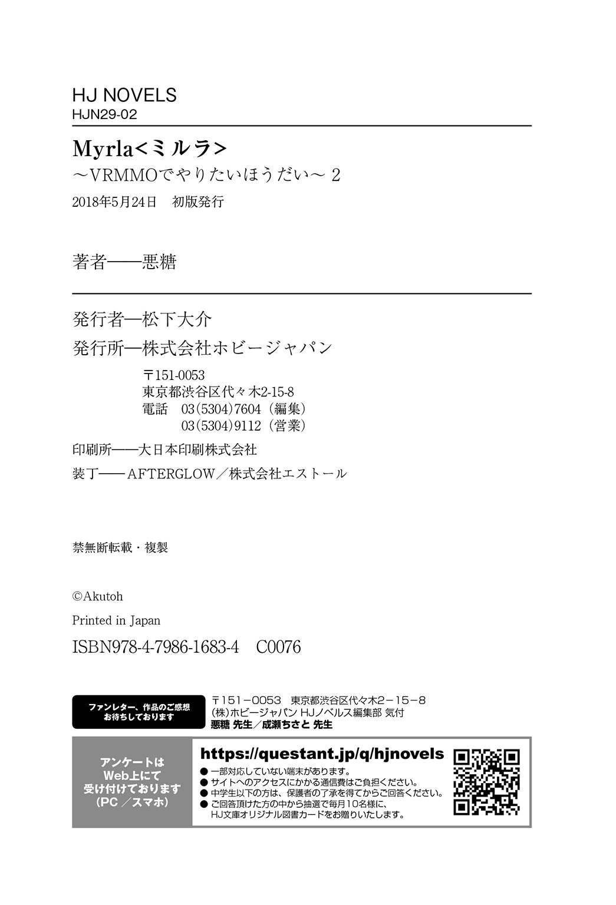

| Myrla<ミルラ>～VRMMOでやりたいほうだい～2 (HJ NOVELS) | |
| 悪糖 | |
| ホビージャパン (2018) | |

７章 行くぞお前ら祭りの時間だ
空は毒々しい紫 に染まり、街中はざわつきに包まれていた。
大自然のクリスタルを突 破 したことで次のイベントへのトリガーは引かれた。予兆として現れたのは空の紫。それだけだ。
このゲームは徹 頭 徹 尾 投げっぱなしだ。イベントが始まるからと言ってワールド全体にアナウンスが流されたりはしない。本来ならばプレイヤーは、これから何が起こるか調べるところから始めなければいけない。
もう少しユーザーフレンドリーってものをお願いしたいとつくづく思う。
「そうも言ってらんないか」
やるべきことは情報の周知。今何が起こっているのか、これから何が起こるのかを然 るべきところに伝えないといけない。それからようやく、どう対応すべきかの話ができる。
そう考えて、普 段 は切っているギルドチャットに接続した。
「ハロー、ラストワンだよ。生産職の皆 さん聞こえるー？」
『事情知ってそうな人来た』
『教えててんちょー、どうして空は紫なの？』
『だから俺 のせいだって。俺がずっこけてラグア神像にツルハシぶち込んだからこうなったんだよ』
「それは関係ないけどラグアに謝 っといてね、マジで」
何やってんだこいつ。この状 況 でラグアと喧 嘩 するとか本気で困る。ちゃんとごめんなさいしてください。
「簡潔に説明するね。たった今攻 略 組は50 レベルＭＡＰ世界樹の大門のフィールドボスを討 伐 しました。その結果自然界と背面界を繋 ぐ門が開かれ、門からウルマティア率いる怪 物 が山ほど出てきているのが現状。オーケー？」
『自然界ってなにー？』『背面界ってなにー？』『門ってなにー？』『ウルマティアってなにー？』『怪物ってなにー？』
「イベント起こした。敵来てる。オーケー？」
『面 倒 くさくなった感あふれる分かりやすい説明をありがとう』
『お前らー。街の中に図書館があるから用語はそっちで確 認 するぞー』
そうしてくれると大変助かります。
自然界はこの世界、背面界は大体地 獄 みたいなもの。門はその境目で、ウルマティアは死 滅 と再生の神。怪物は怪物だ。今日も難しいぞミルラ神話技能。
『それヤバくないですか？ どういった影 響 が出ています？』
「大体みんなが見た通りだよ。空が紫色になって、フィールドには最前線クラスのモンスターが出現している」
『特 徴 は』
「まさに異形そのものだから見ればすぐに分かるよ。現段階で出てきている異形は小型の偵 察 部隊、比 較 的 弱い方だけどとにかく足が速いから絡 まれると厄 介 。レベルは当然のように50 だから、腕 に覚えのない人は気をつけて」
『おいおい、それって』『結構事件だったりする？』『そういやさっき、それっぽいの見たな......』『まじかよお前大 丈 夫 か』
『ギルドマスターより指令を出 します。作戦はいのちだいじに。全員一度ラインフォートレスへの帰 還 を目指し、状況の確認に努めてください。可能なら『帰還スクロール』かロザリオの使用を。何か事情があって帰れない方はチャットにて報告してください』
今回の事件、後手に回れば犠 牲 者 が出る。こう見えて今は一刻を争 う事態だ。そんな中でこの初動の速さは大変頼 もしい。
リースから指令が出たことでギルドチャットが一層賑 わいだす。各所で情報交 換 が始まる中、リースの采 配 は続く。
『銀太さん、今どこにいますか？』
『スタンバってるぜ。何をすればいい？』
『話が早くて助かります。最前線でも戦える人を集めて、救 援 用のパーティを組んでもらえますか？』
『分かった、自力で帰れない奴 らを拾ってくる。遠方のＭＡＰから順に拾っていけばいいんだな』
『ええ、お任せします。後ラストワンさんは参加不可です』
「なぜ名指し」
ツッコむ声に返事は無く、フルメンバーのパーティがトントン拍子で結成される。救援部隊に参加しようと思っていたが釘 を刺 されてしまった。
パーティの結成から出 撃 まで２分足らず。洗練された動きだった。最近銀太は私の面倒を見る以外にも採集護衛なんかを担当していて、こういう時には真っ先に声がかけられる。戦 闘 を苦手とするプレイヤーが多い職連において、得難 い人材になっていた。
生産ドーム前の職連店 舗 にまで足を運び、周囲のプレイヤーに対して矢 継 ぎ早 に指示を飛ばすリースに声をかける。
「リース、来たよ」
「来ましたね。ひとまず職連内はなんとかなりそうなので、今は各プレイヤーの人脈を伝って、職連以外のプレイヤーにも情報を拡散しているところです」
「ふむ。それなら良い物あるよ」
手近な工作台で『海鳴り貝』と『やまびこキノコ』をクラフト。出来上がったのはお手製の『メガホン』だ。
「はいこれ、使い捨てのワールドチャットアイテム。１スタック渡 しとくから、足りなくなったら言って」
「ワールドチャット......。そういえばそんなのもありましたね。助かります」
このゲーム、ワールドチャットはあるにはあるけど滅 多 に使われない。『メガホン』の作製はクラフトの自由度に付け込んだ抜 け道 であって、正規の使用方法はおそらく課金だ。ゲーム内から課金する手段が無い今では、こういった裏 技 でも使わない限りまず使われないシステムになっていた。
『【生産職職人連合】よりお知らせします。ただ今攻略組がフィールドボスを討伐し、連 鎖 してイベントが発生しております。フィールドに最前線クラスのモンスターが出現しているため、一度街へ帰還することをおすすめします』
橙 色 のチャットがログに表示されると、周りから妙 な歓 声 が上がった。あまり使われないだけあってワールドチャットは物 珍 しい。
リースは手近な職人に『メガホン』を渡し、数分おきに今のログを流すよう言 い含 めた。情報周知はこれでオーケー。しかし当座の対応はまだ終わらない。
『銀太さん、職連内のプレイヤーで帰還が出来ていないプレイヤーは後何人いますか？』
『次で最後の一人だ。もう少しで回収できる』
『たすけてええええなんか怖 いのいっぱいいるうううう』
『落ち着け。お前のレベルなら簡単には死なない。大 丈 夫 だ』
『見た目が怖いのおおおおおいやああああああ』
パニックに陥 ってこそいるが、あの人はあれでなかなかの高レベルプレイヤーだ。いかに最前線の敵であろうと瞬殺されることは無いだろう。うん、多分大丈夫。
『っていうか、『帰還スクロール』持ち歩かない奴らって結構いるんだな......』
『たまたま切れてたんじゃないか？ それともリスに盗 まれたか』
『少なくとも二枚は持っとけってあれほど言ったのに』
『帰還のロザリオ』よりは格段に安いとは言え、『帰還スクロール』も消 耗 品 としては高価な部類だ。複数常備しないプレイヤーも居るには居る。
生存率に直結する部分だし、職連店舗でも赤字覚 悟 で販 売 しているが、それでも持ち歩かない人は持ち歩かないらしい。
『ギルドメンバーリストを確認しました、大体のプレイヤーは帰還していますね。では次です、救援の手を職連外にも伸 ばします』
『っていうと、どういうことだ？』
『ワールドチャットで救 援 要 請 を受け付ける旨 を流します。助けられる人は全 て助けますよ』
リースは迷いなく言い切った。率 先 して行動を起こすことを躊躇 わず、誰 かを守るために手を打つことを厭 わない。攻略組とはまた違 う意味で、彼 女 は確かに一線級のプレイヤーだった。
『マスターの指令とあっちゃ仕方ねえな。いっちょやるか』
『でも俺たちだけでどうにかできんのか？ 言っちゃ悪いが、俺らそんなに数いねえぞ』
「だったら並行して義勇兵を募 るよ。リース、それでいいよね？」
『お願いします。山田さん、ラストワンさんの補 佐 をお願いできますか？』
『構いませんが......。マスターは補佐無しでいいんですか？』
『こちらは一人で十分です』
ほんま頼もしいわこの人。生産職の頂点に立つだけはある。
山田さんは基金設立の時にもお世話になった、職連の経理担当だ。職連が持つもう一つのブレインであり、普段はリースの補 佐 官 として活動している。
「分かった、リースは全体指揮に徹 して。部隊の管理は私たちでやるから」
『お任せします。でしたら次は――』
ギルドチャットから一 旦 目を離 し、山田さんとパーティを組む。リースにはやらないといけないことがたくさんある。これくらいは任せて欲 しい。
「大 騒 ぎになりますよ。先 程 まで戦っていたと聞きましたが、行けますか？」
「これくらい疲 れた内にも入らんわ」
「要救助者の受付と指令は僕 がやります。あなたは、パーティの編成を」
「了 解 。よろしくね」
役割分担で早 速 補佐役が入 れ替 わったけど気にしない。十中八九こういうのは山田さんのほうが適任だ。効率は全てに優先される。
増産した『メガホン』を手 渡 して、準備は完 了 。始めよう。
『【生産職職人連合】よりお知らせします。これより自力での帰還が困難な方に救援を送ります。救援が必要な方は現在位置を記して、山田の方までメッセージを送ってください』
『並行してお知らせするよ。救援部隊に志願する義勇兵求む。フルパーティでも個人参加でも受け付けるから、平均レベルと人数を添 えて私ラストワンにメッセージください』
ワールドチャットが二行流れると、反応はすぐにあった。早速何人かから連 絡 を貰 い、即 席 のメモにリストアップする。使うのは何の変 哲 もない紙とペン。アナログ上等だった。
フルパーティと人数割れパーティに分けてリストアップし、フルパーティリストの方をそのまま山田さんに突 き渡す。人数割れしているところは複数のパーティを併 合 することでフルパーティを組み、フルパーティリストの方に突っ込む。
事態が事態だ。志願してくれる方々は協力的で、こちらで勝手にパーティマッチングをすることに異論は返ってこない。とてもありがたかった。
「ラストワンさん、48 ＭＡＰより救援要請です！ 対応できそうなパーティは組めますか？」
「48 ＭＡＰ......。そのレベル帯に行けるパーティなんて、それこそ攻略組くらいしか......」
攻略組。そうだ、攻略組だ。その手があったじゃん。
「ヨミサカ、聞こえる？」
ついさっき別れた奴らにコンタクトを取る。返事はすぐに返ってきた。
『ラストワンか。どうした』
「ヨミサカたちに救援しに行ってほしいところがあるの。頼めるかな」
『構わんさ。何処 に行けばいい』
「ありがとう。担当を代わるから、続きはそっちからで。――山田さん、リストに一個追加。平均レベル50 で、パーティリーダーはヨミサカ」
「また随 分 と大物を釣 り上 げましたね。助かります！」
困ったときの攻略組のお友達。人脈は積極的に使っていきたいと思う。
「でしたら、40 ＭＡＰや43 ＭＡＰ、46 ＭＡＰからなんかも救援要請が来ているのですけども。組めますか？」
「......心当たりが無いことも無い」
「お願いします」
いくらヨミサカパーティでもこれだけの数は回れない。となると、あいつらに頼むしかないんだけど......。
まあいい、この際私情は捨て置こう。ここは譲ってやる。
「......フライトハイト」
『やあやあ、ラストワンちゃんじゃないか。君から連絡を貰えるなんて光栄だね。さあ、僕らはどこに行けばいいんだい？』
「ああくそ、話が早くて助かるよ畜 生 ......！ 【帰宅部】なら３パーティくらい出せるでしょ。担当を代わるから、そっちから指示を貰って！」
『もちろんだとも。この僕が君の助けになれるなんて、嬉 しい限りだよ』
「恩に着せやがって......。貸し三つ、これでいいんでしょ！」
『二つにまけといてあげる』
通信を叩 き切る。やっぱこいつ嫌 い。でも、カンストプレイヤーを数多く擁 する【帰宅部】に頼 らない術は無かった。後で変なもん要求されなきゃいいけど。
『繰 り返 します。自力での帰還が困難な方に救援を送ります。救援が必要な方は現在のＭＡＰと座標を記して――』
『救援部隊への志願者も募 集 してるよ。協力してくれる方はこちらまで――』
定期的にワールドチャットで呼びかけつつ、流れるログを整理してパーティを編成しては山田さんに投げる。
投げて、投げて、投げる。迫 りくるログをただただ効率的に処理し、パズルのように組み合わせては投げ続ける。
効率化と繰り返しは体の奥 底 に染 み付 いたゲーマーの業 。悲しいほどに手早くパーティを組み上げる中、なぜだかハムスターの回し車を思い出した。
＊＊＊＊＊
『こちら【生産職職人連合】です。救援要請も無くなりましたので、これをもちまして作戦を終 了 します。ご協力頂いた皆 様 、誠 にありがとうございました』
リースがワールドチャットで締 めくくると、辺りは拍 手 で包まれた。
『お疲れみんなあああ』『お疲れえええええ』『おつううううう』『ＧＧ』
『勝ってしまったかー。また我々の大勝利で幕を閉じてしまったかー！』
『なんだかんだで犠 牲 ゼロだったんだよな。いやすげえよ俺ら頑 張 ったわ』
『敗北を知りたい』
ギルドチャットはいつも以上に阿 鼻 叫 喚 していた。職連の彼 らは最初から最後までフィールドを駆 けずり回 り、片 っ端 から救助して回っていた。皆さん本当にお疲れ様 です。
職連の方に要 請 を出した人々は、職連と義勇兵の手で全員救出できたらしい。一周目の時も職連主 宰 の義勇兵団は結成されていたけど、初動が固まるまでに何人かは犠牲が出ていたように記 憶 している。これを食い止められたのは、私と言うよりリースの手 腕 による部分が大きいだろう。
協力してくれた方々にも一人一人お礼のメッセージを送る。ありがとう義勇兵。サンキューヨミサカ。フライトハイトの奴にも気は進まないけど、礼は言っておく。
「お二人ともお疲れ様です。おかげで無事乗り切ることができました」
「マスターもお疲れ様です。なんとかなりましたね」
「お疲れ。第一段階は突破ってとこかな」
パンパンパンとハイタッチ。当座を越 えて少しだけ気を緩 める。でも、本番はまだまだこれからだ。
「......ラストワンさん。今不 穏 な言葉が聞こえた気がしました」
「不穏って、何が？」
「第一段階とか何とか」
「ああ」
そう言えば説明してなかったっけか。門から現れた異形の群れはただの偵察部隊にすぎない。
本当の災 厄 は、ここから始まる。
「ざっくり言うと、７日後に異形の大群がラインフォートレスを襲 撃 するよ」
「襲撃イベント、ですか......。ラインフォートレス防衛戦というわけですね。規模はどの程度でしょう」
「規模か、そうだな。あそこに防 壁 があるじゃん？」
窓の奥 遠く、ラインフォートレスをぐるりと囲む堅 固 な防壁を指差す。
「あの上から見た景色全てが敵で埋 まる」
そう言うと、リースと山田さんは絶句した。気持ちは分かる。いくらなんでも冗 談 だろと思っているのだろう。
私も一周目の時、黒い波をこの目で見るまでは同じように思っていたから。そして実際に見た時、出てきたのは乾 いた感想だ。
これ、人間が勝てんのかと。
「――ってくらいを、想定しといたほうがいいと思う」
「ええ......。想定、ですね。そうでしたね」
「......その割にはやけに確信を持っているような言い方ですけどね」
何か勘 付 いた顔をしているのは山田さん。猜 疑 心 マシマシの視線に笑 顔 で答えると、疑惑の目が強まった。
「いえ、想定としてはそれくらいでいきましょう。予想より少ない分には問題がありません」
「マスター、そうではなくて」
「彼女の正体をつつくのは今じゃなくていい。そうでしょう？」
めちゃくちゃ疑われていた。さすがにやりすぎたか。
しかしこのイベントは今後の展開を大きく左右する天王山だ。情報供 与 を手加減するわけにはいかない。疑 惑 をいちいち気にしてもいられなかった。
「......ラストワンさん、あなたは僕たちの味方ですか？」
「味方だよ味方。味方って言ったら信じてくれる？」
「そういう時は弁解するものですよ」
「弁解ならもうやったつもりだけど」
意味は語らずとも分かるだろう。私は既 に行動で示してきた。
口先で丸め込む自信があったのなら最初からそうしている。それができなかったから、私は地道に築き上げてきた。
「言葉で自分を定義してください。他人による自由な詮 索 というものは想像より厄介です。曖 昧 な定義を置いておけば、ひとまず詮索を定義の是 非 に縛 ることができます」
「......めっちゃ勘 いいんだ、私」
「ではそういうことで」
山田さんは一転してにっこり笑う。それで納 得 してくれたらしい。読めない人だった。
「対策会議をしましょうか。具体的に敵の規模を想定し、それを迎 え撃 つための戦力はどれほど必要か。やらねばならないことはいくらでもあります」
「そうだね。生半可な対策じゃ到 底 持たないと思う。全力でやろう」
「随分と乗り気ですね。ラストワンさん、会議とか苦手なタイプだと思っていましたが」
「事情が事情だから」
一周目の時、私たちはこのイベントに失敗した。
攻略組どころかプレイヤー総出で対応したものの、敵の攻 勢 に飲まれて大苦戦。あわやラインフォートレス陥 落 寸前のところまで追い込まれ、ラグアの手を借りる形でなんとか凌 いだ有様だ。
もちろんプレイヤーの犠牲は多大で、更 に無理したラグアが力を失って街を守る大結界が消失。以後プレイヤーにとって安全地帯は無くなり、人口は減少の一 途 を辿 ることとなった。
それは一周目の私たちに与 えられた明確な敗北だ。ある意味では私たちが攻略不可能に陥った決定的な瞬 間 でもあった。
「この一戦、負けられないよ」
ギアはトップに入っている。出し惜 しみは一 切 無しだ。
ここが私たちの正念場。負けられない一戦が、始まろうとしていた。
＊＊＊＊＊
「――とまあ、敵の規模としては大体こんな感じ。一体一体が最前線クラスのモンスターだし、何より数が多い。とにかく多い。攻略組だけじゃとても対処しきれないくらいに」
「なるほど......。海から攻 めてくるモンスターは確認されていないんですね」
「うん、敵は門をくぐって出てくるから水 棲 のモンスターは居ないよ。でも飛んでくる奴はいるから、そっちの対処は必要」
そのままの流れで対策会議。と言ってもまだ内容にまでは踏 み込まず、敵勢力の想定までだ。
ホワイトボード（その場で作った）におおまかな地形図と敵がやってくる方角を書き終え、私は席につく。
「わかりました。これを元に対処法を考えようと思いますが......」
職連店舗のそれなりに目立つ場所で話し合っていたのがまずかったか。いつの間にかお祭り騒 ぎをしていた職人たちが、モノ言いたげに私たちの様子を窺 っていた。
「直接民主制にしましょうか」
「そうですね。僕らだけで決めるより、そちらのほうがいいと思います」
船頭多くして船山に登らないといいけど。
そんなわけでギルドチャットを会場にした職連総出の対策会議と相成った。
『改めて整理しましょうか。今回の大規模イベント、攻略組の方々だけに任せておくわけにはいきません。戦場になるのは私たちのこの街です。自分の家は自分で守る。【生産職職人連合】総員、その意地を見せなさい』
『はいはいはい！ 大 砲 作ろうぜ大砲！ 砲の数こそパワーだろ！』
『いや待てまずは防壁の増築からだ。リソースゲームになるなら土台となる防 御 はかかせない』
『だったら俺は機動力を推 そうか。走 攻 守 の三拍子揃 えてあのマウンドに立とうぜ、ブラザー』
『誰も聞いてない......』
会議が踊 りだすまで０．５秒もかからなかった。この会議が何処へ走り出すかは知らないけど、この先の展開は大体読めた。
こいつら、止まらないわ。
『落ち着け、順番に検証していくぞ。どういったゲーム展開になったとしても火力は必要だ。大砲以外に火力を投射できるアイテムはあるか？』
『最高にイカした奴がある。これに比べれば大砲なんてオモチャに見えるくらいのやつがな』
『随分と自信満々だが、何だ、言ってみろ』
『レールガン』
『やだかっこいい』
『どうやって作るんだよそんなもん』
早々に司会役が奪 い取 られ、我らがリースも唖 然 としていた。泣かないで。
『戦争なんだろ？ だったら戦車だ！ 大砲に履帯と装 甲 付ければ完成よ！』
『動力はどうすんだよ。内燃機関の開発からはじめるつもりか』
『それにコストがかかりすぎないか？ 戦車から履帯と装甲剥いで大砲にしたほうが安上がりだし、量が作れる』
『野戦ならともかく、防衛戦だからなぁ......。まあ少しくらいはあってもいいと思うが、なぁ？』
『お前らにはロマンが足りねえ......』
戦車、予選敗退。敗因は現実性不足。私は好きだよ、戦車。でも乗りたいとは思わないかな。
『いや待て、Ｔａｎｋは無理でもＣｈａｒｉｏｔという手がある』
『ついに古代兵器チャリオットが解き放たれるのか......』
『馬なんていないけど、どうすんだ？』
『そこは従魔に牽 かせるとか』
『お前天才かよ』
従魔は戦 闘 力 こそ無いが、機動力や特 殊 能力を持っているため生産職には重宝されている。
入手と育成に相応の手間がかかるから攻略組にはあまり普 及 していない。時間をかけてじっくり育てるコンテンツは中 堅 層 だけの特権だ。
『だったら荷台に載 せるものも、大砲よりむしろ――』
『そこまで、そこまでです！ 細部まで詰 めていたら一生進みません！ 次行きますよ！』
『おっと、ギルマスの言うとおりだ。従魔を使うって案が出たから俺はそれに乗っかるぜ。従魔を使った航空戦力を提案する』
『航空戦力......。まさかＭＭＯでそんな言葉を耳にする日が来るとは......』
『具体的にはどうすんだ？ 当方は軍用ドラゴンという電波を受信してすこぶる滾 っている』
『心震 えるワードだけど、ドラゴンなんてテイムできたか？』
『ここはセオリー通り行こうぜ。飛行従魔で直接攻 撃 するより、空から爆 撃 の雨を降らそう』
『妥 当 なとこだな』
制空権さえ確保できれば一方的に攻撃できるし、良さそうに聞こえる。ただ、敵方の飛行モンスターも少なくはない。活 躍 させるにはそれなりのバックアップが必要だろう。
『陸の戦車に、空の爆撃機か。おい知ってるかお前ら、ラインフォートレスには海もあるんだぜ』
『まさか......軍 艦 !? 軍艦を作るってか!? 』
『はいはいはい！ フリゲート！ 拙 者 フリゲートを所 望 いたす！』
『馬 鹿 野 郎 ガレオン船に決まってんだろ！』
『ガレオンまで行くなら戦列艦 がいいです先生！ 砲 門 の数こそパワー！』
『なんでお前ら当然のように帆 船 推 しなんだよ』
『そもそも海からの敵は来ないんだろ？ 軍艦なんて作ってもただの砲 台 にならないか？』
『だったら航行能力犠牲にして砲を積みまくればいいだろ！』
『やったぜ！ 夢の２００門艦だ！』
『駄 目 だこいつらロマンに生きてやがる』
軍艦なんてあっても役に立つかなぁ......。ロマンはあっても現実性はやっぱり無いと思うんだけど。こいつらの基準がいまいちわからん。
『で、色々意見出たけど結局何作るんだ？』
『これはまだ火力の選 択 だからな。さっさと終わらせて防御方法についても議論したい』
『その次は戦時のドクトリンも組もうぜ。兵 站 を整えて消耗品の供給ラインや輸送ラインを敷 かんと、勝てるもんも勝てん』
『一発逆転の超 兵 器 についてもまだだぞ。例えばそうだな、レールガンはどうだ？』
『だからレールガンは諦 めろって。そういう武器じゃないだろ』
『お前らこういう話になると途 端 に生き生きするよなぁ......』
喧 々 囂 々 と語り続ける職人たちは、とどまる所を知らない狂 騒 を熱心に生み出している。
このまま放っておくと一生だって話し続けそうだ。僕の考えた最強の戦術を編み出すのは結構だけど、残念ながら今は時間が無い。
「リース、いい加減まとめないと......。リース？ 大丈夫？」
「もう少し、もう少しだけ現実逃 避 させてください......。ちゃんと収 拾 つけますから......」
ダメそう。さすがのリースもグロッキーだった。リースが倒 れた今となっては、もはや彼らを止められるものなど誰もいない。
「山田さん、これ止められるかな」
「無理でしょう。こうなったが最後、行き着くとこまで行き着かないとどうしようもできませんよ。僕にできることは、議論材料となり得る職連の備 蓄 データを提示することだけです」
「これ以上燃料投下しないで。いよいよもって終わらなくなるから」
山田さん、多分だけどこの状況を楽しんでいる。人 畜 無 害 そうな見かけによらず、お祭り騒ぎとか好きそうなタイプだった。
「彼ら、時間はかかりますけどきっと良い結論出しますよ。放っておくのもひとつの手だと思います」
「それだと初動が遅 くなっちゃうよ。一週間しかないってのに、議論ばかりで時間を潰 すのは痛すぎる」
「熟考されたベストより即 決 速 攻 のベターですか。それも一理ありますね。でしたらラストワンさん、色々意見が出ていますが何を作りたいですか？」
何をって、私が決めていいのかな。
まあサブマスターとは言え、私も所 詮 は一人のプレイヤーだ。私一人の意見で決まるということも無いだろう。直感が囁 くまま、深く考えずに発言した。
「もういっそ全部作ればいいんじゃない？」
その言葉は議論の間 隙 を縫 い、部屋中を静 寂 に叩き落 としながら確かな力強さを持って響 き渡った。
『......マジで？』
『おい聞いたかお前ら、サブマスからゴーサインが出たぞ』
『邪 神 様の思 し召 しとあっちゃ仕方ないな。いやまったくもって仕方ない』
『なんでも作って良いんだな!? よし来たやったぜサンキュー店長！』
わぁ。
なんだかとんでもないことになった気がする。ねえこれ、どうしよう山田さん。なんで笑ってるの山田さん。
血 涙 でも流しそうな形相で私を睨 むリースから目をそらしつつ、口笛を吹 く。しーらない。
『ストップストップストーップ！ 全部作るのは無理ですよ！ 時間も資源も限られているんですってば！』
『ええー？ ギルマスのいけずー』
『いいじゃんいいじゃん。職連のお金で好きなように好きなもの好きなだけ作ったっていいじゃん』
『せっかくの戦争なんだからさー。みんなでいっぱい楽しもうよ、ねー？』
『だから現実的に無理だと......！ このギルドに私以外の理性ある人間はいないんですか!? 』
理性ある人間が必要なんだって。私理性担当に立候補していいかな。そっか、私じゃダメかぁ。でも山田さんもダメな方の人だよね。気が合うね。
しばらく困ったようにあたふたしていたリースは、突 如 ぴたりと動きを止めた。そして有 無 を言わせぬ凄 みを放ちつつ、ゆらりと再起動する。
『......分かりました。そこまで言うならこちらにも考えがあります』
『やっべ、ギルマスが怒 った』
『だから俺はやめとけって言ったんだよ。なあ？』
『誰 一人 理性なんて無かったんだよなぁ』
『黙 りなさい。いいですか。これから皆 さんには、「己 の作りたいもの」を掲 げ、それに対する「賛同者」を集めてもらいます』
なんか始まった。
『賛同者が五人以上集まった企 画 は採用です。それ以下の人数しか集められなかった物は不採用。基準は以上です。いいですね』
『えっ、それって、つまり』『人さえ集めればなんでも作っていいんですね!? 』『ギルマスったら太っ腹ー！』
『ちょっと待って、陸海空軍の編成はさすがに五人やちょっとじゃ足りないです先生！』
『でしたら各企画に『メガホン』を１スタックずつ渡します。それを使って職連外のプレイヤーに協力を仰 いでください』
リースは面白 いこと考えるなぁ。これなら可能な限り多くのものを作れる上、明らかにダメな企画は自然淘 汰 されて、更に不満も出にくい。ギルド単位での統 率 は失うことになるけど悪くないんじゃないか。
職連外のプレイヤーを巻き込むにしてもついさっき恩を売ったばかりだ。これ、結構上手 く行きそう。
『つまりこれはあれか、俺 たちで部活を立ち上げてメガホンで部員を募れってことか』
『なんで学園？』
『となると戦争が文化祭、企画が出し物ってわけだな。ギルマスは先生？ それとも生徒会長か？』
『なんで学園？』
『どっちでもいいんじゃないか。職連学園文化祭の始まりだ。とびっきりの思い出にしようぜ』
『なんで学園？』
戦争だと思っていたら唐 突 に学園編が始まった。
以上、解散。リースが強 引 に会議を打ち切ると、職人たちはすぐさま活動を始めた。やいのやいのと騒ぐ彼らは誰もが真 剣 で、どこか楽しそう。こいつらの手にかかれば戦争も文化祭も変わらないのかもしれない。
「ラストワンさん、少しいいですか？」
彼らのために『メガホン』を増産していると、一 般 チャットの方でリースが声をかけてくる。
「ラストワンさんには特殊な役回りをお願いしたいです。危険な役割になりますが......」
「ほうほう、聞かせて聞かせて」
「お願いしたいのは素材採集です。今回の作戦には膨 大 な物資の供給が必要になります。ですので――」
「最前線でレア素材がんっがん掘 ってきていいんだね！ まっかせて！ ひゃっほう！」
「テンションの上がりどころがおかしいような気がしますが」
ついにリースのゴーサインが出た。自由だ。私は翼 を手に入れた。
「ただしです！ 行くのならばフルパーティの護衛をつけるのが絶対です。分かりましたね？」
「じゃあ銀太と、『ヘラクレス』と......。後はじいさんと山田さんで」
「ホムンクルスとＮＰＣを護衛にしないでください！ あと、山田さんには頼 みたいことがあるのでダメです！」
「えー」
山田さんも職連のサブマスターだからなぁ。彼もまた色々と仕事があるんだろう。
「んじゃ適当に募って行ってくるよ」
「気をつけてください。まだまだやってほしいことがたくさんあります、変なところで死なないでくださいよ」
「私は死なないよ。最後の一人になるまでね」
なんたって実績がある。嫌 な実績だけど。
増産した『メガホン』をリースに渡し、職連店 舗 を出る。さあ、忙 しくなるぞ。
＊＊＊＊＊
「ってわけで、行こう銀太」
「あ、俺やることあるから」
ふられた。
なんでい、付き合い悪いでやんの。「それじゃーなー」と足早に去っていく銀太の背中にゆでたまごの殻 が綺 麗 に剥 けなくなる呪 いをかける。一生苦しめ。
となると困った。どうしよう、誰連れて行こう。連れて行っても大丈夫そうな人か......。
「へいヨミサカ」
『任せろ』
用件すら言ってないのにこの二つ返事である。頼もしいやつだよまったく。
ヨミサカパーティと打ち合わせをして、城門前で待ち合わせる。護衛にしちゃ過 剰 戦力だけど、どうせ今の攻 略 組なんて向こう一週間は暇 人 だ。手伝ってもらっちゃおう。
城門前でヨミサカを待っていると、お呼びじゃないのがやって来た。
「やあ。僕は何をすればいいんだい？」
「家に引きこもって一日中ネトゲしてろ」
そう言うと、フライトハイトはすごーく微 妙 な顔をした。先制点一点。
「どういう風の吹き回しなの？ さっきからやけに協力的じゃない」
「勘 違 いしないでほしいね。【帰宅部】の目的はただ一つ、一刻も早く現実へと帰 還 することだ。君たち【生産職職人連合】の行動は僕たちの目的とも一 致 している。協力するのは自然だと言えないかい？」
「本音は？」
「君たち職連がどの程度か見定めたい。無能集団が群衆を扇 動 しているようじゃ、勝てる試合も勝てなくなるからね」
「素 直 でよろしい」
くたばれフライトハイト。一々悪意がなきゃあんたは協力ひとつできないのか。ツンデレ枠 狙 いにしちゃ出来が悪すぎんだよ。
「まあいい、協力するってんなら文句は無いよ。こき使ってやるから感謝して」
「自分の立場分かってる？ 君は協力してもらうほうで、僕は協力してあげるほうだよ？ 言葉には気をつけるんだね」
「ならクビだ。さっさと帰れ」
「おいおい、言わせないでくれよ。僕たちほどの戦力を遊ばせておくことがどれほどの損失だと思う？ 君の意のままに動いてやると言っているんだ。礼のひとつも言ったらどうだい？」
「......あざっす☆」
「似合ってないよ、そのキャラ」
舌打ちしてガンつける。フライトハイトは百点満点の輝 かしい笑顔をしていた。世界中のタンスというタンスに小指をぶつければいい。
腹立たしいが、戦力は戦力だ。使えるもんは使ってやる。ギルドチャットに切 り替えて報告する。
「こちらラストワン。攻略組の協力を取り付けた。私の下で動くそうだから、死なない程度に人を苦しめる方法を教えてほしい」
『前半と後半の繋 がりが見えないんだけど、俺の目が悪いのかな』
『よくわかんないけど攻略組が協力してくれんのか？ 職連と攻略組の合同作戦かよ、すげぇな』
『俺も苦しめられたい』
『分かりました。それでしたらラストワンさんと愉 快 な仲間たちを採集委員会として扱 います。各部活の皆さんは、足りない素材があったら採集委員会の方へと依 頼 してください』
リースさんや、連中は不 愉 快 な仲間たちですよ。
早速届く各部活からの依頼をざっと整理。ヤバそうなものを上から順番にピックアップしていく。
「フライトハイト、『帯電した木材』『ひかり水』『銀霊樹の聖雫』を20 ずつ。できる？」
「僕 らにできなかったら誰 ができるんだい？」
「分かったからさっさと行け」
フライトハイトは肩 をすくめて去っていく。相変わらず一言多いんだよコイツは。
その後やって来たヨミサカパーティと合流し、フィールドへと出かける。私は私で採りに行かなきゃいけないレア素材が山程ある。
やるぞ。大採集の始まりだ。
＊＊＊＊＊
フィーバータイムだった。
一人じゃとても歩けないような高レベルマップで、考えうる限り最良の護衛に守られつつ採集に専念できる。
ありとあらゆるレア素材を乱 獲 し、私はフィーバータイムの狂 乱 に身を委 ねていた。
「よっし、『輝く泥魂』と『楽園の水薬』の採集終わり！」
「ようやく終わったか......。後は帰るだけか？」
「なんの、まだまだこれからだよ！ 次は輝きの海で『仄 暗 き海の鱗 』を釣りに行くよ！」
「............」
そして護衛として引きずり回されるヨミサカパーティは、発 酵 するほど暇 を持て余していた。
護衛と言ってもそんなに積極的にモンスターが襲 ってくるわけでもない。移動先にいるモンスターを適当に狩 り散らせば、後は私が採集を終えるまで暇を持て余すことになる。
『蒼 海 龍 の釣り竿 』をフル稼 働 させてレア素材をガンガンフィッシュ。たまに深きものとかいうモンスターも釣り上げるけど、ここぞとばかりに大 技 を叩き込むヨミサカパーティの手により速 やかに爆散させられることとなる。
「ねー。ラストワンー。暇ですー。早く次の敵を釣り上げるですよー」
「わかった、わかったから私の周りにゾンビを待機させるのやめて。本気でやめてシャーリー」
この前の一件以来、ゾンビはトラウマになっていた。それを私に近づけるんじゃない。浄気を放つ『マガマガお札』を貼 って、ゾンビへの抑 止 力 とする。
『反セノビック錠 』で経験値を溶 かしつつ、釣って、釣って、釣りまくって。それが終わったら掘って採って収集して。大量のレア素材をインベントリいっぱいにかき集める頃 には、気がつけば私の側にはおっさんしか居なかった。
「......あれ、他のみんなは？」
「向こうで遊んでる」
おっさんが指差した方向でヨミサカとジミコが火花を散らし、そこから少し離 れたところでシャーリーがおびただしい数のゾンビに組体操させていた。
暇さえあれば即 バトル。戦乱と闘 争 の申し子たちは、いよいよもって意味のない闘争に身を投じ始めた。
「まあ、こうなるだろうなって思ってたけど......。付き合わせちゃってごめん。今度お礼するよ」
「いらん気回すな。仲間だろ、貸し借りにするんじゃねえ」
仲間、か。攻略組に入らなかった二周目の私でも、おっさんは仲間って言ってくれるんだ。
その言葉はどこか面映ゆいようで、素直には受け入れられそうになかった。
「......帰ろっか。今日はとりあえずここまで。明日はまた別のとこに採集しにいくから、よろしくね」
「あいよ。おーい馬 鹿 どもー。今日はここまでだそうだ。帰るぞー」
ヨミサカパーティを呼 び戻 し、ラインフォートレスへと戻る。そこで彼らとはお別れだ。また明日会おう。
そのまま職人地区へと足を運ぶ。職人地区は夕暮れ時だと言うのに活気に満 ち溢 れていて、中でも生産ドームは熱 狂 とも狂騒とも取れぬ大 騒 ぎが巻き起こっていた。
そこかしこで職人たちが侃 々 諤 々 と議論を行い、あちらこちらで金 槌 が鳴 り響く。怒 声 は飛 び交 い蒸気は吹き出 て、パワーと活力が混 沌 と渦 巻 くここは地 獄 の一丁目。
そんな生産ドームの片 隅 に、不 機 嫌 そうに壁 に背を預けるプレイヤーが一人。
「うっす」
「うっすじゃない。こんな場所に僕を待たせるとはいい度胸じゃないか」
攻略組が首級、フライトハイト大先生その人だった。
「何もお山の大将が出張らんでも、使いの者でも寄 越 せばよかったのに」
「君との折 衝 に生半可な者を寄越せるか。何されるかわかったもんじゃない」
「人をなんだと思ってんだ......」
言わんでもわかる。いい意味では決して無いのだろう。
クリスタル戦の時と言い、彼は随 分 と私を評価してくれる。そんなに警 戒 せんでも、私はむしろフライトハイト以外の連中には中立だよ。あんたには敵対だけど。
「頼んだものは？」
「これで全部だ。随分と手間をかけさせられたよ」
「ありがとう。じゃ、また明日連 絡 するから。よろしく」
「......おい、待て」
ドスの利いた声でフライトハイトがキレる。いつも人を喰 ったような態度のこいつにしては、珍 しくストレートな感情表現。
「随分と軽く済ませてくれるじゃないか。いつから僕らはそんな風に仲良く話すようになった？」
「何言ってんのふーちゃんってば。ウチらマブダチじゃん？」
「はったおすぞ」
「やってみろ」
バチッと剣 戟 を重ね合わせる。唐突に始まったＰｖＰに、しかし周囲のプレイヤーは見向きもしない。各 々 自分のことに忙しかった。
「確かに協力はすると言った。だがそれは目的が一致しているからであり、君たちと馴 れ合 うつもりは毛頭無い。履 き違 えるなよ」
「んなことは分かってる。でもね、職連がやっていることはあくまでも有志を募 った協力体制なの。言っちゃえばボランティアだ。ありがとう以上のことを求めようってならお門 違 いも甚 だしいよ」
「そんな画一的なもので僕らを縛ろうと？ 僕ら【帰宅部】の価値を見誤っているんじゃないか？」
「納得行かないならさっさと失 せろ。あんたらが居なくても、こんなイベント越 えられる」
そこでフライトハイトは得物を引く。そして、測るような目で私を見た。
「それは君が居るからか？」
――聞きたかったことはこれだな。
散々まくし立ててくれたような瑣 末 事を、本気で気にするほど小さい奴 じゃない。あんなのは話の枕 だ。
「答えろラストワン。僕ら【帰宅部】の力が無くとも、君はこのイベントを越えられるのか？」
「どっちで答えてほしい？ ジョークか、それともガチか」
「ブレンド」
「難しいこと言うな......」
コーヒーじゃないんだから。
「【帰宅部】が居なくとも勝算はある、って言っとくよ」
「......言ったからには取り返しはつかないよ。たかだか一 介 のプレイヤーが、よくもそこまで言ってくれる」
「やりようはあるってだけで、協力してくれたほうが楽っちゃ楽。だから手伝って？」
ストレートにお願いしてみた。こういう手合には案外通じるもんだ。通ればラッキーくらいの、軽い気持ちの一言。
「いいだろう、気が変わった。明日からも君に手を貸してやる」
通った。
どういう心境の変化だ。あっさりしすぎていて、むしろ私が警戒を引き上げる。こいつ、この一 瞬 で何を企 んだ？
「手を貸すのはあくまでも君に対してだ。職連に対してではない。言っている意味は分かるな」
「......そっちは瑣末事だと思ってたけど。余 程 私に貸しが作りたいと見える」
「君には色々と利用価値があるからね。近いうちにまとめて返してもらおう」
それで満足したのか、フライトハイトは生産ドームから去っていく。その後ろ姿を私は黙って見送った。
職連ではなく私個人に手を貸す、と。それなら【帰宅部】の力を借りなければ話はこれで終わりだ。これ以上余計な借りを作ることも無い。
「何企んでるか知らんけど......」
いいだろう、その奸 計 乗ってやる。今回のイベントに出 し惜しみは許されない。勝率を下げることはしたくないんだ。
それに、気に食わないが私とあいつの目的は基本的に一致している。本意でないことをさせられる可能性は低いと見た。
パン、と手を叩 いて切り替 える。あいつのことはいいや。それより、やるべきことがあるんだ。
インベントリの中の素材を一通り確 認 。よし、頼まれていたものは全部あるな。
「採集委員会ですー！ お届け物にあがりましたー！」
生産ドーム中に聞こえるよう、声を張り上げると、無数の職人たちが一 斉 に私の方をギロリと向いた。
「素材、素材いいいい！ 素材をよこせえええええ！」
「おいこっちが先だ！ 頼んだアイテム、しっかり耳揃 えて持ってきたんだろうなぁ!? 」
「お願いします、病気の母のために今すぐ素材が必要なんです！ 通してください！」
わかった。わかったから一列に並べ。ほれよ、お待ちかねの新 鮮 な素材だぞ。たんとおあがり。
リストを確認しつつ、飢 えた子鬼のように群がる部長たちに素材を受 け渡 す。目もくらむような高級素材の数々がばっさばっさと卸 されるここは、生産ドームでも異様な熱気を醸 し出していた。
状 況 が状況ゆえに無 償 でやっているけど、ちゃんとお金のやり取りをしたら相当な金銭が発生したことだろう。揉 め事 もなく回っているのはひとえに生徒会 と生徒会長 の手 腕 と言える。
「フライトハイトへの借りも経費で落としてくれないかなぁ......」
ダメだろうね。あいつ、私個人に言いたいことがあるみたいだし。
「後は......、帆 船 部が来てないな。帆船部さーん？ 帆船部さんはいるー？」
「あいつらは港地区だぜ」
「あー、なるほど。船作ってるならそりゃ港か」
そういうことらしいので、港地区まで遠 征 する。爆炎舞い閃 光 弾ける職人地区よりも、港周辺は数段静かだ。というかあの場所の狂騒、いい加減誰か止めろって言いたいくらいにはボルテージが高まっている。いつか誰かがやらかすぞ、あれ。
港地区に建造されはじめた巨 大 な木造船。それに取り付いて作業をする男たちに向かって叫 んだ。
「帆船部ー！ 届け物ー！」
「補給か！ 助かる！」
降りてきた帆船部の部長さんに木材を一式引 き渡す。これで今日の仕事はおしまいだ。疲 れた、もう寝 よう。
渡すもの渡して帰ろうとすると、帆船部の部長さんに回り込まれた。
「なに？ 私帰って寝たいんだけど」
「なんの、まだまだこれからじゃねえか。ちょっと付き合ってけよ」
今日は朝からずっと動き回っていたからさすがに眠 いの。明日も一日採集しなきゃだし、早めに解放してくれないかなぁ。
「ちょっくら議論が揉めちまってよ。サブマスとして意見くれないか？」
「......もう。ちょっとだけだからね」
「戦列艦の一等艦を建造するってとこまではまとまったんだが、カロネード砲とデミ・カノン、どっちを主 軸 にするかで揉めちまってさ」
何語だよわかんねーよ帆船バカ。用語を知らない人でも分かるように話せ。
「よくわかんないけど、一番火力高いやつでいいんじゃない？」
「するってえと......。カノンロイヤルってことか!? おい聞いたかお前ら！ カノンロイヤルガン積みだ！」
「正気かよ部長！ 確かに火力は桁 外 れだが、まともに運用できなくなるぞ！」
「バッカヤロー！ マトモなことしてどうすんだよ！ 邪神様はぶっちぎりにイカれたバケモノ船をご所望だ！ それに応 えないで何が船大工だってんだよ！」
「部長......！ そうだな、こうなったら限界まで火力積んでやるか！ どうなったって知らねーぜ！」
私も知らない。彼 らの何かに火がついたらしい。っていうか、カノンロイヤルってなんですか。
雄 叫 びを上げながら建造を続ける海の男たちからそっと目を離す。いいや、寝よう。
＊＊＊＊＊
最前線で素材を掘りつつ、リアルタイムで飛んでくる採集依頼を整理しつつ、【帰宅部】に仕事をいくつか回しつつ、飽 きてきたシャーリーにお菓 子 を与 えつつ、ＰｖＰに勤 しむヨミサカとジミコを眺 めつつ、ツルハシを持って私に切りかかってくるゾンビを蹴 り飛ばす。こいつら自由か。
おっさんだけは慣れないなりに手伝ってくれていた。このおっさんはいいおっさんだ。でもね、採集スポットの数には限りがあるから、熟練度が高い私に任せてくれたほうが早いんだ。ごめんねおっさん。
「......すまん」
「邪 魔 だすっこんでろヒゲ野 郎 」とにこやかに言うと、おっさんは肩をすぼめて体育座りした。その背中をシャーリーが爆 笑 しながらバシバシ叩く。
少しだけ良心が咎 めたけど今は効率命。ここは私の戦場だ。力無きものは去るが良い。
「ここの採集は終わりか。えーと、残りは......」
残りの依頼をチェックしていると、ふと目が霞 んだ。なんだろ、疲れてんのかな。
ここ数日は昼も夜も無く採集に明け暮れる日々が続いている。連続活動時間はとっくに60 時間を超 えているだろう。今日くらいは仮 眠 を取りたい。
「今日、寝れるかな......」
マシンガンのように飛んでくる依頼は私に休 憩 を許してくれそうに無い。どいつもこいつもメッセージに【至急！】だとか【緊 急 です！】だとか【なる早で！】とか気楽に書いてくれる。そんなこと書いても私の処理能力は既 に限界近いよ。
次の採集ポイントに移り、今度は虫あみで大気中の『上質なカオス』をかき集める。ここ数日で習得した特技がひとつあって、今の私は他事を考えながら秒間12 個のペースで採集をできるようになった。ツルハシを振 ろうと思ったときには既に鉱石は山となり、釣 り竿を取り出したと思ったら魚がインベントリから溢れ出す。瞬 間 的 に時空跳 躍 を果たしているのかもしれないけど、単純に採集行 為 そのものが意識から外れるほど熟練したんだろう。
変化は私だけではなかった。ヨミサカとジミコは今や全面戦争とも言わんばかりの激しいＰｖＰを繰 り広 げ、シャーリーはおびただしい数のゾンビを召 喚 維 持 することでＭＡＰ全域のモンスターを片手間に押 しつぶす。本来なら穏 やかなはずのこのＭＡＰ、礼 賛 者の小庭は死体が闊 歩 し天上の戦いが繰り広げられる世紀末の様相を呈 していた。
「あー、もう無理、限界。インベントリもパンパンだし今日はここまで！ 続きはまた明日！」
「明日っていつだよ」
「３時間後かな」
イベント中の仮眠は３時間まで。廃 人 とのお約束だよ。
ややげんなりした顔のおっさんがヨミサカとジミコを呼び戻し、ラインフォートレスへと帰還する。疲れた顔のおっさんと、どこか充 実 した顔のヨミサカとジミコ、飽きて眠そうにしているシャーリーとはそこで別れた。また明日ね。
「【帰宅部】の奴らは仕事してっかな」
一度アトリエの方まで足を向け、軒 先 に設置した素材ボックスを開く。中には【帰宅部】の方に依頼を回した素材がぎっしりと詰 め込まれていた。
「......『厳冬雪』が足りてないじゃん」
不足している『厳冬雪』の代わりに、下位素材の『凍 てついた雪』がいくつか入れられていた。こんなもんで誤 魔 化 すな。
進 捗 ダメじゃないか。できないんだったらそう言えばいいのに、まったく。はぁ、もういいや、足りない分は明日私が採ってこよう。
イベントが進むにつれ、フライトハイト率いる【帰宅部】は段々とよくわからない集団になっていた。もはや互 いに言葉での対話はなく、これ欲 しいとメッセージすれば、いつの間にか素材がアトリエ前のボックスに突っ込まれている。ひょっとしたら私が会ったフライトハイトという人物像は幻 覚 にすぎず、その実体は妖 精 や小人の類 なのかもしれない。
「むしろそっちのほうがいいな。うん、是 非 ともそうであってほしい。本案件は私議会にて可決ということで」
アホなこと言ってないで、インベントリを整理してから生産ドームの方に向かった。
生産ドームに足を踏 み入 れた瞬 間 からいくつもの視線を感じる。彼らは飢えた狼 だ。私が餌 を持ってきたということを理解しているから大人しくしているが、そうでなければ暴れだすだろう。
配布用の露 店 を設置して、覚 悟 完 了 。
「さいしゅ――」
「キタキタキタキタァァァアアアアアッッ！」
「ヒャッハー！ ネコソギィ！ ネコソギッダオルァァァン！」
「カリノジカンダ！ カリノジカンダ！ カリノジカンダ！」
「待ってせめて最後まで言わせて」
獰 猛 な唸 り声 をあげつつ、部長たちは一糸乱れぬ列を作った。殺 到 したら結果的に餌にありつける時間が遅 れるということは分かっているらしい。理性的な獣 はむしろ怖 い。
「ウォウウォウウォウ！ ハラガヘッタゾ！ ハラガヘッタゾ！」
「エサハマダカ！ エサハマダカ！ シンセンナ、チノシタタル、ナマニク！ ナマニクウウウウ！」
「アオォォォォオオオオオン！」
一部野性に返っていた。あれどうしよう。というかいい加減誰か止めろ。
一刻も早くここから離れたい一心で、超 高 速 で素材を配布する。部長たちに部活名と必要な素材を聞く時間すら惜 しいと考えた頃には、誰かがプラカードを配布してそこに必要な情報が記 載 されていた。冷静に効率を突 き詰める狂 った獣たちを見て、尚 更 ここから離れたくなった。こいつらこわい。
気がつけば列は一列から三列に組み変わり、それを一人で捌 く私が居て。この嵐 が過ぎ去ったのは８分20 秒後。
ベストタイムだった。
「むなしい......」
「お疲れ委員長。今日もありがとな」
「また明日よろしくー」
「よーっし、素材も入ったし気合いれていくぞー！」
餌を得て人間性を取 り戻した部長たちが元の場所に散っていく。つかれた。かえろう。
その前に帆船部にも素材を供給しないといけない。著 しく削 れたメンタルポイントを回復すべく、海のさざ波を求めて港地区へとふらふら移動する。
喧 騒 から解き放たれた港地区で心を癒 やしつつ、段々と完成体に近づいてくる戦列艦 を見上げる。今日もでっかいなお前は。
「帆船部ー！ 素材だよー！ 出ておいでー！」
声をかけると、船の中からのそりと部長さんが姿を現した。やつれた顔にうつろな目をしている。ひっどい顔だ、って思うけど多分今の私も人のこと言えない。
「どしたの。なんか元気ないじゃん」
「ああ......。すまんな、俺 達 はもうダメかもしれない......。致 命 的 なミスが見つかっちまってよ......」
「へえ、そうなんだ。どうにもならないの？」
「無理だ、こればっかりはどうしようもならねぇ......。設計ミスや技術不足だったらまだ抗 えるが、こればっかりはよぉ......」
「ふうん。じゃ、頑 張 ってね」
素材を押し付 けて踵を返す。生存本能ゆえの行動だったのかもしれない。
こいつらに巻き込まれたら睡 眠 時間が減る。私はそう直感していた。
「俺たちがもうダメかもしれないんだよ......！」
「わかった、わかったから手を離せ......！」
むんずと足首を掴 まれる。逃 げられなかった。逃げられなかった......。
嫌 々 ではあるけど、とても嫌々ではあるけど、仕方なく話を聞くことにする。
「はぁ、もう。どういうことなの。言ってみ」
「............人が、足りないんだ」
人が足りないんですか。そうですか。追加の『メガホン』を渡す。よし解決、帰ろう。
「いや、違う。職人は足りている。足りないのは砲 手 だ」
「砲手？ それなら分かるよ、大 砲 撃 つ人だよね」
「これだけの砲門を動かすには最低でも二百人はいるんだよぉ......！ 俺たち帆船部の総員でも三十人とちょっとだ！ 人数がまったく足りねぇ！ どうしろってんだ！」
なるほど、そういうことね。作るには作れても運用ができないと。このままだとせっかくの軍 艦 もただの置物になってしまう。それは大変だ。
作り始める前に気づけよ。
「えっと、大砲を動かせばいいの？」
「できるのか!? 」
「見てみないとわかんないけど、多分」
そう言うと船上まで案内された。波にゆらゆらと揺 れて木材がきしむここは作りかけの甲 板 。ところどころ仮組みの足場に注意しつつ、設置された一台の大砲をぺちぺちと叩く。
「どうだ、それがカノンロイヤルだ。つっても委員長には釈 迦 に説法だったか。なんせ、俺たちにだってコイツを積むなんて発想は無かったんだからな」
「はぁ。おっきいですね。とても」
だから知らないっての。そんな目で見られても私からは「おっきいなー」って感想しかでてこないよ。
簡単に見てみたところ、作りとしては単純だ。これならどうとでもできそう。インベントリから山ほど在庫になっている『命の血晶』を取り出し、それを大砲にくっつけて錬 金 術 を起動する。
「サモン・ホムンクルス」
『命の血晶』が砕 け散 り、赤い光が大砲の中に吸い込まれる。これで人工生命 が大砲に宿ったはずだ。
「部長さん。弾 はある？」
「ああ、これだ」
部長さんから砲 弾 と火薬を受け取って、ホムンクルスに指示を出す。
「装 填 。――撃 て」
ひとりでに動き出した大砲は私のインベントリを参照し、自動で弾を込めて景気良くぶっ放した。
船上に響 くのは轟 音 と衝 撃 。ただ一門の砲 を動かしただけでこれだけの威 力 。どこかで作りかけだった何かが、衝撃で倒 れる音も聞こえた。
「耳痛った......」
「おい、撃つなら撃つって言えよ......」
「ごめんごめん。でも、これで撃つための手間は減らせるよ」
ホムンクルスは道具を勝手に動かしてくれる便利な人工生命だ。道具に宿すことで人間の手間を大きく減らしてくれる。ただし自己判断能力は持っていないから、そこは人間が補わないといけない。
「なんとかなったかな」
「あ、ああ！ これなら人手は大きく減らせる！ 感謝するぜ、委員長！」
「じゃ『命の血晶』置いて私は帰るから。後はその辺の錬金術士捕 まえて、ホムンクルス作ってもらって」
「聞いたかお前らァっ！ 俺達の船が蘇 るぞ！ 錬金術士だ！ 錬金術士を捕 らえろッ！」
「うおおおおおおおおおおおおっ！」
「錬金術士狩りじゃああああああっ！」
こいつらこわい。逃げよう。
それじゃ、と残してその場を去る。船上から「殺せ！ 全 ての錬金術士を皆 殺 しにしろ！」とか聞こえたけど、あいつら耳というか頭というか色々悪いんじゃないか。
彼らに巻き込まれるであろう錬金術士たちを想 って私は静かに十字を切った。アーメン。
＊＊＊＊＊
頭に鈍 い衝撃が走り、甘 い眠りから引き起こされた。
「ん......」
「起きてください。まだ会議中ですよ」
そっか、会議まだ終わってないのか。んじゃもう一 眠 りしよう。
再度机に突っ伏 して足りない睡眠時間を補給しようとすると、もう一度頭に衝撃が走った。はいはい、わかりました、ちゃんと起きますよ。
私が起きたことを確認し、会議を進行させるのはリースだ。この作戦会議とやらに私を引きずり出した張本人でもある。
こんなものに参加させられても正直困る。短期的な戦法には自信あるけど、中長期的な戦術や戦略の立案は向いてないと思うの。そういうのはリースや山田さんに積極的にお任せして、私は素材採集業務に戻りたい。
「――以上が、各部活から上がってきた活動報告です。これを元に当日の作戦を練りましょうか」
生徒会主 宰 の作戦会議。参加者は各部活の部長や私のような委員長。そして攻略組代表として、フライトハイトのやつも出席していた。
フライトハイトは腕 組 みをして瞑 目 し、重々しい沈 黙 を維 持 している。実はあいつ寝てんじゃないか。
「放送部の山田です。何もないところから作戦を考えているのでは時間を無 駄 にしてしまいます。ここに作戦の草案があります、これを叩き台 として内容を詰めましょう」
作戦草案と題されたペーパーが回ってくる。それを受け取り、上から順番に流し読み。
草案とは言いつつも、中々作り込まれた作戦だ。好き勝手に物を作る部活の成果を上手にまとめ、全体の流れを生み出している。これなら根本的な変 更 は無さそう。いい仕事するな、山田さん。
ただ、抜 けはいくつかあった。
「ちょっといいかな」
挙手して発言。指名をもらい、発言権を得る。
「順番に羅 列 してくね。この作戦は敵の航空戦力を想定してない。陸から攻 め入る敵はよくとも、空飛ぶ敵への対処は別に必要だ。それと想定する敵の防 御 力 をもう少し上方修正して考えたほうがいいと思う。多分火力が足りないから、デバフやバフによる支 援 も視野に入れたほうがよさそう。あとイレギュラーに対して弱いから善後策を用意したい。たとえば守りを抜くほど強力な攻 撃 を使う相手が現れたらどうするか、だとか。それと、この部活が果たすべき役目は大きそうだけど、実際の部活の規模に見合って――」
「ストップ、ラストワンさん、ストップです。筆記が追いつきません」
「対空・デバフ・イレギュラー。あとこの部活にもう少し支援」
「あっさり纏 めますね」
一周目で私は戦場を見てきた。あの時の光景と組み合わせれば、この紙切れ一枚からでもどういった絵が描かれるかは想像がつく。
足りないものを適 宜 指 摘 し、それをリースが課題点としてホワイトボードに羅列する。大体の穴は埋 めたと思うけど、なにか気がかりが残った。
「ありがとうございます。意見としてはこれくらいですか？」
「他は......。ええと、なんだろう。ちょっとまってね、思い出したら言うから」
「――その会議、待ってもらおうか」
会議室の扉 を開き、一人のプレイヤーが入ってきた。
確かこの人は部活に所属していないフリーの職連ギルドメンバーだ。一人で何かを作ろうとしていたことは知っていたけど......。乗り込んできたってことは、何かを作り上げたんだろうか。
その証 拠 に彼が引く台座の上には、白い布が被 せられた巨大な何かが載 せられている。自然、私たちの目線はそれに集まっていた。
「......それは？」
「ああ。時間こそかかったがようやく完成に目 処 がついた。未完成だが現段階でも性能の60 ％は引き出せているはずだ。マスター、俺 の作ったこれを作戦に加えるが良い」
「まずは物を見てからです。いいでしょう、３分間だけ与えます。プレゼンしてみなさい」
リースが許可を出すと、その男は色 濃 いクマが残る顔を歪 めて笑った。
「これこそが科学の究極。待ち望まれた最終兵器。絶対なる破 壊 者 にして、新たなる時代の創世者。――そう、その名も！」
邪 悪 な笑 みを浮 かべながら、男は布を取り払 う。布の下から出てきたものを見て、私たちの顔は驚 愕 に変わる。
まさか――。そんな、バカな。これを完成させたと言うのか!? たった一人で、これを!?
「レールガンだ」
レールガンさんの異名を持つ彼は、満足そうに笑ってその場で倒れた。
後で聞いた話によると、ここ数日寝ずにこれを作っていたらしい。いいなー、私もぱたっと倒れて寝たい。寝ていいかな。
「......続けましょうか。課題点が色々上がりましたので、次はその対処について考えたいと思います。何か意見が有る方は挙手を――」
何事もなくリースが司会を進行する。確かにすごいけど、今の議題はそれじゃないんだ。また後で検討するね。
余談だけど、フライトハイトのやつは最初から最後まで瞑目し続けていた。やっぱりあいつも寝てんじゃないか。
＊＊＊＊＊
カツン。カツン。カツン。
無心でツルハシを振り続ける。意味もなく、ひたすらに、がむしゃらに。鉱脈に向けてツルハシを叩きつけ続ける。
限界という言葉があるらしい。そんなものはとうに置いてきた。掘 るか掘らないか。掘れるか掘れないか。世界はいつだって二色に塗 り分 けられる。
掘れない。掘らない。そんな選 択 は無意味だ。ならば残った道は一つだけ。戦い続けるんだ。この鉱山で。
カツン。カツッカツン。カカカカッ。カカカカッ。
ツルハシを鉱脈に打ち付ける音が絶え間なく響き渡る。音は狭 い洞 穴 に響き渡り、弾け、染 み込んで散った。
掘り続ける。砕け散るその時まで。削られているのは鉱脈だけじゃない。私という人間もまた、同じように摩 耗 していた。
手の中で感 触 がすっぽ抜けて、何かが折れたような音がした。数時間前から目が霞んで用をなしていない。多分だけど、手にしたツルハシが折れたんだと思う。
へし折れたツルハシを投げ捨てて、新たなツルハシを取り出す。これで八本目。その場で名前をつけて、新たな相棒と共に鉱脈に挑 んだ。
ガガッ。ガガガガッ。ガガガ、ガガガッ。ガガガガガガガッ。
新たな相棒、ヘンリーは中々にご機 嫌 なやつだった。さっきまで使っていたジョージは寡 黙 ながらも堅 実 な仕事をしてくれたが、ヘンリーは対 照 的 に調子よく飛ばしている。こういう手合は固い岩 盤 に当たると簡単に折れるんだ。気をつけてあげないと。
アルフレッド。ベニー。セシル。デニス。エドワード。フェリシア。そしてジョージ。散っていった相棒たちの想いを背 負 い、ヘンリーは果 敢 に鉱脈を削る。任せてくれよ。そう語るヘンリーの背中は、実に頼 もしかった。
ガガガガガッ！ ドガガガガガガガガ、ガガガガガガガガガガガッ！
掘る。がむしゃらに掘る。無 我 に達し、意識が身体を置いていったとしても、休むことなく掘り続ける。
今やこの腕 はツルハシと同化し、私の意識は洞 窟 に拡散する。やがて主観は身体を離れ、鉱脈の奥 へ奥へと潜 っていく。ツルハシを一 振 りするたびに深く、深く、遠くまで。
この鉱脈の奥には何があるんだろう。きっとここには鉱石がある。でもひょっとしたら、もっと大きなものがあるのかもしれない。いや、そうに違いない。私には分かる。一振りするたびに近づいてくる。聞こえるだろう、この鼓 動 が。大地の鳴動が。
ガガガガガガガガガガガガガガガガガガガガガガガ............。
奥へ。奥へ。もっと奥へ。私とツルハシ。ツルハシと鉱脈。その間にはもはや不純物は必要ない。ツルハシと言う名の純 粋 で純潔な力が世界を砕き、鉱石として再構築する。
穿 ち、貫 き、砕けて爆 ぜる。裂 いて破ってぶち壊 す。渦巻くツルハシは螺 旋 となり、荒 ぶる切っ先は紅 蓮 を生む。ツルハシよりもドリルが欲しい。
今この時、私はツルハシであり、私は鉱脈であり、私は世界だった。拡散した意識は世界に溶け、全なる一が主体へと還 る。
分かった。全てが分かった。なんだ、こんなに簡単なことだったんだ。
「そうか、この世界の正体は――！」
「この人、だいぶ頭キてるですよ？」
「ここ一週間ぶっ続け。さすがにやばい」
シャーリーとジミコの声が聞こえ、握 っていたツルハシがひょいっと奪 われる。あ、ちょっと、返してよ。
「おら、『アムリタ』飲んどけ。ちょっと休憩しろ」
「止めないで！ 私は永遠になるんだ！」
「ダメだ、人は永遠にはなれない。......ったく。こいつ、こんだけキチれるんなら攻 略 組でも余 裕 だろうに、なんで生産職なんてやってんだよ」
おっさんがそう言うなら今は諦 めるけど、いつか私は永遠になる。なってみせる。必ずだ。
大人しく『アムリタ』を飲み、ぱしぱしと目を瞬 かせると、再び脳が視覚情報を認 識 し始めた。おかえり視界。
「ラストワンにはラストワンの攻略がある。そういうことだ」
「まぁ......。納 得 はできる。攻略貢 献 度 って意味ならトップクラスだよな、こいつ」
「ああ。この行動原理、どういうカラクリになっているのか、一度聞いてみたいものだ」
ヨミサカとおっさんが話し合っている間にインベントリを確認する。無心で掘っていたから、どれだけ素材集めたのか私も把 握 してない。
インベントリを開き、リストと比べ合わせる。えーっと、依 頼 された素材は......。
「揃ってんじゃん」
「お疲れ。次は？」
「ええと......。もう無い、かな。うん。今日はここまで。続きは明日だ」
「何言ってんだ。明日なんて無いぞ」
え、明日無いの？ なんで？ 私は永遠じゃなかったの？
「忘れたのか。明日は本番だろうが」
......あ。そうだった。
改めて日付を確認してみると、地 獄 の採集行脚 も今日が最終日。ということは、必然これが最後の採集依頼になる。
終わった、のか。ついに、この途 方 もない戦いが。世界中のありとあらゆるレア素材を乱 獲 し続ける、地獄のようなトレジャーハンティングが。
「......帰ろう」
「意外とあっさりした感想」
「勝ち得たものは素材じゃない。なんで気づかなかったんだろうね。永遠は、ずっとそこにあったんだ」
「寝て。お願い。休んで。生きて」
ジミコが私を抱 きしめる。あったかい。ぬくもりに目を閉じて、こみ上げてくるほろ苦い何かを飲み込んだ。
ラインフォートレスに帰 還 し、生産ドームで素材を配布する。最終日の素材配布は粛 々 と行われた。最後の部活に素材が手 渡 されると、生産ドームは拍 手 で包まれた。
「終わった......。ついに、ついに終わった......」
「おめでとう。委員長、おめでとう」
「この一週間、本当にお疲れ様 です......っ！ 本当に本当にありがとうございました！」
「良い物見せてもらったぜ。あんたは最高に輝 いていた」
脳 裏 に何かしらいい感じのＢＧＭが流れ出す。このままエンディングと洒落 込みたい。もしくは14 。14 が私を呼んでいる。
茶番もほどほどに部長たちは三々五々と散っていき、それぞれの鉄火場に帰っていった。私の仕事は終わったけれど、彼らは最後の仕上げが残っている。頑張ってください。
生産ドームを抜け出して、港地区まで足を向ける。余談だけどあの帆船バカ共は一度も自分たちで素材を取りに来なかった。いいんだけどね。
帆船部の部長さんを捕まえて木材を渡す。受け取る部長さんもどこか誇 らしげだ。
「これで最後だね」
「ああ。これで仕上げをして終わりだ。世話になったな」
帆船部の部長とガッチリ握 手 。意味は特に無い。
完成間近の船を見上げる。船に詳 しくない私でも分かるくらい、バケモノじみた船だった。
見上げるほどの巨大な船体からは無数の砲門が覗 いている。この砲門が一斉に火を吹 こうものなら、文字通り何もかもを粉 砕 しつくすだろう。
「でかいね。無骨で、愚 直 で、殺意に満ちている」
「そうだろう。火力とロマンに全てをかけた。コイツにできることはただひとつ、敵を粉々に砕くことだけだ。まさしくバケモノよ」
「怪 物 にはバケモノをってか。でもなんでだろうね。これだけ恐 ろしい船なのに、佇 まいに気品がある」
「――こいつには、『ロイヤル・リリー』の名をつけた」
「その心は？」
「俺の初 恋 の人だ」
「ふざけんな馬 鹿 野 郎 」
高科百合さん（17 ）。白い花がよく似合う、線の細い文学少女だそうです。
百歩譲 ってもこんな船につける名前じゃない。どこの世界にカノンロイヤルガン積みした文学少女がいるんだよ。
それから一度アトリエに戻 ると、ちょうど帰ってきていた【帰宅部】の連中とばったり出くわす。
「やっほ。お疲れ」
「お疲れ様。素材はボックスにいれてあるよ」
「うん、さっき確 認 した。いつもありがとね」
「いやいや。当然のことをしたまでさ」
互いに顔を見合わせる。何かおかしい。私たちってこうだっけ。
「............気持ち悪いこと言うじゃないか」
「やめてよ。こういう時はどっちかがギスるって暗 黙 の了 解 があったじゃん。なんで普 通 に仲良く話してんの」
「でも、なんだろう、こういうのも悪くないような......」
「騙 されるなフライトハイト。私だぞ。気を確かに持て」
危ない危ない、疲れのあまり気が緩 んでいる。もう少しこう、こいつとは適度な緊 張 感ってやつを大事にしていきたい。
それにしても、嫌 味 ってやつは疲れると程 よく抜けるらしい。新発見だった。ともすれば私たちは性善説の申し子なのかもしれない。
「ねえ君ら、この後暇 ？」
「............。暇だと言ったら？」
「そんなに警 戒 しなくても仕事なんて押し付けないって。なんか作ってあげるからさ、食べていきなよ」
「食べ物なんてこのゲームでは嗜 好 品 だろう？ そんな物を食べたって、攻略にはなんの関係も――」
「士気は上がる。それで十分じゃない？」
店内を一度片付けて、思考操作でテーブルと椅 子 を並べる。最初は戸 惑 っていた【帰宅部】の面々だけど、やれやれと言わんばかりにフライトハイトが席につくと、続々と席についた。
料理するのも久々だな。さて、何を作ろうか。
「......ふん。たかが料理程度で僕 らの士気が上がるだなんて、僕らも安く見られたものだね」
「じゃあフライトハイトはお子様ランチね。他のみんなは食べたいの言ってって」
「ちょっと待った！ 僕は――」
「俺、さばの味 噌 煮 定食で」「んじゃチーズ焼きカレー」「天ぷらうどん大盛り」「麻婆チャーハン」「おにぎりライス丼 」「唐 揚 げ定食」「日 替 わりセット」
「ウチに日替わりセットなんて物は無いわ」
どことなく学食っぽいメニューラインナップだった。これだけ種類豊富なメニューを作る学食のおばちゃんは偉 大 だ。臆 するな、今の私には自動クラフトがある。これなら学食のおばちゃんにだって届くさ。
ざくざく作ってカウンターにがんがん並べる。残念ながらウェイトレスは居ないんで、配 膳 は自分でやってください。
フライトハイト用のお子様ランチを出 した時、奴 は意地でも取りに来ようとしなかった。抵 抗 はしばらく続いたものの、やがて他の攻略組に引きずられて渋 々 カウンターのお子様ランチを受け取った。
小さめのフォークでミニハンバーグを食べる、あなたの背中にスクリーンショット。
「ラストワン、肉が食いたい。肉だ」
「ちゃんと寝 てるか見に来たら何やってんだ......。あ、俺はビールで」
「お腹 すいた。ロコモコ」
「シャーリーはフルーツパフェを所 望 します」
ヨミサカパーティ が湧 いてきた。残念おっさん、このゲーム全年齢対象だからアルコールは出せないんですよ。
ヨミサカにはステーキ１㎏。おっさんは......、ラーメンでいっか。ラーメンは全ての需 要 を満たす。
そうやってガンガン作って並べていると、騒 ぎを聞きつけた通りすがりの皆 さんがわらわら集まってきた。よーしよく来た、なんか食ってけ。
人数がじわじわ増えてきて、一人じゃだんだん手が回らなくなってくる。そんな時、ギルドチャットがぴろんと通知を届けた。
『アトリエ周りに人が集まってんだけど、なんかやってるの？』
『美味 しそうな匂 いに釣られてふらふらと人が吸い込まれていくのが見える』
『店長、アトリエに行ったらご飯が食べられるって部員が言ってたんだけど本当？』
「バレたか。暇な人おいで、ご飯作ってあげるから。それと料理人も募 集 中」
『まじかよ』『これは行くしかない』『のりこめーＸＤ』『前夜祭とは粋 なことするじゃないか』
フライトハイトの疲 れっぷりが面白 くて餌 付 けしていたら前夜祭が開かれていた。どういうことなんだろうね。私もわかんないや。
どわーっと人が流れてきて、たちまちアトリエから人が溢 れる。どーすんだこれ。そう想って眺 めていたら、あいつら自分たちで机と椅子クラフトして畑に設置していた。そのバイタリティにはつくづく感心する。
キッチンにも新 鮮 な料理人が供給されたから、調理設備を追加でクラフトして設置。ついでにドリンクサーバーも作って各種ドリンクを並べておいた。飲み物はセルフサービスでお願いします。
気がつけば給 仕 部隊が編成されていて、食べ物を各テーブルへと届けている。隅 っこでは縫 製 職人がせっせとウェイトレスの制服を作っていた。なぜかは知らないけど全部メイド服。男も女もメイド服。
「よー。盛り上がってんな、店長」
「銀太じゃん。ここ一週間見なかったけど、どこ行ってたの？」
「まあ、ちょっとな」
銀太の顔を見るのは久々だ。準備期間中はめっきり顔を合わせなかった。
銀太にたこ焼きを渡 しつつ、少し変わった顔つきになんとなく察する。
「まったく、何してたかは大体想像つくけど。元気だった？」
そう聞くと、銀太は曖 昧 に笑って肩 をすくめた。誤魔化そうって腹らしい。それなら聞かないでおいてあげる。
「準備の方はどうだ？」
「大体どこも準備は終わってるよ。帆 船 部の奴らがまだ最終調整してるっぽいから、そっちの方まで食べ物持って行ってもらえる？」
「おう、分かった」
いつも通りのやり取り。一見何も変わらないようにも見える。
試 してみたいと想った。
「へい銀ちゃん」
「なんだいラスたん」
「ただそこにあるボタンを押 すだけのゲームがあるとして、それはゲームと言えるのかな」
「それだけじゃ猿 の知能テストだ。しかし10 ％の確率でボタンが光れば、それはゲームと呼ぶに値 する」
フライパンをスパッとひらめかせてチャーハンの煙 幕 を張る。その裏から指先のテクを使ってトマトの輪切りをぶん投げてみた。
トマトの輪切りはきゅらきゅらと高速回転しながら時速１００マイルで飛 翔 し、銀太の鼻先に激 突 する寸前で運動エネルギーを消失する。止めたのは、たった一本の爪 楊 枝 だ。
「砂糖はあるか？」
「貴様、まさか砂糖派か」
紅茶用の角砂糖ポットを渡すと、銀太は爪楊枝に刺 したトマトに砂糖を載せて頬 張 る。酸味と甘みのコラボレーション。好きな人は好きらしい。
「雰 囲 気 変わったね」
「文化祭だからな、高校デビューってやつだ」
「その言葉５億年ぶりに聞いた気がする」
「５億年......。まさか、永遠なのか......？」
よくぞ見 抜 いた。その通り。この私こそが永遠である。
いつまでも意味のない会話を続けていたかったけれど、銀太は帆船部への差し入れを持ってあっさりとアトリエを去っていった。その背中を見送って手を振 っていると、休むこと無く肉を喰 らい続けるヨミサカが寄ってくる。
「ラストワン。今のは誰 だ」
「誰って、友達の銀太だけど。なになに、ヨミサカ気になるの？」
「あいつからは餓狼の匂 いがした。力に飢 えた、挑 戦 者 の匂いがな」
「......覇 王 様に見 出 されるとは。不運なやつめ」
「お前に捕まった時点であいつの命運は尽 き果 てている。落ちるところまで落ちるだろう」
どういう意味だよ。ナチュラルに失礼なやつめ。
気がつけば日も暮れて、外ではキャンプファイアーとバーベキューが開かれていた。キャンプファイアーって後夜祭じゃなかったっけ。まあ細かいことはいいや。
「こんばんは。いい夜ですね」
「リースじゃん。遅 かったね」
「生徒会 は色々やることがあるんですよ。さっきようやく最後の仕事が終わったところです」
「そりゃお疲れ様。まあ食べてってよ」
リースにはとっておきの『フラッシュストレートケーキ』をあげよう。疲れた頭には甘いものだよね。
「いよいよ、明日ですね」
「そうだね。皆が待ちに待った文化祭だ」
「ラストワンさんは......。怖 くないんですか？ 文化祭なんて言っていますけど、実際は無数の怪物が――」
不安そうな顔をするリースの唇 に、人差し指でフタをする。その先は言わなくていいよ。
「これからやるのは文化祭だよ、あくまでね」
「............。そうですか。だからみんな、文化祭なんて言っていたのですね」
明日やるのは生死をかけた殺し合いだ。そんなの誰だって怖いさ。
無数の怪物が自分たちを殺すために、ラインフォートレスまで襲 ってくるなんて言われたらパニックが起こるのは当たり前だ。一周目の時に起こったパニックは、そりゃあひどいものだった。
だからこその文化祭。誰が言い出したのかは忘れたけど、上手 いこと言ってくれたものだと思う。おかげで私たちは楽しみながらここまで来られた。
「それでもやっぱり、私は怖いです」
「リースは臆 病 だなぁ。大 丈 夫 だってば」
「いいえ、怖いですし不安ですよ。これだけ準備をしてきて、もし失敗したらと考えると......」
「それこそ大丈夫だよ。失敗なんてするわけないじゃん」
「どうしてそこまで言い切れるんですか？ 万が一があるかもしれないじゃないですか」
「これだけ準備をしてきたからだよ」
できることは全てやったし、プレイヤー間の連 携 は強化された。最前線で戦うことになる攻略組も怪物たちとの戦 闘 経験を積みまくっている。
私たちは、負けない。
「みんなすっごく頑 張 ったんだからさ、頑張ったみんなを信じよう。それにね、ここは現実じゃなくてゲームの世界だ。ここでは努力は必ず報 われるし、正義は絶対悪を倒すの。なんたって私たちは主人公 なんだから」
「......あはは。いいですね、それ。私たちが主人公 ですか」
リースは張 り詰 めていた顔を少しだけ和 らげた。うんうん、リースは笑っていたほうがいいよ。
「そうですね。僕たちが主人公です」
山田さんがせんべいをつまみながら言う。
「そうだ。俺たちが主人公だ」
いつの間にか来ていた帆船部の部長がカツ丼をかきこみながら言う。
「そうだね。僕らが主人公だ」
フライトハイトがお子様ランチのおかわりをしながら言う。気に入ったらしい。
「そう」「俺たちが」「主人公」「なのです」
ヨミサカパーティが不思議なポーズを決めながら言う。
「そうだ！ 俺たちが主人公だ！」
職連のみんながハイタッチをかわしながら言う。
「そうだぜ！ 俺たちが主人公だっ！」
攻略組のみんなが右 腕 を高々と掲 げて言う。
明日は待ちに待った文化祭だ。今日の内に騒いどけ。明日はもっと大変になるんだから。
......とは言ったものの、さすがに私もちょっと眠 い。フルスロットルで地獄の採集一週間コースはきつかったかなぁ。
こらえきれずにあくびをひとつ。それを合図にお開きのムードが流れだし、最後はリースが締 まらない終わりを告げた。
＊＊＊＊＊
日の出と共に目が覚める。
自分の寝 室 から一歩出ると、アトリエ内は死 屍 累 々 としていた。あの後そのまま雑魚 寝 と洒落こんだらしい。室内で寝ているならともかく、畑や牧場で寝ている奴らは大したガッツだった。
朝ごはんにあんパンジャムパンクリームパンをまとめて焼いていると、匂いに釣 られたのか人がだんだん起き始めた。
とりあえず人数分のパンを焼いて並べておく。セルフサービスだ、勝手に食ってけ。牛乳もあるよ。
「リース、おはよ」
「おはようございます。いよいよですね」
リースは（私緊張してます）って顔をしていた。その顔をぐにぐにとまげる。
「やめてください」
「もーちょっと」
「怒 りますよ」
きゃっきゃきゃっきゃ。
「もう......。これから作戦の最終確認をしますので、生産ドームの方まで来てくださいね」
「はーい」
そう言ってリースは困り顔で去っていった。緊張した顔よりはマシかな。
「店長、おはよう」
「おはよう銀太。よく寝た？」
「ああ......。染みるほど寝た」
「なんだそりゃ」
銀太はまだ眠そうな顔をしていた。その顔をぐにぐにとまげる。
「やめろよ」
「やめる」
「やめるのかよ」
やめます。
「銀太は緊張してなさそうだね」
「そんなことない。緊張してる」
「んなこと言うやつは緊張してない」
「本当だって」
銀太の背中をぱしんと叩 く。コンディションは良さそうだ。
惜 しむらくはこやつ、ここ一週間どこにも顔出してないから役目が与 えられていないんだよなぁ。とりあえず私の下に置いておくか。
銀太の処 遇 について算盤 を弾きつつ寝 間 着 から着替える。着替えると言ってもボタンひとつでマジカルチェンジメイクアップだ。作業用エプロンとアーマードレスで迷って、アーマードレスの方に着替えた。今日はお祭りだからね。
ぱしぱしと顔を叩いて戦闘準備完 了 。にわかに人が起き出したアトリエを回すべく、まずはテーブルのど真ん中を占 拠 して爆 睡 するヨミサカを叩き起 こす。
「起きろヨミサカー、朝だよー」
「......後５年」
「餓 死 しちまえ」
「無 駄 ですラストワン。こうなったヨミサカはゾンビで取り囲んでも起きないです」
ヨミサカの鼻先にジャムパンをぶら下げる。ヨミサカは人間とは思えない挙動でジャムパンに食 らいつき、眠りながら咀 嚼 した。
「とりあえず餓死の心配はなさそうだね」
「おいおいそういう問題じゃないだろ」
「殺気で、叩き起こす」
「それしか無いかぁ。フライトハイト、手伝って」
「なんで僕が......」
私、ジミコ、おっさん、シャーリー、フライトハイトの五人でヨミサカを取り囲む。五人のゲーマーによる殺意のエネルギーを受け、ヨミサカはスーパーでゴッドな感じに覚 醒 した。
「おはよ」
「......もう少し起こし方というものを考えろ」
「起きないほうが悪い」
ヨミサカは（腹減った）って顔をしていた。こいつ昨夜あんだけ食っといてまだ食う気か。
「んじゃフライトハイト。生産ドームで最終確認するから、後でヨミサカ連れて来てね」
「だからなんで僕が......」
「パン食べたよね」
「それで餌付けしたつもりかい？ そんなもので使われるほど安い僕じゃないけど、パンは美味 しいからね」
しっかり餌付けされていた。物分かりのいい子は好きだよ。
アトリエを抜けて生産ドームへ。あんまりリースを待たせるのもよくないから、先に行ってよう。
＊＊＊＊＊
作戦の最終確認も終わり、作戦開始時刻もまもなく。
『我 が娘 たちよ。いよいよ決戦の日が来ました。奈 落 の底より湧き出る、邪 なる者どもからこの街を護 るのです』
朗々としたラグアの演説が頭の中に響 き渡る。本来なら決戦前に女 神 から激 励 を受ける熱いシーンなんだろうけど、誰かが「ゲームの中でも校長演説って長いんだな......」って呟 いたせいで色々と台無しだった。
色々と持って行かれてしまった大 神 殿 のおっぱい姉ちゃんが帰ると、今度はリースが壇 上 へと引きずり出された。何か一言求められているようだけど、あからさまに困った様子だ。天下のギルマス様もこういうのは慣れないらしい。
しばらくあたふたした後、リースは意を決したようにメガホンを取り出し、大きく息を吸って、
『行くぞお前らーっ！』
「「「祭りの時間だっ!! 」」」
あちこちから歓 声 が上がり、街中が沸 き上 がる。不安そうな顔をするＮＰＣたちに対して、プレイヤーのテンションは最高潮に達していた。
私も持ち場について自作の双 眼 鏡 を覗き込む。祭りの混乱渦 巻 く最中、レア素材をいくつか拝借して作った最高級の双眼鏡だ。いわゆる役得ってやつ。
「店長、それもう一個無いか？」
「さすがにないです」
ネジを外して双眼鏡を単眼鏡に分解し、一つを銀太に手渡す。感度......もとい倍率三千倍とかいう頭の悪い最大倍率を叩き出す他 、観測地点周辺の音声データすら拾ってくるスーパーレンズだ。片目でも十分過ぎるほど用は成す。
「それ壊さないでね。かたっぽだけでも家一軒 建つ値段するから」
「何を盛り込んだらそんな値段になるんだよ!? 」
「ロマン、かな」
実はそれ、レンズキャップを外したところにスイッチがあってですね。それを押すと透 過 機能がオンになるんですよ。デフォルトでは倍率に応じて壁 を透過するよう設定してあるけど、オプション機能でアーマーテクスチャをオフにできるのです。
つまり、こう、あれだよ。ロマンだよ。あえては言うまい。
「うへへ......。いやぁ、うむ、なるほど。リースちゃんええもん持ってますなぁ」
「どこ見てんだ？ 敵はそっちじゃないぞ」
「おっと、そうだった」
遊んでいる場合じゃなかった。ロマン機能をオフにして、ラインフォートレス遠方の地平線に目を向ける。
地平線に姿を現したのは黒い異形の群れ。ぽつぽつと湧いた黒い点は地平を埋 め尽くし、黒い波となって静かに進軍を始めた。
「さあポップしたよ。我が学園が誇る精強なる工作部隊の実力、存分に味わってもらおうか」
「一番手が工作部隊なのか？」
「そりゃそうでしょ。タワーディフェンスってやらない？」
「俺 はもっぱらアクションゲーム専門だからなぁ」
ならば解説して進ぜよう。タワーディフェンス殺法、定石の一。侵 入 口の限定。
海を背にした場所に位置するラインフォートレスは、上空から見ておおよそ二百度の角が地に面している。そのままでは四方八方とは言わずともあちこちから敵が押し寄 せてくるが、地形に細工して侵入口を狭 めれば難易度はぐっと楽になる。
「地形に細工？ いつも通りの平原に見えるが。見えないだけで堀 でもあるのか？」
「甘 い、甘いよ銀太くん。我が学園の工作部隊はこの広大な平原に堀を掘 れるほどの人員は揃 っていないんだ」
「自信満々に繰 り出される切実な裏事情」
もちろん壁を建築する余裕も無い。ゆえに、第一のブレイクスルーがここに必要となった。
どういうことかと首をひねっている銀太の目線の先、進軍する異形の鼻先に、開幕の狼煙 が上がる。
トラップ部お手製火 炎 地 雷 原 。平原中に設置された罠 から燃え盛る炎 が吹き上がり、異形たちはたたらを踏 む。後続の軍勢に押し出された異形は不幸にもその身を押しつぶされながら燃やされ、甲 高 い悲鳴を上げて苦しんだ。
「開演、【フレイムフラワー・ラビリンス】。混 迷 の炎に惑 い果てるがいい！」
「テンション高い」
「だってこの日のためにいっぱい準備したんだもん。とっておきの策が炸 裂 すりゃ気持ちよくもなるよ」
吹き上がる炎の壁が異形の進軍を止める。実はこれ自体は見 掛 け倒 しのトラップで、火力自体はそこまで高いものではない。事実トラップがぶち当たって焼 け焦 げた異形も、多少体力が減ったくらいでピンピンしている。
肝 心 なのは炎の壁に切れ目があるということだ。無用な損害を嫌 った異形たちは狭 い隙 間 に殺 到 し、進軍速度を大きく減らされることになる。
「おまけに壁の切れ目には『永氷土』を撒 いてある。移動速度を下げるほか、氷耐 性 を30 ％下げるトラップだ。火に炙 られた奴らは喜んで飛び込むだろうよ」
「うわぁ......。あいつら、前がつっかえて大 渋 滞 起こしてるぜ。もう炎の壁 乗 り越 えたほうが速いんじゃないか？」
「事前に異形のＡＩ調べた人によると、このバランスなら『永氷土』を通る方を選 択 するらしい」
あまりやり過ぎても強 硬 策 に出られかねない。このフェーズでは敵に損をさせることが第一だ。その気になれば必殺のトラップなんかも置けたんだけど、氷耐性の低下くらいで済ませたのはその理由が大きい。
「で、次の罠はなんだ？ 見たところ続々とトラップゾーンを突 破 してきているようだが」
「んなもん無い。人員が足りてないんだってば。トラップ部のお仕事はここまで」
「............」
足りないもんはしょうがない。私だってタレットが敷 き詰められた平原とか見たかったよ。でもトラップ部、総勢七名の弱小部だったからね。部活自体の人気が無いせいで、挙げられる戦果に対して人員の数が見合っていないのは部活システムの悪い点だと思う。
ともあれフェーズ１は終 了 。続くフェーズ２は、『永氷土』で氷耐性を下げられたあいつらに、特大の氷属性魔 法 をぶち込む番だ。
『ただいまより戦車部によるパレードを始めます。観客の皆 様 は巻き込まれないよう、防 壁 の内側で御 観 覧 ください』
放送部の山田さんにより音が割れ気味のアナウンスが流される。この音のひび割れ具合と反 響 音 によるエコーがこだわりポイントなんだ。放送部のやつら、いい仕事しやがる。
吹 奏 楽 部（楽器アイテムで小さなバフをかける部活）がファンファーレを鳴らし、厳 かに開く城門からチャリオットが続々と出 撃 した。二体の従魔に牽 かれる鉄輪の戦車が草原を駆 け抜 け、防壁のあちこちから歓声が上がる。
「なあなあ、あれ、乗ってみたい」
「銀太じゃダメ。あれはアークメイジしか乗れない特別なチャリオットだから。三等市民の銀太じゃ馬に轢 かれても侮 蔑 すらもらえないよ」
「......どうやら俺が外に出ていた一週間で、この世界はディストピアとなったらしい」
かくいう私は特権階級。スクールカーストの最上位階に位置する私は、本来ならば下々のものが触 れることすら許されない選ばれし民なのだ。敬って。
と言うジョークが生まれたのには経 緯 がある。作戦上あのチャリオットにはアークメイジを乗せることになっていた。しかし新しいオモチャに興味を示す人は数多く、それを統制する中でいつの間にかカースト制度が生まれていたらしい。こんな些 細 なことでも差別は生まれる。人の業はかくも深い。
統治機構無きこの世界、一歩間 違 えれば本当にディストピアになりかねないことを示す好例だった。戦車部の部長さんとリースが話し合って、作戦終 了 後チャリオットは一 般 開放することで話をつけたらしいから、後には響かないと思う。多分。響かないといいね。
草原を駆け抜けるチャリオットの荷台で、アークメイジは詠 唱 を貯 める。アークメイジのスキルはどれも強力だが、詠唱が長く本体も脆 いという欠点を持っている。それを機動力で補うのが戦車部のパレードだ。
残像を残しながら投 影 されるのは透 き通 る青の魔 法 陣 。氷属性の大魔法。
「氷属性、大魔法......。【吹雪 】か？」
「ううん、【イイーキルスの凍域】。まだまだフェーズ２、これからが策だよ」
氷属性のＡｏＥスキルとして、火力・範 囲 共に申し分のない【吹雪】が筆頭にあげられる。しかし今回選択したのは【イイーキルスの凍域】。この魔法は火力が渋 い代わりに、効果範囲が非常に広く、更 に追加効果 の発生率が高く設定されている屈 指 の遅 延 魔 法 だ。
氷属性攻 撃 の追加効果は凍 結 。その名の通り、その場で氷漬 けにして長時間の行動不能を付 与 する。
「凍結型機動野戦戦法、【シャイコースの白光】。黒波を凍 てつかす白蛆 の光、存分に浴びてもらおうか！」
「店長が楽しそうで何よりだよ」
実際楽しい。わーい。
チャリオットから繰り出される幾 重 もの【イイーキルスの凍域】を受け、『永氷土』を踏んだ異形たちは氷像へと姿を変えていく。狭い侵入口から入ってきた団子状態の敵が次々と凍結していき、敵の群れはやがて大きな氷像へと姿を変えた。
「敵戦力の凍結に成功。早 速 料理と行きたいところだけど、その前にまだやらないといけないことがあります。それはなんでしょう」
「凍結にレジストした奴らが気にせずそのまま突っ込んできたな。あと、飛行タイプの敵はまるで意に介 さず一直線に飛んでくるぜ」
「その通り。冷 凍 しただけではお料理には使えません。まずは苦いワタと食べにくい骨を取って三枚におろしましょうか」
この状 況 も想定済みだ。なにせ一度この戦闘を見てきた私が作戦会議に顔を出したんだから、状況の想定はかなりの精度で行えた。出される問いを予 め知っているのなら、回答を用意しておくだけで簡単にハメられる。
「店長、いつもはそんなことしないじゃないか。自動クラフトで済ますくせに」
「......今は料理の話はしていません」
「都合が悪くなったら逃 げる」
うるさいぞ三等市民。
『あ、生徒会長よりパレードを切り上げろとの指示をいただきました。戦車部の皆さんは引き返してくださーい。バリスタ部の皆さん、ウォームアップは十分ですかー？』
指示が飛ぶなり戦車部の皆さんは早々に引き返し、手早く城門が閉まる。その城門の上で温まっているのは防衛兵器、バリスタだ。
凍結を免 れた幸運な異形と、飛行能力により数々の罠と魔法をくぐり抜けた異形が防壁目 掛 けて襲 来 する。装 填 が完了したバリスタは黒い群れに狙 いをつけ、じっと指示を待っていた。
『先行入場券をお持ちの皆様が来場されました。皆様、拍 手 でお迎 えください』
空を埋め尽くさんばかりの対空射 撃 、万 雷 の矢が放たれる。レンズを拡大して見てみると、バリスタ以外にもストームシューターの皆さんが腕 をふるって熱心に弾 幕 を作っていた。
ストームシューターは弓を主体に戦うクラスだ。ゲーム内最長のレンジと嵐 のような攻撃速度が特 徴 になる。今回の作戦のために飛行タイプ特 攻 がついたアクセサリ『フォールダウン』を配布したこともあり、面白いように敵を落としていた。
「対空制圧射撃【ブラッドレイン】――。空を自在に舞 う鳥たちは、その翼 を貫 かれ地へと落ちる。イカロスを叩き落 とすのに太陽なんて必要ねえや、射れば鳥は死ぬんだよ！」
「うっわぁ、グッロ......。まじで血の雨降 ってるし......」
「血液描 写 が重なりすぎて見づらいからブラッドエフェクト切っといた方が良いよ」
プレイヤーを斬 っても血は出ないけど、モンスターを斬ったら多少のエフェクトが表示される。この独善的な配 慮 、あんまり好きじゃないと言うのはワガママなんだろうか。でもこうしないとレーティングに響くんだろうなぁ。
対空斉射が続いたのは30 秒強。たったそれだけの時間で空は綺 麗 に掃 除 されていた。元より飛行タイプの異形は少なかったのもあるけど、それ以上に制空権への意識の差が結果に直結している。制空権を確実に得るため、バリスタ部隊とストームシューターには精 鋭 を揃えていた。
『敵さんを静かにするまで36 秒かかりました。いいタイムですねー、これなら全国狙えますよ！ あ、次ですね、次。お待たせしました！ スカイ・インパルスによるアクロバット飛行です、ソニックブームにご注意ください！』
山田さんのゴーサインと共に、飛行従魔部隊スカイ・インパルスがテイクオフする。ソニックブームなんて出るわけないでしょ、と思っていたらテイクオフに合わせて何故 か戦 闘 機 のエンジン音が轟 いた。放送部の仕 業 らしい。楽しんでんなー。
綺麗なダイアモンドを描 いて飛翔した四機の飛行従魔は広い空を自在に飛び回り、魅 せつけるようにアクロバットを挟 んで観客を沸かせる。あいつらも楽しんでんなー。余 裕 か。
「さあ、仕上げまでもう少しだ。侵入口を制限し、動きを凍結で束 縛 したら、次は調味料で味を調 えよう」
「あんまり美味しそうじゃないけどなぁ......」
「まずい食材も美味しくいただくために、今回は特製ソースをご用意しました。物理耐性を下げる『腐 食 溶 解 液 』と、雷 耐 性 を下げる『海水』を散布するよ」
「......『海水』？ 雷耐性下げるんだったら『ボルト・アンプ』の方が良くないか？」
「良い質問だ。ヒントはコストカット」
「ここでケチるのかよ」
だって『ボルト・アンプ』高いんだもん。『腐食溶解液』はなんとか準備できたけどそこで素材が切れて、仕方なくその辺で採れる『海水』で代用したという裏事情がある。使えればいいやイズムは大切にしていきたい。
美しい軌 跡 を描いて飛行するスカイ・インパルスの皆さんがゲロのように『腐食溶解液』を投下すると、ドロドロとした汚 い液体で氷像は汚 された。続けて投下された『海水』で洗い流された『腐食溶解液 』は大地に染 み込み、私は後頭部を何かでぶん殴 られた。
「あだっ。ちょっと、リグリ様、今は見 逃 してくださいよ」
モノ言いたげに浮 遊 するリグリの神気を、持参したアーキリス棒で追 っ払 う。後でちゃんと掃除するから怒んないでよ。
「神をも冒 涜 する禁術【穢れの滝 】。汚 濁 にまみれて価値もなく果てるが良い......！」
「それ、涙目になってでも言わなきゃいけないのか？」
リグリの野 郎 、思いっきり殴りやがったなちくしょう。ちょっと体力減ったじゃないか。『アムリタ』飲んで体力を満タンに戻 しておく。
なんで私が怒られるんだ、とも思ったけれど口にはするまい。むしろ私以外が怒られるようになったら大惨事になる。グーパン一発で済ませてくれる女神様に乾 杯 だ。
『それでは一花咲 かせましょう。皆さん、準備はいいですか？』
防壁の上にどらどら運び込まれたのは、剣 のように細く鋭 い砲 台 。雷 を纏 ってバチバチと帯電するそれは、たった一人の狂 人 が執 念 で生み出 した超 兵 器 だ。
本来ならばこの役目は別の兵器が担 うはずだった。しかし、彼 が完成させたその兵器を見て、私たちは認めざるを得なかった。それほどまでにこれはぶっ飛んでいたのだ。主に発想が。
砲 門 から顔を覗 かせてガッチリ固定されているのは、『雷剣カラドボルグ』。それ自体が放つ雷のエネルギーが砲台をじりじりと焼き焦がし、ファンタジー世界において異様なオーラを醸 し出していた。
「あれは、まさか......!? レールガン、レールガンなのか!? 」
「そう、そのまさかだよ。ついにやりやがったんだ」
「マジかよ......。いくらこのゲームだからって、作れるものなのか......」
「厳密にはレールガンとは程 遠 い代 物 だけどね。でも私は、レールガンすら可愛 く見えるレベルの兵器 だと思ってる」
「............詳 しく」
説明しましょう。
まずね、投射系の武器種は本体攻 撃 力 と矢弾攻撃力をそれぞれに反映するという特性を持っているんだ。大 雑 把 な計算式を出すと、弓の攻撃力＋矢の攻撃力が実質的な攻撃力、ってな具合で。そこで銃 器 を使って戦うクラス、ハンドカノンのある馬 鹿 がこう考えたの。
巨剣の攻撃力で巨剣を射出したらどうなるのかなって。
「......は？ ええと、どういう意味だ？」
「そのまんま、巨剣を使って巨剣を射出するの。よく見てみ、あの砲門は改装された『砲 剣 ヴォルケイノ』だよ」
ガンブレード機構を持つネタ武器『砲剣ヴォルケイノ』。それにわざわざ射出用の機構を取り付け、更に弾 丸 として『雷剣カラドボルグ』を搭 載 したのがアレだ。理論上は巨剣二本分の超 火 力 を兼 ね備 えた大 砲 、として扱 えるらしい。
これをやれると信じて実物を会議場に持ってきた馬鹿も相当だったが、こんなけったいなもんを許容するゲームシステムにも戦 慄 を覚えた。いくらなんでも自由度高すぎる。これを仕様として認めた開発は何考えてんだ。
「おまけに弾丸として使う『雷剣カラドボルグ』は使い捨て。『砲剣ヴォルケイノ』の方も改装しすぎて最 早 本来の用を成さない。あれやるためだけに、高価な巨剣二本も使い潰 すんだよ。頭おかしいでしょ」
「職連の奴 らって、つくづく別ゲーやってるよなぁ......」
『砲雷剣トールハンマー』と名付けられたそれを握 るのは白衣を纏ったマッドサイエンティスト。レールガンさんの異名を持つ彼は、天に向けて高々と砲雷剣を掲げた。
「【潜在解放 】、【電位転送 】、【攻城姿勢 】――」
武器の耐 久 度を減 耗 させて攻撃力を上 昇 させるバフ、『雷石』を消費して固定ダメージを乗せるバフ、移動に制限をかけて攻撃倍率を上昇させるバフを詠唱する。全力で行くらしい。レールガンさんを取り囲む人たちが追従して次々にバフを詠唱すると、レールガンさんの全身は金色に光 り輝 いた。
吹奏楽部が【レイニーソング】を輪唱して天候を雨天に変える。雷属性ダメージに更なる補正が入り、振りかざす砲雷剣から伸 びる光の柱が暗天を切 り裂 く。
「【点火 】ッ」
仕上げに次のスキルダメージを増加するバフをかける。さあいけ。かっとばせ。
「【崩界爆裂砲 】――ッ、エクスカリバァァァァアアアアアア!! 」
振り下 ろしざまに射出された『雷剣カラドボルグ』が雷の奔 流 を纏って飛 翔 する。それは狙い過 たず巨 大 な氷 塊 に正面から激突し、
文字通り消滅させた 。
閃 光 が空を斬り裂いて、轟雷が地を揺 らす。迸 るロマン、溢 れ出る馬鹿らしさ。それらをぎゅっと絞 りに絞った珠 玉 の一 撃 は、笑いが出るほどに凄 まじい結果をもたらした。
あいつ馬鹿かと誰かが言った。かくいう私も馬鹿だと言った。しかし、今だけは彼を称 える言葉を贈 ろう。
彼はただの馬鹿ではない。アルティメットバカだ。
「なあ、エクスカリバーなんてスキルあったっけか」
「無いよ。ノリで叫 んだんでしょ」
レールガンさんはやりきった感溢れる清 々 しい顔をしていた。満足したかい。私も満足だよ。良いもの見させてもらった。
最後に山田さんが、アナウンスを流してこの寸劇を締めくくる。
『以上をもちまして、開会式を終了いたします。それではいよいよ開幕です！ 各部活の皆様は、これまでの成果を存分に見せてください！』
そう。ここまで開会式。
氷塊丸ごとド派手にぶっ飛ばしたが、あんなの敵戦力の第一陣 にすぎない。今も押 し寄せる後 詰 の部隊が、未だ地平線を黒く塗 りつぶしている。
ただ一撃で決まるような楽な戦争じゃ無いんだ。まだまだ勝負はこれから。いま、地 獄 のような消 耗 戦 が幕を開ける。
「......とんでもない戦力の無 駄 遣 いを見た気がする」
「最強ハメ殺しもいいけど、ド派手な花火も綺麗じゃない？」
「浮 かれてるな」
「祭りの陽気にあてられちゃって」
普 段 の私なら容 赦 なくハメ殺しを望むところだけど、今日だけは特別だ。
だって、今日はお祭りなんだから。
＊＊＊＊＊
というわけで祭りの陽気もほどほどに、最強ハメ殺し戦法が敢 行 されていた。
トラップゾーンの出口で敵戦力が一 纏 めになったところに、防壁に設置された大砲が熱心に砲 弾 を送り込む。隙間を抜けてきた幸運な敵はバリスタとストームシューターが狙 撃 。何かの間違いで防壁に取り付いた敵がいても、大盾を持つクラス・フォートレスによる【クリスタルウォール】が防壁への攻撃を弾 き返 す。
最強だった。最強のハメ殺しだった。
「ＡＩに愛の無い敵って本当にダメなんだよね。どんなに高度な戦闘ＡＩが組まれていようと、その前に『まずは交戦距離まで近寄る』っていうモーションが挟まったらもうダメ。こっちは相手の交戦距離の数倍を射程に持ってんだもん。そりゃこうなるよ」
休むこと無く稼 働 する大砲が超 遠 距 離 から大量の火力を投射し続け、その分だけ敵戦力が弾けて消える。これじゃただのカモ撃 ちだ。
「この程度のＰｖＥってＰｖＰの下位互 換 にもなれないんだよ。塹 壕 掘 ったり、迂 回 路 を探したり、そんな簡単な頭脳プレーすらできないんだったらバケモノの本領を発揮しないと人間様には勝てっこない。大きな爪 も鋭い牙 も持たなかった私たちを、世界の支配者へと至らしめたのは脳みそだ。だからこそ怪 物 が人間に勝つためには、考える余地すら与えないほどの理 不 尽 極 まる真っ向勝負をしかけるしかない」
「店長、どっちの味方なんだ」
「敵が弱すぎて肩 持ちたくもなるでしょ」
ぶっちゃけ飽 きてきた。このままだと特に山もなく終わりそうだし。かーっ、やっぱ私たちが本気出せばこんなもんかー。
「まず真っ先に行うべきは物量作戦だ。こっちの砲門が投射する火力量では、到 底 処理しきれない物量を一度にぶつける。戦力の集中運用ってやつ。基本中の基本だよ」
「お、トラップゾーンが崩 壊 したぞ」
開戦から長く戦線を支えていた【フレイムフラワー・ラビリンス】の効果時間が切れ、平原を舐 め尽 くしていた赤い炎が引いていく。それは敵軍にかかっていた移動制限が解かれたことを意味し、ここぞとばかりに敵戦力が雪崩 れ込んだ。
「やっとか。塗り替 えろ、【雨音歌】」
防壁の上に立つ吹奏楽部が一 斉 に傘 をさす。くるくると傘を回しながら【レイニーソング】を歌い始めると、ぐずついていた天候は一気に崩 れ、大雨を飛 び越して嵐へと変わっていった。
あの傘は天候操作アイテム『おてんと傘』。右に回すと雨が降り、左に回すと空が晴れる、ちょっとしたパーティグッズだ。パーティグッズとは言え侮 ってはならない。複数集まって【レイニーソング】と併 用 すれば、嵐すら巻き起こす。
ちょいちょいと手すきの人を呼んで、念のため嵐に備えるよう指示を出す。こいつらプロだから多分大 丈 夫 だと思うけど。
「ついに天をも操 りだしたか......。本当にこのゲーム、なんでもできるんだなぁ」
「作り込みが桁 違 いなんだよね。システム面でのバグは多いけど、自由度に直結するところは本当に力入ってる。やりたいとこだけ頑 張 りました、っていう開発の意志をひしひしと感じるよ」
「夏の工作にしては随 分 と出来が良い」
「お母さんに作ってもらったのかもね」
嵐の中、移動速度を下げられつつも異形は防壁に迫 る。大砲がフル稼働で処理に回るも、侵入面積が増大した分敵の物量が優に上回っていた。
敵さんはようやく基本戦法物量作戦に踏み切った。ならば喜んで迎え撃とう。対多戦基本戦法、ＡｏＥスキルフルぶっぱ。
「まだまだ続くよ。【冬将軍の白 夜 城】！」
アカペラ部のアークメイジが詠唱した氷属性大魔法【吹雪】が、暴風に乗って戦域を駆け巡 る。異形蠢 く黒い平原は雪景色へと姿を変え、表示されるダメージエフェクトが視界を埋め尽くした。邪 魔 だからこれも設定で切っておこう。
本来なら中射程広 範 囲 魔 法 の【吹雪】を、大 嵐 に乗せて放つことで拡散させるのが【冬将軍の白夜城】。その分火力はやや下がるがそこは数で補った。
吹奏楽部及 びアカペラ部総勢四十八人。大量のマナポーションをじゃぶじゃぶとキメながら猛 吹雪 を維 持 する彼らが居る限り、ちょっとやそっとではこの城は落ちない。
「......ってな具合で、物量と投射火力量のいたちごっこなら負けないよ。あんな原始戦法、いの一番にメタってる。いくらでも相手になってあげましょうとも」
「一週間でよくもまぁここまで」
聞くところによるとすげー頑張ったらしい。実戦に耐 えうる完成度に引き上げるため、昼も夜も無くリハーサルに打ち込んだと聞く。その甲 斐 あってか、吹奏楽部とアカペラ部の皆 さんはどこぞのアイドルばりのダンスを披 露 していた。いや、踊 る必要は無いんだけど。
「で、状況は見事逆 戻 り。物量でのゴリ押しは不可能と出た。だったら次に相手が取る行動はなんだと思う？」
「諦 めて帰って寝 る」
「採用」
是 非 ともそうしてほしかった。きっと全世界が幸せになると思う。
「私たちの優位性はつまるところ射程に集約されている。このパワーバランスをひっくり返せるかどうかが焦 点 となってくるよ」
「より長射程の敵が出て来るってことか？」
「それができればベスト。でも実際のところ、防壁の上に陣 取 ったストームシューターより射程が長い攻撃手段なんて敵戦力は保有していない。だから次善の策として、こちらの長射程ユニットの破 壊 が課題となるわけだ」
「んなことできんのかぁ......？」
「やろうとはしてみるんじゃない？」
敵の戦列が組み代わっていく。巨 体 を持つ異形が全身で砲弾を受け止めながらも強 引 に戦列を押 上 げ、その裏に隠 れていたボロを纏う骸 骨 が杖 を振 りかざす。
「魔法兵か。これで弓兵を出すようだったら鼻で笑っていたけど、及 第 点 はあげましょう」
「弓だといけないのか？」
「単純に火力が足りない。フォートレスが展開する【クリスタルウォール】を抜くには魔法の火力が必要になる」
このゲームの弓、火力としてはあんまり強くないんだよ。射程と速度を活 かしてなんぼの武器だからこういう単純な火力が求められるシーンでは使いづらい。
骸骨の魔道士が振りかざす杖の先に紫 電 が迸り、放たれた雷 撃 は【クリスタルウォール】を貫 通 して大砲を穿 つ。小さな爆 発 がおきて一台の大砲がおしゃかとなった。
「人的損害は......。二人巻き込まれたけど、一撃死はしなかったみたい。ポーションで治る分には問題無しかな」
「少なくとも体は、な」
「そっちのケアまではできないよ。ひょっとしたらそれが私たちの弱点になるかもね」
銀太が指 摘 した通り、ポーションで回復した二人は周りの助けを受けながら後列へと引っ込んでいった。腐 っても大型イベント、敵の火力は最前線のそれに匹 敵 する。死の息 吹 を間近で感じてピンピンしていられるのは攻 略 組だけだ。
「あの魔道士、早めに処分しないと。パーフェクトゲームが崩されそうだ」
大砲とバリスタによる集中砲 火 で対応しているが、大型の異形を盾に骸骨の魔道士は逃げ回 る。砲 撃 の合間を縫 って幾 度 も雷撃が閃 き、砲門がまた一つ減らされた。
一応対 抗 策 としては『避 雷 針 』を用意してあるんだけど、設置が完了する前に雷撃が砲 を削 る。砲撃部の人たち大 丈 夫 かな。巻き込まれてないといいんだけど。
「若 干 後手ったね」
「あらかじめ設置しとけばよかったんじゃないか」
「『避雷針』、外 壁 全部カバーできる量は用意できなかったの」
「......ハリボテの城じゃないか」
ちょっと突 けばめくるめく文化祭クオリティが顔を覗かせる。多少なりとも対抗策用意しただけで上出来ってことにしておいて。
生徒会 はどうするつもりなんだろう、と観客気分で観戦していると、変なのが目に入った。
「ん......？」
レンズの倍率をいじって防壁の上を拡大する。大破した砲台の上、クローク姿のちんまいのがポーズを取っていた。
「鳥かごの鍵 は開かれた。今は何処 へでも歩いていける。だからこの手で掴 み取 ろう」
ジミコだった。珍 しく饒 舌 なジミコは空高く手を伸ばし、空中から光をかき集めて矢を生み出した。
嵐の中、クロークをはためかせて矢を番 えるジミコは、まるでおとぎ話の英 雄 のようで。
鋭く叫び、万 感 を込めて矢を放つ。
「――出番を！」
あなた十分出番ある方ですよ。
放たれた光の矢は蠢く異形の間をすり抜け、正確無比に骸骨の魔道士の脳天を貫いた。お見事。
弦の音がここまで聞こえてくるような切れ味で、ジミコはズバンズバンと矢を放つ。魔道士が片付いても満足していないのか、四方八方に光の矢を乱射しまくる。何やってんだあいつ。攻略組は切り札なんだから、まだ出てきちゃダメなのに。
「おーいジミコー。満足したろ、帰るぞー」
防壁に登ってきたおっさんがストップをかけた。
「楽しい。もっと」
「ダメだ。俺たちには別の仕事があんだろ。さっさと帰るぞ」
「邪魔するなら射る」
「あ？ ヤるか？」
「上等」
おっぱじめやがった。ちょっと待て、それは聞いてないぞ。
ジミコは光の矢を振りかざし、おっさんは闇 の斬撃をかき鳴らす。防壁の上を舞 台 としたトッププレイヤー同士のＰｖＰは是非とも観戦したいところだったけれど、砲撃部の皆さんが大変迷 惑 してらっしゃっていた。
ああもう、ストッパーのおっさんが乗ってんじゃ誰 が止めるんだこれ。大惨事だよもう。仕方ないからヨミサカに通信を送る。
「へいヨミサカたん。あのバカセットを今すぐ防壁から叩 き落としてほしいんだ」
『それはつまりゴーサインということだな。任せろ』
「え、ちょっと待って」
ヨミサカは私に返事することなく防壁の上に駆け上 ると、バカセットを躊 躇 なく防壁の外側に蹴 り落とした。そして自らも防壁の外へ飛び降りる。
そうしてバカトリオが戦場に解き放たれてしまった。
「シャーリーも交ぜるですよ」
訂 正 。バカルテットが戦場に解き放たれてしまった。
『ラストワンさん、聞こえますか!? これは一体どういうことですか！』
リースちゃんから食い気味の通信がかかってくる。えー、これ、私が悪いの？ まじ無理なんだけど。
「フライトハイトのやつですー。あいつがやれって言いましたー」
『......分かりました。彼には後ほど帰りの会に出席してもらうことにしましょう』
帰りの会。そこは己 の面子をかけて熾 烈 な戦いが繰り広 げられる子鬼たちの地獄。帰りの会にてやり玉に挙げられるということは、学園内における基本的人権の剥 奪 を意味する。
『それで、どのように対処しましょう。砲撃部の方々が今にも救 援 を出そうとしているのですが』
「お優 しい。あんな奴らほっといてもいいのに......」
収 拾 をつけるべく一度通信を切り、『メガホン』を取り出してワールドチャットに切り替える。
『こちら採集委員長のラストワン。今外に出ていったのはヨミサカパーティ。何したって死ぬやつらじゃないから、あれは気にしなくていいよ。迷惑かけてごめんね』
そうは言っても、割り切れないのか砲撃部の人たちはロープを用意する。そんな優しい彼らの思 惑 を無視し、戦場に降り立ったバカ共は意 気 揚 々 と敵 陣 に突っ込んでいった。
始まったのは、なんというかこう、頭の悪い殺 戮 だ。ヨミサカが飛び込んだところからは爆 音 と共に敵が弾け飛び、おっさんが消えたあたりでは首の無い死体が散乱している。ジミコは嵐のように矢を放って面で敵を制圧し、シャーリーはかつてない大規模の死軍を召 喚 して戦場の一角を塗りつぶしていた。
たった四人で敵の勢いを押し返し、あまつさえ切り崩しにかかっている。やっぱバカだこいつら。
「......あれがヨミサカパーティか。攻略組すらドン引きする、天下の変態雑技団」
「間違いなくプレイヤーの最 高 峰 に位置する奴らだよ。頭のイカレ具合も最高峰」
銀太はヨミサカパーティの戦いぶりを食い入るように覗いていた。あんなの見ても目の毒だよ。
「多少のハプニングはあったけど、概 ね状況は予想通りかな。次に敵が切るべきカードは、ちょっとやそっとの遠 距 離 攻 撃 じゃ倒 しきれない大物の投入なんだけど......」
「ヨミサカパーティが食い散らかしているあれか？」
耐 久 力 に優 れる大型の異形が姿を現すと同時に、ヨミサカパーティは四方に散る。どうやら「あのデカイのを一番多く倒した奴が勝ち」ゲームが開 催 されたらしい。異形軍の切り札とも言うべき大型の異形が続々と屠 られていき、アレの対策に用意していた策がひとつ無 駄 になった。科学部が用意した対象を弱体化させる猛 毒 『シャーロック』、いい出来だったんだけどな。
「............。ここまでして攻略できないとなれば、敵は消耗戦に移るだろう。城攻 めでは王道だよね。正面から潰せないなら補給線を断つって寸法」
「攻 勢 が緩 んだ隙 を見て、ここぞとばかりに切り込みはじめたな。ヨミサカパーティってすげえや」
あいつらマジで何してんだ。たった四人で戦 況 かき乱すとかオンラインゲームをなんだと思っていやがる。何時間も会議して組み上げた消耗戦ドクトリンがパーだよ。
私の吐いたため息は、きっとリースにも共有されていることだろう。山田さんによる投げやり極 まるアナウンスがとどめを刺 した。
『えー、それでは殲 滅 戦に移ります。吹奏楽部は【冬将軍の白夜城】の解除を、砲撃部は攻撃を中止するようお願いします。城門を開放しますので、レベル40 以上の方々は残党狩りに奮ってご参加ください』
ここまで来れば消化試合だ。無限にも思えた敵の数は今や数えるほどになり、残り少なくなった敵も城門から飛び出したプレイヤーの手により殲滅されていく。最後の一匹 が倒されるまで、そう時間は無いだろう。
「なんか、あっけなかったな。これで終わりか」
そう言って銀太は気を緩める。まあ、私たちの手にかかればこれくらいはチョロいもんですよ。
だって、ここまでは一周目の私たちでもこられたのだから。
「いいや、ここからが本番だ」
世界樹の大門がある方角から、黒い山が動き出す。最初はただの見 間 違 いかのように思えた。それだけの物が動くというのは、あまりに現実離れしていたから。
しかし緩 慢 ながらもそれは確かに動いていた。地 響 きを立てて歩を進め、ただ歩くだけで世界を揺らす。森をなぎ倒し、山を踏 み潰し、砂 漠 に巨大な足 跡 を作りながらも、それは決して歩みを止めない。
その瞳 に宿すは烈 火 の憤 怒 。その手に握るは荒 ぶる焔 。天をも恐 れぬねじれた双角を振るい、巨 木 のような尾 を引きずるその異形。
それは獣 か。否。
それは鬼か。否。
それは龍 か。否。
それは王。世を犯 す悍 ましき異形を統 べるもの。
――異形の王。
＊＊＊＊＊
あいつの正式名 称 はカイザーキングエンペラー。直訳すると皇 帝 王帝 王 。
何かしらの王であることが暴力的なまでに伝わってくるネーミングだけど、あいつ自身がどういう生き物なのかはよくわからない。二本の角とぶっといしっぽがある巨 人 のような獣のような何か、としか言いようが無い不思議なやつだ。
ふざけた名前だけどその力は確かだ。なにせ一周目の私たちはあいつを倒せなかったのだから。
「なんだ......。なんだよ、あの、バケモノ......。おい、勝ったんじゃなかったのかよ......！」
そんな声がどこかから聞こえてくる。戦慄する気持ちも分かる。あれは、明らかに規格外だ。
ギルドチャットに切り替えてすぐにチャットを送る。
「リース、山田さん。撤 退 指示を」
『......っ』
このイレギュラーは想定済み。こういった状況に対処する術はちゃんと組んである。それでも彼 女 たちの反応が遅 れたのは気 圧 されたせいか。
束 の間 硬 直 していただろう本部に声をかける。すぐに割れ気味のアナウンスが繋 がり、ワールドチャットで指示が出された。
『総員、退 避 を！ 緊 急 退避です！ 今すぐ城門の中に引き返してください！』
とっさに出された指示はリースのものだ。しかし、外に出ているプレイヤーたちは王を見上げたまま動かない。
「お、おい、そうは言ってもよ......。あんなバケモノ、城 壁 の中にいたからって大丈夫なわけねえだろ......！」
「あんなのが出てくるなんて聞いてないぞ！ あれを倒せって言うのか!? 」
「逃げたほうがマシだ！ くそっ、俺 は逃げるぞ！」
レンズが拾った現地の音声データはガチの阿 鼻 叫 喚 だった。ちょっとまずいな。周囲が騒 然 とする中、取り出した『メガホン』でワールドチャットを発信する。
『大丈夫、あれを倒すよ。私たちはそのために用意してきた。でもあんたらが居ると砲撃できないから、さっさと下がって』
そう言うと、周りの空気が静かに凍 っていった。「何言ってんだこいつ」とでも言いたげな視線がいくつも刺さる。え、私、変なこと言った？
「おい見たかよ......。うちのサブマス閣下、眉 ひとつ動かさなかったぜ。どういう胆 力 してんだよ......」
「一 瞬 たりとも動ぜずノータイムで解決策を取りに来やがる。とても人間とは思えねえ......」
「俺知ってるぞ。邪 神 様の背中にはスイッチがあってだな、それを押すと人型ロボットに変形するらしい」
「試 しに押してこようかな」「バカやめろ『ヘラクレス』の素材にされるぞ」
何だこの空気。私か。私が悪いのか。
「なあ店長、実はあの怪物が出てくること知ってただろ」
「......可能性のひとつとして考えていただけだよ」
「本当かぁ？」
嘘 だよ。知ってたよ。やべーやべー、そういうことか。隠す気無いにも程があったわ。
「聞いたかいヨミサカ。彼女、この僕 らを指して『邪魔』と言い切ってくれたよ」
「ああ、たしかに聞いたぞフライトハイト。『お前ら居なくても勝てるから指くわえて見てろ』とも言っていたな」
現地からヨミサカとフライトハイトの楽しそうな声が聞こえる。言ってねえよ。どういう耳してんだボケナス共。
ボケとナスはゆっくりと振り向 き、レンズ越 しの私と目を合わせる。子犬のように純真な瞳で彼らは懸 命 に訴 えた。「あれ、殺っていいよね？」と。
わかったわかった、好きにしろよ、もう。
「リース、うちの馬鹿があのままやり合うつもりだ。気にせず作戦を続けて」
『え......、えええええ!? それって攻略組の人たちですよね!? 続けてって、無理がありますよ！』
「ああなった馬鹿は止まらないよ。だって馬鹿だから。馬鹿ゆえに馬鹿たらん馬鹿だから」
『ああもう、不測の事態が多すぎる！』
ごめん、私はこの状 況 なんとなく予想していた。王が出てくることも知っていたし、攻略組が大人しく退くはずがないだろうなとも思っていた。
巨大な足を振り上 げて王は歩む。それを阻 む虫けらなどまるで意に介 さず、変わらぬ歩調で王は歩む。近づくほどにその巨 躯 が鮮 明 に浮かび上がり、周りから息を呑 む音が聞こえた。
『皆さん、盛り上がっていますかー！ いよいよいらっしゃいました大物ゲスト！ 文化祭も佳 境 を迎え、宴 もたけなわとなっております！ 砲撃部、バリスタ部の皆さん、手を休めている暇 はありませんよー？ 次のステージは戦車部とスカイ・インパルスの合同演習です！ 耳ぃかっぽじってぇぇぇぇ（溜 め）、ちぇけらー！』
山田さんのテンションが高い。ちぇけらー。久々に聞いた気がする。
再起動した防衛部隊の人たちが再び砲を動かしはじめる。放たれた砲弾は王の顔面を正確に捉 えたが、そんなことで止まる奴ではない。
開かれた城門からはチャリオット部隊が出 撃 し、スカイ・インパルスが空を舞 う。地を駆 ける従魔と空を舞う従魔。魚 鱗 の陣で展開する陸軍の上に、ダイアモンドを描く空軍が舞う。空高くから見下ろせば、それは美しい陣 形 となっていることだろう。
「こっからが、本番か」
「そう、余興はここまで。殺し合いを始めるよ」
一定距 離 を取るチャリオットの荷台から、アークメイジが色とりどりの魔 法 を撃ち放つ。何発も撃ち込まれる大魔法は相当な火力で王を焼き、王は鬱 陶 しそうに顔をしかめた。
その上空に舞うのはスカイ・インパルス。四機の爆 撃 機 が投下するのは無数の『爆撃おりがみ』だ。折 り鶴 型の『爆撃おりがみ』が空を埋 め尽くし、さながら白いカーテンが舞い降 りるかのような優美さを持って王を焼く。
「すっげぇ......。文字通り爆撃の雨が降 ってやがる......」
「この作戦のために、在庫になっていた『ガーネット』が全 て『爆撃おりがみ』になった」
「最安値でも１スタックあたり25 万だったよな。まるで空から金が降っているようだ......」
詳しい値段は怖 いから計算していない。勝利のための犠 牲 と割り切って全品無料で提供しましたとも。
陸から放たれる大魔法。空から降り注ぐは防 御 力 を無視する固定ダメージの嵐 。防 壁 から送り込まれる砲弾も合わさって、絶え間なく押し寄 せる波状攻 撃 が王の表皮を確実に焼き削る。ひとつひとつは小さな攻撃でも、束ねられた力は無視できない損傷を与 えた。
効いている。手 応 えがある。苦痛に顔を歪 めながら、王はゆっくりと歩みを止めた。
「王が......、動きを止めた......？」
止まる、とは思っていなかった。一周目のときのあいつはちょっとやそっとでは動きを止めなかったから。
膝 をついた王は空を仰 いで手を伸ばす。しかし緩慢な動きではスカイ・インパルスは捉えられない。すぐさま安 全 圏 へと飛翔した爆撃機は休むこと無く投下を続け、王の顔をおりがみで焼く。
頭の何処 かで警 鐘 が鳴る。あれは危険だ。そうだ、思い出した。止まったんじゃない、あのモーションは。
『全軍、衝 撃 に備えて！ 来るよ！』
私がワールドチャットで警告を出した次の瞬 間 、王が動いた。
空高く握りしめた拳 を、地上に向けて振り下ろす。速い動作ではない、動きを捉えることは容易だった。しかし、その動きに対処できたプレイヤーは私を含 め誰 一人 として居なかった。
山 塊 のような拳を、どうやって止めろと言うんだ。
「～～～～～っ！」
巨大な拳が大地を打 ち据 え、轟 音 とともに衝撃波が放たれる。あちこちで何かが崩れ、立っているのもやっとだった。
一瞬で平 衡 感覚を持っていく攻撃を気合で越 え、レンズ越しに状況を見る。着 弾 点は、前線に出ている奴らはどうなった。
散乱しているのはチャリオットの残 骸 。破壊されたチャリオットから投げ出されたプレイヤーたちがほうほうの体 で起き上がる。正確な被 害 状 況 を確 認 する間もなく、王は続けざまにモーションを起こす。
「......まだ、だ」
生み出 された巨大なクレーターの中央に居る王は、四脚で大地を踏みしめる。じっとしているようにも見えるが、違 う。眼前に散らばるチャリオットの残骸を見下ろし、王は大きく息を吸って――。
『耐えろおおおおおおおおおおおおっ!! 』
吠 えた。
凄まじい轟音が王から放たれる。質量を持った暴力が世界を揺らし、ラインフォートレス全域がビシビシときしむ。撒 き散 らされるのは破壊の力。世界を滅 ぼす、激しき力。
爆 裂 的に放たれた第二の衝撃波は防壁にまで至った。防壁の上にある防衛兵器は軒 並 み破壊しつくされ、瓦 礫 の山が築かれる。防壁自体もあちこちがひび割れ、砕 け散っていないことが不思議なほどの無残な有様を示していた。
戦車部の居た場所は、最 早 跡 形 もなく消し飛んだ。掘 り返された地面が真新しい土を露出させ、その下にかろうじて残骸のようなものが見えている。その上に墜 落 したスカイ・インパルスが墓標のように突き刺さっていて。
動くものは、何一つ残っていなかった。
「くっそ......！ やってくれる......ッ！」
レンズ越しに状況の把 握 に専念する。倒れ伏すプレイヤーたちはぴくりとも動かない。その姿は最悪を予想させて余りある。
彼 らも精 鋭 だ。高レベルプレイヤーの頑 強 さは信 頼 してもいい。まだ、死んでいない、はずだ。
『――こちら生徒会っ！ 戦車部、飛行部！ 聞こえますか！ 今すぐ起きて『帰 還 のロザリオ』を使用してください！ 王が歩き始めます！』
リースの叫び声 に気付かされる。
王が歩く。その先には、倒れ伏したプレイヤーたち。
『聞こえますか！ 今すぐ退避を！ そこは危険です、早くっ！』
リースが必死で叫ぶ。でも、もうダメだ。重度のスタンに侵 された彼らは自力で立ち上がることはできないし、救援を送る猶 予 も無い。
歯を噛 みしめて戦局を見ることしかできない。明らかに失策だった。こうならないために、私は巻き戻 ったはずだったのに。
これは私のミスだ。この状況を想定して、予 め対応策を用意しておかなければならなかった。たったひとつの見落としが致 命 的 な事態を引き起こした。
「前々から言いたかったんだけどさ」
戦場に動く人 影 がひとつ。倒れ伏す人々の中心を悠 然 と歩き、インベントリからスクロールを取り出す。
「このゲーム、オンラインゲームなんだよね。みんなで楽しく遊ぶゲームだ。それをなんでも一人でやっちゃおうって、ちょっと虫がよすぎるんじゃないか？」
人影――、フライトハイトは、『救済の巻物』を展開する。放たれた広域治 癒 魔 法 がプレイヤーたちを包 み込むと、倒れ伏した人々はにわかに動き始めた。
「聞いているだろう、君に言っている。だから僕は、君が嫌 いだ」
......うっさいな。私に限界があることなんてわかってるよ。でもやるしかないじゃないか。
「そう言ってやるな。あいつは精 一 杯 やっている」
「ヨミサカ、僕は君も嫌いだ。どちらかと言えば君のほうが嫌いだ。君たちは個が突出しすぎだ」
「思うように生きてきた。それが全てだ」
戦場に集結しはじめたのは、王が出現しようとも戦線を退かなかった狂 人 の集まり。衝撃波と咆 哮 を間近で受けようと、すぐさま状況を立て直すプレイヤーの最高峰。
「助けてって言いなよ。そうしたら貸しにしてあげる」
苛 立 たしくて、私は拳を握 りしめた。こいつの考えが読めた。最高にいい性格してやがる。
「それともしらばっくれるか？ それなら君との貸し借りはここでチャラにしてあげよう。もう話すことも無いだろうからね」
「だったらあんたは、私に、協力しようっての」
「もちろん」
何気なく呟 いただけだと言うのに、フライトハイトは間 髪 いれず返事を返した。『盗 聴 器 』でも仕込まれているんだろう。
「僕は君を認めた。次は君の番だろう」
その言葉に目をむく。私を、認めた？ あのフライトハイトが？ 一周目で自分たち【帰宅部】さえいれば攻略は可能だと豪 語 していた彼が......？
「はっ......。良いよ、忠犬ハチ公。せいぜい尻尾 を振ってみせろ」
「お得意の軽口で流させるつもりはない。言いたいことは分かっているだろう」
......分かるとも。これはあの性悪クソ野 郎 が何歩も譲 歩 して、私に手を差 し伸 べる行 為 だ。正しく『貸し』だよ、こんちくしょう。
私とフライトハイトは水面下でいがみ合っていた。その関係を修復しようと、協力関係の価値を認めろと。仲間になれと、彼はそう言っている。
これはあいつと仲間になるか、金輪際関 わらないかの二択 だ。貸し借りという言葉は、関係性そのものを意味していた。
「だからって、これがあんたのやり方か......！」
「猛 獣 を捕 らえるのに猫 じゃらしは使わない。僕はこの好機を待ち続けていた」
戦 闘 準備を着々と進める攻略組は、フライトハイトが制止の合図を出すとそこで動きを止める。統 率 された動きだ。こいつら、最初から嵌 めるつもりだったな。
意外なことにヨミサカパーティですらのんびりと構えている。それどころか、至 極 面白 そうにこの寸劇を見守っていた。
大きく舌打ちをする。逃 げ場 は無い。本当に、本当にこいつは、私の心をかき乱すのが上手 い。
「......任せた」
「それじゃダメかな」
「頼 んだ。派手にやってこい」
「もう一声欲 しいなぁ？」
「～～～っ！ 死ねっ！ 死ねよこの腐れ性悪インポゲス豚 クソ野郎！」
「とっさにそれだけ罵 詈 雑 言 を吐けるのは大したものだと思うよ」
こんなことをしている間も王は近づいてくる。ああくそっ、こんなことしている場合じゃないのに......！
とんでもない畜 生 だよこいつは。覚えとけフライトハイト......！ この報 いはいつか必ず受けてもらうぞ......！
「..................やるよ。私が援 護 する」
「ま、今日のところはこれくらいにしといてあげよう」
奥 歯 をギリっと噛みしめる。フライトハイトは、輝 かしい満面の笑 みを浮 かべていた。
そして彼らは剣 を抜 く。彼らこそが私たちプレイヤーの最大戦力。最初の伏 せ札にして最強の切り札。強大な敵を倒すことだけに特化した、人を越えたバケモノの集 い。
王を阻むは、攻略組その人たち。
「打ちひしがれているようだから、ちょっとだけサービスしてあげよう。仲間内での助け合いにいちいち貸し借りなんて持ち出すのは無 粋 だ。当然だろう？」
「......そりゃどーも。今度一 緒 にピクニックでも行こうか」
「それは楽しみ」
マジでイカれてるよこいつ。どこの世界に協力関係築くためだけに、これ幸いと人 質 を使う馬 鹿 がいるんだ。最低のカードを最悪のタイミングで切りやがった。
まったく......。攻略組は、どいつもこいつも狂 人 揃 いだ。イカれた奴 らが世界を救い、まっとうなプレイヤーはいつだって割を食う。
そうはさせるかっつんだよ。
「リース！ 特別プログラムだ！ 採集委員会一同、及び私たち！ 打って出るよ！」
『本当ですか!? ......わかりました。くれぐれもお気をつけて！』
リースの許可を取り、周囲の人たちに合図を送る。出し惜 しみは無しだ。行くぞ、フライトハイト 。
あんたが私と手を取り合おうって言うならぶっちぎって振り落 とすまでだ。仲間名乗りたいんだったらこれくらいはついてこい。
『それではただいまより文化祭のメインイベントを開催します！ これがラストダンスです、フィナーレまで持ちこたえてください！』
山田さんのアナウンスが鳴 り響 く。この瞬間、きっと攻略組と職連は真の意味で連 携 した。
釈 然 としない部分が多々あるが、とにかく負ける気はしなかった。
＊＊＊＊＊
王と攻略組の戦いは熾烈を極めた。
防壁を目指して王は歩き続ける。一歩踏み出すだけで衝撃が地を揺 らし、振るわれる尾はあらゆるものを薙 ぎ払 う。接近するだけでも困難な王に対して、攻略組は遠距離攻撃で対応していた。
「超 大 型 モンスターか。おっさん、こういう手合に経験はあるか？」
「何度もな。そっちに合わせるぜ、ヨミサカ」
衝撃をタイミング良くくぐり抜けながら、ヨミサカとおっさんが王に駆け寄る。大きなリスクを冒 しながら王の足へと取り付き、同時に得物を振るった。
「――っ」
「固いな、くそッ！」
ヨミサカの巨剣とおっさんの得物が王の外皮に弾かれる。想定と違う手応えに困 惑 したのも束の間 、二人はすぐさま後方に下がった。
「聞こえるかラストワン。弱点はどこだ！」
当たり前のようにヨミサカが聞いた。細かいことを気にしている場合じゃない。ためらいなく私も答える。
「弱点は腹と頭！ 特に角がよく効くけど、近接だと狙 うのは難しいから腹を狙って！」
「分かった、角だな！」
「だから腹を狙えって――」
私の忠言も聞かず、ヨミサカとおっさんは再び王に接近する。難しいからやらない。そんな言葉は彼らの辞書には無いらしい。
間 隙 を縫って王に取り付き、ゴツゴツとした岩石質の外皮を駆け上る。飛来する味方の遠距離攻撃も、大きな振 動 も物ともせず、彼らは当然のように頭部へとたどり着いた。
「行くぞ」
「応ッ！」
ヨミサカは巨剣を高々と振り上げ、おっさんは四人に分身した。巨剣によるゼルスト七王技【ギガブレイク】と四人のおっさんによる合体攻撃【死祀血祭】が王の角へと叩き込まれる。ここからでも観測できるほど巨 大 なダメージエフェクトが表示され、王の角はものの一 撃 でへし折れた。
痛みに悶 え苦しみ、王は激しく身を揺らす。大きく息を吸い込み、再び咆哮を放とうとして、
「それ。うるさいから、ダメ」
ジミコの放ったゼルスト七王技【シューティングスター】が喉 に突き刺さる。
王は激しく血を吐き、咆哮のキャストを中断する。有効打だ。しかし、それでも王は止まらない。
「みんな楽しそうですー。シャーリーは退 屈 ですー。呪 われろー、呪われろ―」
シャーリーはゾンビの大群を指揮し、ヨミサカとおっさんの着地を助けながらぶーたれる。これだけ振動を撒き散らされては、ゾンビ戦法は通用しない。相変わらずボス戦ではいまいち役に立たない子だった。
数多 の妨 害 が入れど王の足は止まらない。止められない。遠 距 離 職による波状攻撃を物ともせず、ついに王は防壁の前へとたどり着く。
上体を起こし、豪 腕 を大きく振 りかぶり、王は拳に力を込める。憤怒の形相を浮かべ、大地を割らんばかりに足を踏みしめる。
「あいつ、何する気だ？」
「ロクでもないことだろう。行くぞおっさん、もう一度だ」
「君たちはまだクールダウンが上がってないだろう。引っ込んでいるといい」
おっさんとヨミサカを制して前線に出たのはフライトハイト率いる【帰宅部】。彼らもまた一人一人が一 騎 当 千 のプレイヤーに相 違 無 い。
洗練された連携を見せながら素 早 く展開し、腹部目 掛 けて各 々 が持つ高火力スキルを叩き込む。閃 光 、爆炎、雷 火 、斬撃が幾 重 にも閃 き、王はうめきを上げて片 膝 をついた。
「止まったか!? 」
「いや――」
片膝をついたまま王は拳を振り上げる。凄 まじいまでの圧力が拳に込められ、空間がひび割れるほどの暴力の波動が収束する。
「止められないのか......!? 」
「ダメだ、全員一 旦 離 れろ！ 巻き込まれるぞ！」
轟音と共に、巨大な暴 威 が放たれた。
激 震 と爆 風 。凄まじい衝撃がここまで伝わってきて、ビリビリと世界が揺れる。
衝撃が去ってから、石材が崩 れる音が聞こえた。王の拳が直 撃 した防壁は、跡 形 もなく消え去っていた。
「なんつう......威 力 だよ......」
「まじかよ......たった一撃で防壁が......」
「おいおいおい......。どうすんだこいつ......」
王は防壁をただの一撃で打ち砕く。この力を前に一周目の私たちは敗れた。
だからこそ、私たちは準備をしてきたんだ。
「怯 むな！ 防壁は後二枚ある！ 砕かれたのはマリアだ！ まだローゼとシーナがある！」
「おい待てその名前はやめとけ。普 通 に第一・第二・第三って呼べ」
「あのバケモノ、どことなく巨人っぽいよなぁ。体長も50 メートルくらいあるし」
「だからやめとけってマジで！」
ウォール・マリ――じゃなくて、第一防壁は粉 砕 された。だが王の行く手には後二枚の壁 がある。防壁部の皆 さんが防壁を掘って増産した防壁だ。防壁は防壁から作られる。そういうものなの。
第二防壁の上にずらりと並ぶは、砲 撃 部とバリスタ部が急ピッチで作製した防衛兵器。壊れたものは直せばいい。私たちはまだ負けてない。
『砲撃部とバリスタ部の皆さんのアンコールです！ ラストダンスもいよいよ佳境、各部活の皆さんは心臓を捧 げてください！』
「だからやめろっつってんだろ!? 」
『一匹残らず駆 逐 しちゃってください！』
「おいだれか山田さんを取 り押 さえろ！」
王に向けて砲撃が放たれ、攻 略 組が攻撃を再開する。爆炎と爆音が王を焼き、全身を絶え間なく斬 り裂 かれて王は膝をついた。
地に手をついて王はその場で動きを止める。いや、違う。あれは力を貯 めているんだ。これくらいでは王は止まらない。あいつは死ぬまで決して止まらない。
無 尽 蔵 のスタミナに物を言わせ、砲 火 に全身を晒 されながらも進み続ける。その目にあるのは憤怒。人類への途 方 も無い憎 悪 が王を狂 わせ、溢 れんばかりの殺気が身を焦 がす。王の怒りは止まらない。
『こちらラストワン。砲撃部、バリスタ部へ。すぐに防壁から退避して』
「なぜだ？ ダウンを奪 ったんだぞ！ 今こそ畳 み掛 け――」
『いいからさっさとそこから逃げろっ！ 来るよ！』
獣のように王が駆け、第二防壁に激 突 。そのまま防壁に組み付いて、力任せにべりべりと防壁を引きちぎっていく。
べりべり、べりべりと。防壁がまるでダンボールのように引 き裂かれていき、最後に足で蹴り破る。さっきまでそこにあった第二防壁は、あまりにあっさりと瓦礫の山に変わった。
残すは最後の、第三防壁のみ。
「くそ、追い込まれたか」
「ここまでやっても止まらないなんて、つくづくバケモノだねぇ」
「これほど楽しめる相手は久々だ。フライトハイト、いい加減奴を止めるぞ」
「言われるまでもないよ、ヨミサカ」
チャリオットも、飛行従魔も、大 砲 も、バリスタも、防壁も。全て王を止めるには至らない。今や王を阻むのは攻略組のみ。
数多の瓦礫を踏みしめて、傷だらけの体を引きずり、王は最後の防壁へと歩む。
攻略組の猛 攻 に晒されながらも王は歩み続ける。王の体から流れる血の軌 跡 が、まるで玉座へと至るレッドカーペットのように見えた。
血 塗 れの道を踏 破 し、ついに王は最後の防壁の前に辿 り着 く。そして王は天に向けて、己の勝利を祝うように猛 々 しく吠えた。
「私たちを、舐 めるなよ......ッ」
その様子を確認して、私は手で合図を送る。
何度だって言ってやる。私たちは、負けてない。
「総員に通達！ 出番だよ、斉射用意！」
「ああ、待ちくたびれたぜ。ようやくリリーちゃんの出番だな」
指示を出すと帆 船 部の部長さんがいい笑 顔 で親指を立てる。限界ギリギリまで粘 ったせいで帆船部の皆さんを随 分 待たせてしまった。でも、これでようやく私たちのステージを始められる。
ここ、『ロイヤル・リリー』の甲 板 に溢れるのはそれぞれが持つ誇 りだ。用意なんてとっくに完 了 している。この瞬間を、私たちはずっと待ち望んでいた。
「軍 靴 を鳴らせ！ 喝 采 を上げろ！ 私たちが待ち望んだ景色は、今ここに開かれる！」
狂える王は豪腕を振りかぶる。一度、二度と、引き絞 るように力を溜めた。
レンズ越しにそれを見ながら、私は手を振り下 ろす。行くぞ、『ロイヤル・リリー』。その生き様を見せてやれ。
「放てッ！」
鋭 く叫 んだ号令は、すぐさま放たれた轟音にかき消される。『ロイヤル・リリー』が持つ両舷２００門のカノンロイヤルの斉射。王の咆哮に匹 敵 する轟音が鳴り響き、鉛 の暴風が戦場を蹂 躙 する。68 ポンドの砲 弾 が一 斉 に王の横腹に突 き刺さると、その巨 体 が浮き上がって横転した。
「はあっ!? 」
「なんだ今の砲撃は！ どこからだ!? 」
「すっげえ、一撃でなぎ倒 しやがった！ おい見たかよ！」
「大 怪 獣 ＶＳ最終兵器か、まるで映画のようだな」
「――チャンスだ！ 全員、総 攻 撃 をかけろ！」
フライトハイトが号令を出し、砲撃に気を取られていた委員会が倒れ伏した王に一斉攻撃をしかけた。それを確認し、船内へと目を向ける。
「部長さん、船内のダメージは!? 」
「平均損傷度60 ％ってとこだな。大破箇 所 多数、全 壊 した部位は無い」
「オーケー。手の空いている人は損傷の激しい部位を優先的に修理して！ すぐに次弾を装 填 する！」
「「「おうっ！」」」
船員の皆さんが急いで修理を始める。たった一回の斉射で船が半 壊 するのは、残念ながら仕様だ。
大変頭の痛いことに、帆船部のアホ共が限界を越えてカノンロイヤルを積んだ結果、片舷斉射すると反動で船が転 覆 する愉 快 な船になった。それを防ぐためにやむなく両舷斉射で反動を殺す必要があるんだけど、そうすると砲 の反動が全て船の中に跳 ね返 って暴れまわる、とっても愉快な船になった。
結果として出来上がったのが、敵も己 も破 壊 し尽 くすスーパー戦列艦 『ロイヤル・リリー』。できるなら最後まで使いたくなかった、私たちの最終兵器。
『こちらロイヤル・リリー船長ラストワン。戦いながら聞いて！ ロイヤル・リリーはポンコツだ！ アホほど火力を積んだせいで斉射一回で船が半壊する！』
『こちらフライトハイト、言いたいことは一つだけ。君らバカじゃないの？』
『生徒会です。アホですかあなたたちは』
『放送部よりお知らせです。火力バカが伝染 るので、防壁内の皆さんは港地区に近づかないようお気をつけ下さい』
『ええいうっさい！ ともかく支 援 砲 撃 ができるのは持ってあと二回、それまでにケリをつけて！』
散々な言いざまである。私のせいじゃない。私だってこんなの知らない。帆船部のせいだ。
「とにかく火力積めって言ったのは船長じゃないか」
「ここまでやれなんて言ってないよ！ っていうかなんで私が船長なの!? 部長さんがやるのが筋でしょう！」
「この手で帆船を動かすのが夢だったんだ。操 舵 手 だけは死んでも譲 れねぇ」
「ああ、うん......。良かったね......」
これだから帆船バカは......。
そうこうしている間に、倒れ伏していた王がゆっくりと立ち上がる。これまでのダメージが積み重なったのか、王は激しく血を吐 いた。
それでも地を踏 みしめて立ち上がり、空を呪って天に吠える。その意気やよし。
「何度だって打ち砕くさ。部長さん、船の状況は？」
「損傷度40 ％ってとこだ。大破した箇所はあらかた埋めたが、砲を撃 つには厳しいな」
「不可能じゃないならそれで十分。再装填、行くよ！」
船員がホムンクルスに命令を出し、砲弾が自動で再装填されていく。数十秒ほどで２００門のリロードが終 了 。いつでも撃てる。
射 撃 のタイミングは王がもっとも力を込める瞬間だ。体にみなぎるパワーに穴を開け、体力の消 耗 を狙う。
張 り詰 めた空気に奥歯を噛む。射撃のタイミングをコンマ単位で計算し、プレッシャーを撥 ね除けて最善を図 る。立ち上がった王が防壁に組み付き、ぎりぎりと力を込め始めた。もう少し、もう少し――。
「撃てッ！」
轟砲斉射。
再び放たれた鉛の嵐が王にぶっ刺 さり、王は血を撒き散らしながらふっ飛んだ。王の巨躯が大地に投げ出され、ラインフォートレスが大きく揺れる。
「船のダメージ！」
「損傷度80 ％オーバー！ 船体後部が縦に裂けた！」
「それって大 丈 夫 なの!? 」
「大丈夫なわけないだろ！ この船はもう持たない、沈 むぞ！」
「まだ沈むわけにはいかないの！ 総員、総力を上げて船の修理を！ 一分一秒でも長く船を持たせて！」
「これ以上は無理です！ 予備の木材がもうありません！」
「この際鉄でもなんでもいい！ それも無いなら流木を釣 って！」
私も持ち場を離 れて修理を手伝いに行こうとすると、私の肩 を部長さんが掴 んだ。
「船長は戦 況 を見てろ。修理は俺たちでやる」
「そんなこと言ってられる場合じゃないってば。グズグズしてると船が沈むよ！」
「沈ませるかよ」
海の男、部長さんはふてぶてしく笑う。
「修理ができる奴はわんさと居るが、戦況を読めるのは船長だけだ。あんたがこの船の目であり、頭脳だ。いいな」
「............」
部長さんがなんで船長の座から引いたのか、わかった気がする。
この人は根っからの生産職だけど、私の根っこは攻略組だ。私と彼らとでは、立つ戦場も戦う相手も違う。
だからこそ彼らは、生産職の魂がこもったこの船を私に預けたんだ。戦うために生まれてきた『ロイヤル・リリー』の本 懐 を遂 げさせるために。
「――部長さん、『ロイヤル・リリー』は最高の船だ」
「当たり前だろ。俺 たちの最高傑 作 だ。こんなに良い女は世界のどこにもいやしねぇよ」
生産職の魂、私が預かった。
レンズで戦況を見る。『ロイヤル・リリー』渾 身 の一撃を二度も受け、王の体はボロボロだ。だが、奴はまだ動いている。
もはや立ち上がる余力も無く、王は愚 者 のように頭を垂れて肩を怒らせる。全身から激しい蒸気を吹 き上げて、莫 大 な戦意を放ち続ける。
「............っ」
灼 熱 の怒りに燃える王の目と、レンズ越 しに目が合ったような、そんな気がした。
次の瞬間、あれだけ執 拗 に防壁を狙っていた王が方向転 換 する。その視線の向かう先は『ロイヤル・リリー』だ。
「王が、こっちを向いた......？」
四脚のまま王は『ロイヤル・リリー』を見 据 え、口を大きく開く。口元に生み出されるのは巨大な火球。
――なるほどこっちに喧 嘩 を売ろうってか。上等だよ。
その憤 怒 に満ちた瞳 に、真正面からありったけの殺意を叩 きつけて宣戦布告の受理とする。
本気で殺しに来い。本気で殺してやるから。
「部長さん、こっちに攻撃が飛んでくる。船員を連れてすぐに船から降りて」
「船長はどうするつもりだ？」
「あのデカブツに生産職の魂ってやつを教えてやる」
「なら、俺 達 も付き合わねぇとな」
部長さんがそう言うと、帆船部の人たちはニヤリと笑った。誰 ひとりとして降りる気は無いようだ。
ったく、これだから帆船バカは。それなら私は彼らに応 えなきゃいけない。息を吸って、私も覚 悟 を決める。
「船体の修理はもういいよ。再装填を。第三射の準備をして」
――『ロイヤル・リリー』の命と引き換 えにしてでも、王を倒す覚悟を。
それは軽々しく出してはいけない命令だった。だけどこの命令を出せるのは私しかいないから。これは私が背 負 うべき十 字 架 だ。
「嫌 な役押し付 けちまってすまねぇな。そればっかりは俺たちにはどうしても出来ないんだ」
「気にしないで。この船に乗れたことを心の底から誇りに思う」
傾 く船の中、砲弾の再装填が進められていく。王がチャージしている火球は、『ロイヤル・リリー』と同等かそれ以上の大きさになっていた。あれを受ければ私たちは皆死ぬだろう。
――良い、死線だ。
「再装填、急いで！ いつ放たれてもおかしくない！」
「ダメだ、半分の砲 身 がひん曲がっちまってる！ 修理からやらないといけねえ！」
帆船部だけでも逃がすか、という考えが一 瞬 だけ浮かんで、否定した。きっと彼らは最後までこの船と共にいたいだろうから。
だったら、最高のフィナーレに全力を捧げよう。
「反対側から無事な砲 台 を持ってきて！ 第三射は片舷斉射で行う！」
「了 解 ！ お前ら聞いたな、急げ！」
急ピッチで突 貫 工事が行われ、砲 門 が次々と入 れ替 えられていく。王もボロボロだけど、『ロイヤル・リリー』だってボロボロだ。こんなにボロボロになっても最後まで戦う意思には、やはり気品が感じられた。
「工事完了だ！ これより再装填に入る！」
部長さんがそう叫び、砲弾が次々と装填されていく。かつてない速度で砲弾の装填が進むのを確認しながら、私は王を見据えた。
王の火球は既 に天を焼き焦がすまでに膨 れ上 がった。もはや逃げ場なんて無い。それ以上に、この期 に及 んで逃げる気なんてさらさら無かった。
さあ、終わりにしよう。
「終幕 だ！ 消し飛ばせえええええええええッ!! 」
『ロイヤル・リリー』最後の一撃と、王の火球が放たれたのは同時だった。68 ポンドの鉛の暴風と、全 てを焼きつくす破壊の業 火 が交差する。『ロイヤル・リリー』目掛けて真っすぐ飛んでくる巨大な火球が、やけにゆっくりに見えた。
......あと一歩で、間に合わなかった。いや、ギリギリ間に合ったと言うべきか。『ロイヤル・リリー』の本懐は、刺し違えてでも遂げさせられたから。
どうやら私はここまでのようだ。避 けられない『死』が迫 ってきているというのに、不思議と気持ちは落ち着いている。帆船部のみんなを逃がしてあげられなかったことだけがちょっとだけ悔 しくて、小さく歯を噛んだ。
でもきっと大丈夫だ。ヨミサカパーティという理 不 尽 極 まる最強戦力と、フライトハイトの帰宅部、それにリースが纏 めた今の職連が協力すれば、私が居なくともこのゲームは攻略できる。
だから私は、今度こそデスゲームをぶち破るために。少しでも多くの希望を未来に繋 ぐために。
こいつは私が連れて行く 。
「なんつーんだろ。やっぱ、みんなすげーわ」
そう呟いたのは銀太だ。割り込んだ銀太に肩を引かれ、私はすとんと座 り込む。
「俺だってちょっとは何かができるようになったつもりだった。でもよ、結局俺にできることなんて無くて、ただ指をくわえて見ているだけだったんだ」
迫りくる業火に照らされ、銀の髪 を揺らしながら銀太はまっすぐに前を見据える。右手には剣を、左手には盾 を握りしめて。
「だから何かを成 し遂げるための、最初の一歩がここにあるんだとしたら」
英 雄 になりたかった彼にとって、今日の戦いはどう映っていたのだろう。それは私にはわからない。ただ一つ言えることは、私が諦 めたこの瞬 間 、彼は生存の一手を追い求めた。
「俺はもう迷わない」
船の手すりに足をかけ、飛び上がった彼は高く盾を掲 げる。その盾から顕 現 するのは、白く輝く巨大な障 壁 。
「エクストラスキル――《ロイヤルガード》ッ!! 」
障壁と業火が激突する。爆裂した火球が業炎の柱となり、周囲の海をまたたく間に蒸発させても、《ロイヤルガード》は揺るがずそこにそびえ立つ。
フォートレスのエクストラスキル、《ロイヤルガード》。自身の体力と引き換えに無敵の大盾を顕現させる、九つのエクストラスキルが一つ。
爆裂の余波を受けて船が崩 壊 し、遠くへと吹き飛 ばされる。吹き飛ばされながらも、私はそれを目にした。
全身を真っ赤に焼けた砲弾で貫 かれ、バラバラに砕けていく王の姿を。砕けた王の破 片 が天へと昇 り、紫天の空が元の青さを取り戻すのを。
「勝っ、た......？」
その問いに答える声もなく、私は海の中に投げ出 された。
＊＊＊＊＊
ラインフォートレス中に歓 声 がこだまし、祝福の紙 吹雪 が舞 い踊 る。埠 頭 に這 い上がって歓声を聞き、勝ったんだって、やっと実感した。
「けほっ......、げほ、あー......」
波 止 場 に体を投げ出して息を整える。見上げた空は青かった。やっぱり空はこうじゃないとね。
「無事か？」
「......おかげさまで」
先に上がっていた銀太が手を差し出す。あらどうも。手を借りて立ち上がり、服の裾 を払う。
それはそれとして。
「銀太さん。あなたには違 法 技術を使用した嫌 疑 がかけられています」
「えっ、うぇ？ 違法技術？」
「......背面界、渡 ったでしょ」
銀太の使ったエクストラスキル。あれはこの世界で得られる技 ではない。背面界にてゼルスト絡 みのイベントをこなして、ようやく得られる技だ。
「こんのくっそ忙 しい時期にどこほっつき歩いてんだよ！ あんなとこ、何かあっても救 援 なんて送れないんだぞ分かってんのかあほー！」
「いやいや待て待て、決めつけるのはよくない。どうして俺が背面界に渡ったと」
「エクストラスキルは背面界じゃないと覚えられないの！」
ネタは挙がってんだ。おら、キリキリ吐け。
「いやまあ確かに、ここ一週間背面界で修 行 してきたけど......」
「やっぱり！ どっかで修行してきたなーとは思ってたけど、よりにもよってなんであんな場所選ぶんだよ！」
「......そもそもなんでエクストラスキルのこと知ってんだ？」
あっ。
「店長ってやけに物知りだよな。なあ、そういう知識ってどこで得られるのか、教えてくれないか？」
「いやまあ、ほら、私って神様と仲いいし。そっちから、ね？」
「じゃあ王が出て来ることを知っていたのは？ まさか、それも神様とか言わないだろうな」
「それよりもっ！」
若 干 強 引 だけど話題を切る。この話はここまで。ここまでにしよう。
「リースに連 絡 しないと。こっちは全員無事だって」
『あ、いえ、そちらは報告が上がっているので結構です。どうぞ、銀太さんの質問に答えてください』
「ちょっと待って、どっから聞いてんの!? 」
全身をあちこちチェックすると、ボロボロ『盗聴器』が出てきた。その数怒 涛 の３セット。
『実はラストワンさんが寝 ている間の話し合いで、あなたに『盗聴器』をつけることが決まったんです。ほら、ラストワンさんってたまに有益情報をポロっと漏 らすじゃないですか。それで、昨晩寝ていた時に、こそっと』
「プライバシー！ プライバシーの侵 害 ！」
『この世界に法などありませんよ』
真の敵が身内に居た。あんの野 郎 、これだけ尽くした私をあっさり売 り渡しやがったな......！
『元はと言えばお前が悪い』
『秘密主義が祟 ったね。ご愁 傷 様 』
ヨミサカとフライトハイトから各々通信が入る。そうかよ、お前ら全員グルだったんだな。
「......わかった。白状しよう。でも、その前に一つだけ言っておきたいことがある」
ここまで嫌疑をかけられたからには言うべきことは言おうとも。釈然としないが納 得 してやる。私の秘密を明かすには、丁度いい頃 合 いだったと考えよう。
それでも私は、タダでは死なない。
「87 ・60 ・86 。この数字が、君たちが知るべきもっとも価値ある情報となるだろう」
『それは......。何の、数字ですか？』
「リースのスリーサイズ」
『決 闘 です。【生産職職人連合】ギルドマスターの威 信 をかけて、正式に宣戦布告を通達します』
「受けて立とう。貴公の首は柱に吊 るされるのがお似合いだ」
指先で透 視 機能付きスーパーレンズを抜き放つ。抜かったなリース、こっちにはこれがあるんだ。プライバシー・ウォーを挑 むなら覚悟すると良い。
かくして始まった最終決戦。後に職連お家騒 動 と語 り継 がれる一大決戦をバックステージに、ラインフォートレスでは後夜祭の支 度 が進められていた。
＊＊＊＊＊
後夜祭をＢＧＭに、私たちは大 神 殿 に集っていた。
私、リース、ヨミサカ、フライトハイト。プレイヤーの明日を決める力を持つ、錚 々 たる顔ぶれだ。文化祭期間中に会合は何度か行ったけど、このメンバーで集まるのははじめてだったりする。
「なんか俺、すっごい場 違 いな気がする......」
「気にすることないと思うよ」
私にくっついてきた銀太は盛大に顔を引きつらせていた。君も関係者だよ。
本当は職連店 舗 で会合したかったんだけど、あそこは文化祭実行委員の手により制圧され後夜祭会場へと改装された。人目を嫌 ってやって来たのが、ここ大神殿だ。
殺風景な大神殿に、突貫で椅 子 と机をクラフトして設置。車座になって席につくと、私に向かって一斉に視線が向けられた。
「......いえーい。ラストワンちゃんだよ。気軽にわんわんって呼んでね」
「ここまで来て尚 ふざけるメンタルは評価しよう」
ちっ、黙 ってろよフライトハイト。私だって心の準備があんだよ。ああもう、わかった、わかったよ。
「はあ、もう。何が聞きたいの。言っとくけどスリーサイズは教えないからね」
「君の軽口に付き合うつもりはない。いい加減化けの皮を剥 がせ」
初手で切り込んできやがった。無 駄 な会話をするつもりはないらしい。
「ゲームマスター。あるいは運営の回し者。この事件の黒幕。想定しているのはそんなところかな？」
まず真っ先に疑われるのはその線だろうね。そう疑われることを避けて私は口をつぐんだんだから。
「違 うとでも？」
「違う、と言いたいところだけど判断は任せるよ。そう思いたいならそう思えばいい」
「......煮 え切 らない表現だな。言っておくが、君の言葉次 第 ではここで死んでもらうことになる」
「おい！」
フライトハイトがそう言うと、にわかに会議場が色めきたつ。腰 を浮 かす銀太を制止したのは私自身だ。
「構わない。それくらいで丁度いいハンデだ」
「ふん......。随分と殊 勝 じゃないか」
「こんな小 競 り合 い自体が無意味なんだよ。いくら腹を探 られたって答えなんて出てきやしない。私に言わせればこんなもの時間の無駄だ。最強のカードで一撃で決めよう」
「......時間の無駄だと？ どういうことだ？」
常識の範 疇 に答えなんてない。順当に推理したって答えなんて出てこないんだ。どこまで進んでも最後に待っているのは出来の悪いファンタジーなんだから。
だからこそ煙 に巻 くことはいくらでもできる。でもまあ、私たちは仲間らしいから。こうして向かい合って話をしに来た。
「最初に言っておくよ。私は私の正体を、あなたたちが納得できる形で証明することはできない。逆説的には証明できないからこそ逃 げ回 っていたと言えるね」
「露 骨 に予防線を張るじゃないか。そんなに最強のカードとやらに自信があるようだな」
「とやらって、あんたが言い出したんでしょ、フライトハイト」
左手の親指を立て、首筋を掻っ切る。
「命かける」
「......冗 談 だろう？」
「まさか」
説得力を作るとしたらこれしかない。
冗談で言ったつもりはない。疑念を晴らせられないんだったら、どのみちロクな結果にはならない。
私たちは未だ脱 出 の糸口すら掴めていない。もし私を殺すことにわずかでも脱出の可能性を見 出 したのなら、彼 らはためらうことは無いだろう。この世界から脱出するためならなんだってやるのが、私の知る攻略組という組織だ。
私の本気がどれほど伝わったか、テーブルには沈 黙 だけが載 せられた。頃合いを見計らって口を開く。
そんなに聞きたいって言うなら教えてあげよう。私が何を見てきたかを。
８章 結局世の中金次第
一周目の私たちが失敗したこと。
攻略組が私を残して壊 滅 したこと。
時を巻き戻 してやり直し、知識を持ったまま二周目に臨 んだこと。
「――以上、これが私の正体。納得してくれたかな」
話を終えると再び沈黙が訪 れる。長い静 寂 の後、最初に口を開いたのはヨミサカだ。
「ひとつ、聞きたいことがある」
首 肯 する。ひとつと言わず、聞きたいことはいくらでもあるだろう。答えられる限り答えよう。
「ひとつで良い。ただし、これだけは必ず答えろ」
凄 みのある言葉だった。痛いほどに真 剣 さが伝わってくる。いいよ、今 更 逃 げも隠 れもしない。
「死因はなんだ 」
「............」
それはあえて語らなかった部分だった。
たとえ巻き戻したとしても、私はみんなが死んだことを無かったことにはさせない。彼らの死を冒 涜 したくないんだ。
「......本当に、聞きたいの？」
「ああ。それを避けて通るわけにはいかない」
「知ったところで避けられるとは限らない。いずれ来るべき死が訪れるまで、恐 怖 に震 えて過ごすことになるかもしれない」
「抗 えばいい。それだけの話だ」
......簡単に言う。死の恐怖がついて回ることの恐怖を、一言で切り捨てられるのはお前だけだ。
「待て......、待てヨミサカ。順序が逆だ。そもそも君は、この話を信じると言うのか？」
割って入ったのはフライトハイトだ。存外慎 重 派 らしい。
「ああ、信じるに値する。疑う余地すら無い」
「何を......！ こんな話、到 底 真実とは思えない！ あまりにも荒 唐 無 稽 だ！」
「理 屈 ではない」
顔色すら変えずにヨミサカは言う。
「話を信じたわけではない。ただラストワンを信じた。それ以上が必要か？」
いや必要だと思うよ。
などという無 粋 な突っ込みはすまい。こういうところがヨミサカらしさってやつなんだろう。ヨミサカが迷う姿なんて、一周目を含 めて見たことがない。
「私は......。信じますよ」
リースもおずおずと口を開く。おっかなびっくり、と言った様子で上 目 遣 いに私を見た。
「確かに荒唐無稽な話ですが、今までの行動と照らし合わせれば合 点 がいきます。誰も知らないシステムの穴を次々と暴 いたのも、生産界 隈 で八面六臂の大 活 躍 をしてみせたのも、今回の文化祭で予言じみた未来予想を当ててみせたのも、全て矛 盾 はありません。確かにラストワンさんですし、まだ何か隠しているだろうと疑いたくなる気持ちはわかりますが......」
「え、ちょっと待って。最後の必要？」
「要 警 戒 ですね」
ひょっとしたら私、リースに嫌われているのかもしれない。かなしい。
「ちっ、二対一か。おい、そこの。君はどうだ」
「......俺か？」
フライトハイトに指名されたのは銀太だ。
「ここに来たからには何かの人物だろう。あいにく僕 は前線にかかりきりで、君のことはよく知らないが。とにかく意見を言ってほしい」
「あー......、いや、俺はそんな何かの人物ってわけじゃなくて」
「中々見込みがあるやつだ」
「職連における重要人物ですね」
「今日のＭＶＰかな」
上から順にヨミサカ、リース、私の３ヒットコンボ。大体嘘 は言ってない。
「ふうん......。君、名は」
「......銀太だ」
「【帰宅部】のフライトハイト。銀太、君はどう考える」
水を向けられて戸 惑 っていた銀太だったが、言うべき言葉は決まっていたのか、躊躇 うこと無く答えた。
「俺は信じる。というか、疑いたくない」
「......それだけか？」
「それだけ」
こいつ大 丈 夫 かなぁ。それって思考停止宣言なんだけど。
「疑ったところでどうしようもない。たとえ俺達が信じなかったとしても、店長は止まらない。一人で突っ切っていくだけだ。そうだろ？」
............。
よくわかってるね。その通りだよ。協力が得られるに越したことはないけど、得られないなら得られないでやりようはある。
フライトハイトは苛 立 たしげに鼻を鳴らし、椅子に背を預ける。三対一。納得した、ということなんだろう。
「結論は出たようだな。話を戻そう、死因はなんだ」
「はぁ......。わかったよ、どのみちこの先のイベントと攻 略 法 についても話さないといけないし。言っとくけど、愉快な話じゃないから」
強 引 なやつだよ、まったく。
「敗北したのは神との戦いだ。死 滅 と再生の神ウルマティア。名前は聞いたことあるでしょ？」
「いや、ないな。フライトハイト、お前はどうだ」
「知っているわけないだろう。しかし神と来たか、今までの敵よりは格上らしい」
「............えっ」
リースが絶句していた。そうだよ、こいつらこういう奴 らなんだよ。ゲームの設定なんて究極的にどうでもよくて、ただただ俺ＴＵＥＥＥＥできればそれで十分。経験値が旨 い敵の名前は覚えても、ストーリー上で一度だけ戦うボスの名前は覚えない。そういうプレイヤーも世の中にはいるんだよ。
「クリスタルぶっ壊 した後、門の奥 から声が響 いたでしょ？ あれがウルマティア」
「ああ、そんなイベントもあったな。強いのか？」
「私たちが壊滅するくらいには」
危機感が足りない。まあ、今の世の中神なんて一柱や二柱と言わずわんさといるし、神殺しなんて日 常 茶 飯 事 だ。デイリークエストで神殺しを周回するゲーマーにとって、神が強いと言われてもピンと来ないのかもしれない。つくづく業 が深い。
かいつまんでウルマティア戦の状 況 を説明する。攻 略 組の死に様をまざまざと語られて、しかしヨミサカもフライトハイトも顔色ひとつ変えなかった。肝 はよく据わっている。
「なるほど、話は分かった。......随 分 とふざけてくれる」
「随分と滅 茶 苦 茶 する敵じゃあないか。初見殺しもいいところだ、クソッ」
初見殺しどころじゃないよ。これまでと違って、知っていたらどうにかなるような生半可な敵じゃない。ウルマティアを降 すには相応の覚悟が要 る。
「問題はどう倒 すか、だ。攻略方法がここまで見えない敵も新 鮮 だな」
「一応ゴリ押 しはできなくも無いけど......。多大な犠 牲 が出るだろう。あまり取りたい択 とは言えない」
「あー、そっちは任せて。準備してあるから」
対ウルマティア戦の用意はずっと積み重ねてきた。そこは私に一任してほしい。詳 細 はあえて語らなかったが、二人の顔を見て私はそっと目を伏 せた。何かに勘 付 いた顔をしたのはヨミサカのほうだった。
「ラストワン......。本気、か」
「まあね」
気づくか。人差し指を小さく口に当ててウィンク。ごめんね、ちょっと黙っててよ。
「ふざけるな！ お前、この、大馬 鹿 者！ 自分が何を言っているかわかっているのか！」
激 昂 したヨミサカはテーブルに手を叩きつける。......黙っててって言ったのに。凄 まじい剣 幕 で食 って掛 かるヨミサカに、私は努めて殺した表情で言った。
「あいつを殺せるならなんでもする」
ほんの少しだけ、私は真 面 目 になった。
はしゃいでいた気持ちがすっと冷めていく。少しだけ惜 しい気持ちがした。なんだかんだで、楽しいゲームだったのに。
冷静になって考えてしまえばどうしようもなく残 酷 な現実から目を逸 らせなくなる。この世界は楽しいゲームなんかじゃない。いつだってすぐそこに死が潜んでいる、悪 魔 のようなデスゲームなのだから。
「............クソッ！」
椅子を転がしながらヨミサカは立ち、神 殿 の柱を殴 りつける。肩を怒らせながら出ていくヨミサカを、私は一 瞥 もしなかった。
「......ああ、そういうこと。そりゃヨミサカも怒るだろうよ」
そう言うフライトハイトも至 極 つまらなさそうに吐き捨 てる。凍 てつくように冷たい視線は、確かに私を貫いた。
「フライトハイトが冷静で助かるよ。まだ話さないといけないことがある」
「は？」
垣 間 見 えたのは剥 き出しの激情。三度の飯より人を食うのが好きなフライトハイトが見せた、真正面の苛 立 ち。レアだと思う。
「今すぐ君の胸 ぐら引 っ掴んでぶん殴っていいのなら、僕は何も躊躇 わない。馬鹿にするのも大 概 にしろ。僕がそうしないのは、この双 肩 に全プレイヤーの命がかかっているからだ」
「ごもっとも」
とても合理的な選 択 だと言える。それでいいよ、フライトハイト。
神殿内の空気は最悪だった。この状況についてこられないリースと銀太が目線で「どういうことか」と問うが、私もフライトハイトも答えない。次の離 席 者が出る前にさっさと話すことを話しておこう。
「ウルマティアは現在半封 印 状態にある。あいつを殺すにはまず封印を完全に解かないといけない。そのためにはボスモンスターの討 伐 が一番手っ取り早い」
相 槌 も打たず、フライトハイトはさっさと続きを話せと顎 で促 す。
「ウルマティアの復活条件は経験値の飽 和 だ。背面界には三災と呼ばれるボス格がいる。今の攻略度合いからして、そいつらを皆 殺 しにすれば封印は解けるはずだよ」
「......だから、僕らに攻略を続けろと？」
「そうだよ、私たちは仲間なんでしょう？ 一 緒 にゲームをクリアしよう」
ギリッと歯を食いしばる音が聞こえた。何を今 更 怒 ることがある。ゲームクリアは【帰宅部】の悲願でもあるのに。
「......どのみち攻略の中止はできない。いいだろう、君の計画に乗ってやる。しかし、だ」
猛 スピードで攻略を推 し進 めているのは彼一人の意志ではない。集団の長として、彼に攻略を止められないことは分かっていた。
「より良いプランがあればそちらに乗 り換える。異論は一 切 認めない」
そう言ってフライトハイトも大神殿から出ていった。私はやはり彼を一瞥もせず、椅子に背を預けて天 井 を見上げる。
「私はずっと考えてきた。これがたったひとつの冴 えたやりかたなんだよ」
＊＊＊＊＊
あの戦いから一週間。戦勝ムードに沸 くラインフォートレスは、今まで以上の活気に溢 れかえっていた。
生産ドームには今日も生産職が集っては槌 （とかノコギリとか爆 弾 とかその他もろもろ）を振 るい、攻略組は門の先にある背面界の攻略に精を出す。大きな変化と言えば、中 堅 層 は素材採集の方に労力を割 いてくれるようになったことだ。
職連主導のプレイヤー協力体制は解除されたものの、戦時に培 った連 携 は今でも時折顔をのぞかせている。中堅層は素材をラインフォートレスに供給し、生産職はクラフトしたアイテムを露 店 で販 売 する。当たり前の循 環 が当たり前に流れるようになり、職人地区は一周目の時よりもより一層賑 わいを見せていた。
そんな爛 熟 期を迎 えつつある生産界隈のど真ん中、職連店舗の作業部屋。そこで私は激務に追われていた。
「『爆撃おりがみ』の在庫が切れました！ 『ポータブル太陽』の在庫僅 少 ！」
「ええ、もう!? とりあえずこれ『爆撃おりがみ』８スタック！ 午後はこれで持たせて！」
「こんな量じゃ２時間も持ちませんよ!? 」
「わかった、だったら私が素材を採って――」
腰を浮かせた私の肩 を、屈 強 な筋肉ががっちり捕 まえて椅子に座らせる。そして、テーブルの上に追加の素材が載せられた。
「素材回収班だ。これで足りるか、ラストワン嬢 」
「あ、うん、十分......。ありがとう」
屈強な筋肉ががっちりとサムズアップを掲げ、揚 々 と外に出ていった。これでクラフトしろということらしい。仕事が早くて助かるよ。
「すみません、ラストワンさんにも手伝ってもらってしまって......。急にお客さんが増えたものですから、職人の手が足りないもので......」
「うん、それはいいんだけど......。リース、最後に寝たの、いつ？」
「その情報はあなたのセキュリティクリアランスには開示されていません」
パチンと指を鳴らす。現れた屈強な筋肉と屈強な筋肉がリースの肩を拘 束 し、仮 眠 室 の方へずりずりと引きずっていった。
作業部屋を見 渡 せば、半死人のようになった職人が鬼 気 迫 る表情でクラフトを続ける光景があちこちで見受けられる。異様な熱気に包まれたここは地 獄 の二番底。【生産職職人連合】、絶賛営業中だった。
「ああもうっ！ なんでこんなに忙しいんだよ！」
「やりすぎたんです......。僕らは、やりすぎてしまったのです......。だからこんなことに......！」
悲 愴 な言葉とは裏腹に、経理を預かる山田さんは満面の笑 みだった。そりゃそうだろう。これだけ儲 かれば楽しかろうよ。
戦勝の立役者としてド派手なＰＲをかました職連は、ゲーム内での地位を確固たるものとした。生産界隈で絶対王者として成り上がった職連は最 早 他の追 随 を許さないほど一手に顧 客 をかき集め、巨 大 な経済力を基 盤 として権力すら帯び始めていた。
その代 償 として膨れ上がった顧客を捌 ききれず、今の状況に至る。
「組織としての限界を迎えてるんだよ......っ！ 一手独 占 はいくらなんでもやりすぎだってば！ さっさと人員に見合った規模に縮小して顧客を分散させようよ！」
「何を弱 腰 なこと言ってるんですか！ まだまだここからが勝負です！ 行きますよ、このまま国家を樹立しましょう！」
山田さんてば楽しそう。誰 かこの人を止めてくれ。
この熱 狂 に巻き込まれた私は、ここ数日ラインフォートレス内に釘 付 けにされていた。『挑 戦 者 のアミュレット』を持つ私は素材回収班に回ったほうが絶対良いと思うんだけど、「あなたは今や、何があっても死んではいけない人物なんです」とリースに逐 一 釘 を刺されている。そりゃ私の記 憶 は価値あるものだと思うけどさー。もう喋 ること喋ったし、別に良いんじゃないのー？
「あなたの大事な大事なヘラクレスは私たちが預かっていることを、ゆめゆめお忘れなきように......」
仮眠室から這い出 てきたリースは地獄のような怨 嗟 の声を出す。わかった、わかったから寝てなさい。いい子にしてるから。
作業室の天井にぶら下げられているヘラクレスの虫かごに、『フラッシュストレートフルーツ』を放 る。これが人 質 （虫質？）らしい。いよいよこいつらなりふり構わなくなってきたな。
（......まあ、やりたいことは分かるよ。私を外に出したくないんだ）
忙しいなんて口実だ。あの日の話し合いでリースも何かを感じ取ったんだろう。そうして彼 女 が選んだのが、安全な街の中に私をいつまでも幽 閉 しておくということ。
明らかにやりすぎだとは思うけど、その気持ちまでは否定しきれない。だけど長いことここに閉じこもってクラフトばかりもしていられない。私はやらなきゃいけないことがあるんだから。
仮眠室からリースの寝 息 が聞こえてきたことを確 認 し、私は席を立つ。
「......いつかこの日が来ると思っていました」
虫かごの前に立つのは山田さんだ。そこをどけと、私は目で訴 えた。
「いつまでもここに居るようなあなたではない。マスターは何としてでもあなたを封 じ込めるつもりだったようですが、そんなことは不可能です」
山田さんがパンパンと手をたたくと、私の周りを五人の屈強な筋肉が取り囲んだ。四方八方どこを向いても筋肉だらけ。ここはまさしく筋肉地獄。
「これが最後です、ラストワンさん。......いえ、警告など無意味でしたね。ならばこう言いましょう」
銃 を構えた山田さんは、まっすぐに銃 口 を私の頭へと向ける。なるほどね。それが山田さんの選択か。
「僕の屍 を越 えていけ」
剣 を抜 く。意識を切り替 える。それから、４．７秒。
私が職連の作業室を制圧するのにかかった時間だ。
「......私にＰｖＰを挑んだのが運の尽 きだったね」
しかし、勝てないと分かってなお止めようとしたその気 概 は褒 めてやろう。ひゅんひゅんと剣を回して鞘 に収める。ＰｖＰで私を止めようって言うならヨミサカパーティでも持ってこい。
虫かごからヘラクレスを解き放ち、インベントリの中に格納する。ここにもう用は無い。ごめんね、リース。私行かなきゃいけないんだ。
「まあ待てって。そう急ぐことは無いだろ」
その声は真後ろから聞こえてきた。ゆっくりと振り返 れば、窓 枠 に腰 掛 けるその人がそよ風に銀 髪 を流していた。
「悪いな、店長。ここから出すなって言われてんだ。分かってくれるな」
「そういう銀太こそ分かってるの？ 私を止めるって言うなら、痛い目見てもらうことになるけど」
「そうなるかもしれないな」
口笛を吹 いて銀太は剣を抜く。何が何でもやるって腹らしい。いいさ、それならそれでいい。
「ひとつだけ確認しておきたいことがある」
「いいよ、冥 土 の土産 になんでも教えてあげる」
「唐 揚 げにレモンは」
「かけるに決まっているでしょう」
瞬 間 、銀太の顔から表情が消える。
間 髪 入 れずに放たれたのは冷え込むような怒 気 。喉 の奥に獣 のような激情を秘して、銀太は淡 々 と戦意を昂 ぶらせた。
「嬉 しいぜ、店長。あんたに手加減は必要なさそうだ」
「ついでに言うと酢 豚 にパイナップルも入れるよ」
「テメエだけは生かしちゃおけねええええええええええッッ!! 」
烈吼。そして激 突 。かつて無いほど荒 々 しく激しい剣閃が交差する。
数十分にも渡る激戦の後、起きてきたリースにマジギレされて私は逃げた。逃げて、アトリエの自室まで逃げ帰 って、自分のベッドで寝た。
柔 らかい布 団 にくるまって、込み上げてくるほろ苦い何かを飲み込んで眠 った。
＊＊＊＊＊
ふんふんと鼻歌を歌いつつ、ずっと放 ったらかしにしていた畑の世話をする。最近忙しかったからなぁ。スローライフ万 歳 。
やっぱりこのゲームって戦うことが全 てじゃないと思うんだ。こうしてのんびり流れる時間があってもいいと思うの。脱出のために血道を上げて、命がけでボスと戦って、そんなのやってらんないよ。やっぱり安全が一番。
ね、リースもそう思うよね？
「......嘘くさい」
本当だって、もう危ないことしないから。その物々しい『キャプチャーバズーカ』をしまってくださいお願いします。あそこに幽閉するのだけは勘 弁 してください。
私渾 身 のスローライフ大好きアピールがどれほど通じたかは分からないが、ともかくリースはバズーカをしまった。この子こわい。
「その......。私も山田さんに、やりすぎだって怒られまして。確かにちょっとやりすぎてしまいました。ごめんなさい」
リースはぺこりと頭を下げた。はっはっは。「ちょっと」？ 人質取って幽閉することを、「ちょっとやりすぎちゃった」と？ なかなか面白 いことをおっしゃる。嘘ですわかりましたわかりましたからバズーカ構えるのはやめてください。
「ああもう、リースの言いたいことはわかったから......。ずっと中にいるとは言わないけど、無 茶 はしないようにするよ」
「約束、約束ですからね！ 変なところで死んだりしないでくださいよ！」
「縁 起 でもない」
死ぬまで死なないよ、私は。
「......最近のラストワンさんを見ていると不安になるんです。いや以前から不安定な人だとは思っていましたけど」
「心配されてるのか馬鹿にされてるのか」
「どっちもです」
私はリースの頭に手刀を入れた。正直は必ずしも美徳たり得ないのです。
ほらほら帰った帰ったと手を振ると、リースは惜しみながらも職人地区に戻っていった。あの人は今本当に忙 しい人だ。あまり余計な心配させたくない。
（......リースには、お世話になったしね）
去っていくリースの背中を見送り、一息。自由な空を満 喫 するヘラクレスを見送り、穏 やかな時間に息をつく。
スリルのほうが好きだけど、スローさを強要しないスローライフはそれなりに好きだ。大事なのはメリハリだから。ずっと張 り詰 めていたって良いことなんて無い。
そんな私の穏やかな時間は、突 如 として降臨したリグリの手によりあっけなく葬 られた。
『久しぶりね、人間』
「あ、どうも。ご無 沙 汰 してます」
いよっし、久々の胃痛タイムだ。気合い入れて行くぞ。
頬 をパンパン張ってファイティングポーズを取る私を、リグリ様は真顔で見つめてくださった。ごめんなさい、おとなしくします。
『まずはおめでとうと言っておこうかしら。あなた達 の働きでこの街は守られたわ。......皮肉なものね、人間が何かを守るなんて』
守ったり救ったりなんて私たちにとっては日常茶飯事だよ。だって私たちゲーマーだもん。
『真面目に』
至極まっとうなダメ出 しを頂いた。真面目にやることにする。
『ひとつ、道を示すわ。この道を選ぶか選ばないかはあなたが決めることよ。私は見守ることにしたから』
「聞かせてください」
見守ることにした、と。かの傍若無人極 まるリグリ様が上から命ずるのではなく、私の選択を見守るらしい。どういう心境だろう。
『あなたは私にいろいろな顔を見せてくれたわ。草花の成長に一喜一憂する顔も、子どものように釣 りを楽しむ顔も。一生懸 命 作り上げた何かを、宝物のように誇 る顔もね』
ひとつとして身に覚えはなかった。待って、ひょっとして私そういう路線を期待されているの!?
『その一方、戦いとなると獅子奮迅の勢いで大暴れもしてみせたわね。魂を吸うことだけはしなかったようだけど......、それでも』
魂を吸う......？ そんなこと聞き覚えも無いし、もちろんやったこともない。いや、これは何かの喩えなのかもしれない。だとしたら......、なんなんだ？
『私は今、あなたを測りかねている。でもそれは期待の裏返しでもあるのよ。分かって、気がついて頂戴』
私は何かをリグリに期待されているらしい。それが何なのか皆目見当もつかなかった。まさかここでいつまでもスローライフに興じろってことじゃないよね。
それにもう、どうだっていい。実のところこんなサブクエストにわざわざ手間を割く必要なんて無いんだ。私は黙って首を振り、それを答えとした。
『......そう』
至極残念そうにリグリは呟 いた。その時の彼女の心境を、私には測ることはできなかった。
『ラグアが呼んでいるわ。大 神 殿 に行きなさい』
そう言ってリグリは消えていく。いつものような面 倒 事は残さなかったけれど、言葉が胸に重く沈んだ。
＊＊＊＊＊
訪れた大神殿の奥、大ラグア神像の裏手にあるスイッチを押して聖域への仕掛けを作動させる。この聖域に足を踏 み入れるのも久しぶりだ。神聖な静謐が支配するそこは、冒険者の休息所。
『来ましたね、我 が娘 よ』
来ましたよ。何の用でしょう。
『ひとつ、良いことをお教えしましょう。この神殿では日夜私への祈りが捧げられ、私はそれを聞き届けています。この神殿は我が耳目も同然、あまり密談には向かない場所でしょう』
「......あー、この前の会談のことか。ごめん、ちょっと騒がせちゃった」
『それは構わないのですが......』
こほんと息をつき、ラグアは語る。
『あなたのことを知ってしまいました。あなたが何を望んでいるのかも』
この前の会談をラグアが聞いていたというなら、私の正体も知っているんだろう。でも、それがなんだって言うんだ。所 詮 はプレイヤーの自分語り、ＮＰＣにどこまで理解できることか。
『我が前で答えなさい。ウルマティアを、神を殺すと本気で言っているのですか？』
あの日色々と話をしたけど、ラグアが気にするのはその話か。そんなの当たり前じゃないか。あれは私の敵なんだ。
「うん、殺す。絶対に殺す。何がなんでもね」
『止めておきなさい。人の手で敵う相手ではないことくらい、あなたなら知っているでしょう。馬鹿な真似はよすのです』
「らしくないね、ラグア。挑み続けろと言ったのはラグアじゃないか」
『身の程 を知れと言っているのです。あなたのそれは挑戦ではなく、待ち受けているのはただの破滅です』
そんなこと無いさ。たとえ破滅が待ち受けていたとしても、その先に行けたのなら立派な勝利だ。たったひとつの勝利さえ掴めばそれで勝ちなんだから。
『......どうあっても止まる気は無いと』
「止まることに意味は無い。無 為 に時間を使ったって何も変えられない。だから私たちは――、ううん。私は 、進み続けるよ」
こんなところで止まっていたら、それこそ何のために巻 き戻したのかわからなくなる。今 更 何があったってためらいはしない。
『なればこそ、力を貸すのが私の役目なのでしょう......。彼の者は尖兵をもって侵略を行い、私が守護するこの街を陥 落 せんと欲しました。そのものを討つと言うなれば、神として力を貸すのが道理です』
「嫌 そうだね。だったら無理して助けになってくれなくてもいいよ」
『あなたは、我が娘なのですよ』
慈しみに溢れた顔でラグアは微笑む。ごめんね、おかーさん。反抗期の娘でも愛してくれてありがとう。
その時、頭のどこかがじくりと痛んだ気がした。なんだろう、ダメージを伴わない痛みなんて電子の体には存在しないのに。頭を振ると頭痛はすぐに消えていった。
『とは言え困りましたね。加護を強めようと考えたのですが、そもそもあなたは私の加護を受け取ってすらいないではないですか』
「......ん？ ラグアの加護って何？」
『天性の解放です。人の中に眠る才能を断片的に目覚めさせること。あなた以外の冒険者は皆、早々に己 の天性を選びましたよ』
えーっと......、多分、クラスのことかな？
私、チュートリアルすっ飛ばしたまま放置しているから、クラス選 択 完 了 させてないんだよね。そう、実は私まだ無職。無職プレイでもまるで弊害が無かったから自分でも忘れていたけど。
『せっかくですので選んで行きなさい。あなたにもなりたい自分というものがあるでしょう』
「うーん......。別にいいんだけどなぁ......」
クラスを選んだって何も変わることはない。今更クラススキルなんて覚えたって役に立たないし。
一度選んだが最後二度と取り返しのつかない選択に私が躊 躇 していると、ラグアはなぜか納 得 したように微笑んだ。
『......いえ、そういうことであれば無理に選ぶ必要もありません。あなたには元より天性の解放など必要無かったのですね』
「まあ、要らないっちゃ要らないけど」
『リグリの見立ては合っていたようです。分かっていますよ、本心では戦いたくなど無いのでしょう』
そう解釈するのか。クラス選択というのは、要はどうやって戦うかを選ぶってことだし。別にそんな殊 勝 な心構えじゃなくて、本当に必要無いだけなんだけども。
『であれば、これを授けましょう。リグリは良い顔しないでしょうが......、私から言っておきましょう』
ふわりとした光が浮 かび上 がり、すとんと私の胸に落ちてくる。インターフェイスに表示された通知曰く、何かしらのスキルが追加されたそうだ。
『本来なら我が眷属にのみ与 えられる恩恵ですが、あなたには特別に使えるようにしておきます』
眷属スキル。サブクエストをこなして神々との友好度を深めることで得られる、特 殊 なスキルだ。
私は既 にリグリの眷属スキル（植物の成長を促進するスキル。かなり微 妙 ）を習得しているんだけど、眷属スキルの二重取りができるとは知らなかった。何か条件があるかもしれないけど、多分特例だと思う。
与えられたラグアの眷属スキルの能力を確認する。うん、リグリちゃんがくれたスキルよりは使えそうだ。
『使い方は良く考えなさい。あなたなら、上手 く使うでしょう』
話はそれで終わりだった。私は踵を返し、ラグアは何も言わずに見送った。
大神殿から出たところで、私の周りに神気が立ち上る。人気のない裏手まで行くと、憮然とした顔のリグリが現れた。
『何を話していたのかしら』
ウルマティアを殺すっていうお話ですよ。
『......やっぱり、そうなのね。あの子から話を聞いた時、そうなるんじゃないかと思っていたわ』
「ダメかな」
『勝手にしなさい。私は見守ると言ったわ、好きにすればいい』
そう言う割には物言いたげな顔をしていた。
『戦ったところで無残に死ぬだけよ。元よりあなたたちが勝てる相手ではないもの。今更人間の死体がいくつか積まれたところで、私は気にもしない』
「安心してください。勝ちますよ。勝って、殺します」
『......馬鹿ね』
見守ると言ったくせに随分とおせっかいな神様だ。うん、気持ちは受け取っておくよ。でもごめん、止まるわけにはいかないんだ。
リグリはまだ何かを言いたそうに、口を開きかけては閉じることを繰り返す。そして目を閉じ、長い息を吐いて、独白のように漏らした。
『目を開けば真実はそこにある。不出来な虚構に惑わされないで。あなたはまだ、やり直せるから』
どういう意味かと問い返す前に、リグリは消えていった。
ほのかに残ったリグリの残滓に手を伸 ばすと、指の隙 間 をすり抜けて消えていく感 触 が妙 に絡みついた。
＊＊＊＊＊
素材問題が解消を見て以来、私自身がリスクを負ってまで無理に採集する必要は無くなった。どうせお金は余っているんだ。安全面でも時間効率の面でも、売られている素材を買ったほうが手っ取り早い。
とは言え出回らないレベルのレア素材は『挑戦者のアミュレット』を持つ私が自力で取りに行くしか無くて。あれ以来ずっと放ったらかしにしていた昆虫兵器『ヘラクレス』の修理素材、『ヒヒイロカネ』の採掘に前線までやってきた。
（リースが寝 ている時間を見計らって出てきたけど......。追手が放たれるまでそう時間は無いだろうな）
普 段 は切っているギルドチャットを画面の端に映し、会話文を確認する。私が最前線に出てきていることに気がついた人はまだ居ないようだ。私、一体誰と戦っているんだろう。
可能な限り人に会わないよう気をつけながら訪れたのは烈 火 山洞 窟 ・火口。堂々の50 レベルＭＡＰだ。吹き上がる溶岩に片足突っ込んだだけでも、私の体力なら文字通り消し炭も残らないだろう。
人が居ないことを確認してツルハシを振るう。二周目になってから私が一番触れているコンテンツは採掘かもしれない。徘徊する主任 を避けながら採掘ポイントを巡るのもすっかり手慣れたものだった。
『そういやさー。ギルマスと店長さんって喧 嘩 してんの？』
表示しっぱなしのギルドチャットに投下された一文を、ついつい目が拾った。
『おい、そういう話はここではやめとけ。パーティチャットでやれ』
『大 丈 夫 だって。今ギルマス寝てるし、店長さんはギルドチャット見ないじゃん。へーきへーき』
『まあ、それはそうだが......』
『それ俺 も気になった。後夜祭でも派手にやりあってたし、この前なんて幽閉されたあの人が派手に脱走劇繰 り広 げたらしいじゃん。なんかあんのかな』
『あれ間近で見てたけどすごかった。見た目普 通 の女の子が屈強な筋肉をバッタバッタと薙ぎ払ってやんの。ゲームとは言え人間業とは思えん』
『邪 神 でしょ』『邪神だな』『邪神以外の何者でもない』
............。みてるからな。
『あの後の銀太ＶＳ店長もすごかったよなぁ。銀太のやつ、邪神様相手に粘りに粘ってドローに持ち込んだんだぜ。職連初の快挙だ』
『まあ、ガッチガチに防 御 固めまくった泥 仕合だったけどな......。綺 麗 な戦いじゃ無かったけど、絶対に止めるっていう強い意志を感じた。俺はああいうの好きだぜ』
『カンストしたフォートレスが防御に専念して、ようやくドローに持ち込める店長って一体......』
『邪神、だな』『邪神だよなぁ』『邪神様が邪神すぎて頑 張 った銀太が霞む』
もういい、もういいから。銀太は強かったよ。私だってまさか数十分も粘られるとは思ってなかったもん。だからなんでもかんでも私のせいにしないで。
『なあなあ、そういや８７６０８６ってなんだ？ たまに銀太がギルマスの方を見てつぶやく言葉なんだけど、妙に気になる』
......おい。あの馬鹿何やってんだ。それは私たちが共有したトップシークレットだ。リースに殺されても知らないぞ。
『分からん。なんかの暗号じゃね？』
『そういう風でもないんだよな。聞こえない場所でふとつぶやくって感じだし。謎のワードだ』
『ふーむ......。よく分からんが、次の裏会合で問いただしてみるか。同志銀太なら吐くだろう』
『あいつ本当美味 しい位置居るよなー！ この前の裏会合で寝 間 着 姿の店長のスクリーンショット出してやがったんだぜ!? どんだけレアなんだよっ！』
ぴくりと腕 が跳 ねる。どういうことかと問いただそうとした寸前、理性がブレーキをかけた。
『俺はその後に提示された「店長に斬られる３秒前」が衝 撃 的すぎて忘れられん。戦ってる時のあの人、マジで目が一切笑ってないでやんの。あの目で見られただけで死ぬわ』
『銀太はその目を向けられつつ、スクショに収めながらちゃっかり防御してんだぜ。なんだかんだであいつも人間じゃない』
『文化祭中に撮られた「号令を下す船長」は普通にかっこよかったよな。写真からにじみ出る殺気って言うのか？ 新感覚だ』
『あいつ......。俺 達 が全力で修理してる間、何のんきにスクショ撮ってんだよ......』
マジで何やってんだよ。いつの間にカメラマンに転職したんだあの馬 鹿 。思わずツルハシを握 る手に力が篭り、ガンガンと荒っぽく鉱脈を削 る。
『文化祭中のスクショなら本部も熱かったぜ。「生徒会役員」のギルマスと山田さんのツーカーっぷりは笑っちまった』
『お互いの方を一切見ずに必要物資を投げ渡 す写真だったか。あれも奇跡の一枚だよな』
『あれ撮ったの俺だけど、ギルマスは常に各所に作戦指示を飛ばしてたし、山田さんはアナウンス流しながら秒単位で物資残量の推移を計算してたし。二人とも凄すぎる上に息がピッタリ合ってて、いつスクショ撮っても奇跡の一枚だったよ』
『うちの頭脳部も大概だわ』『攻 略 組とタメを張るだけある』『その下の俺らはこんなんだけどなｗ』『やめろ悲しくなるだろ』
あー、なるほど。こいつらスクショ撮りあってんのか。まあ、うん、思い出作りってことなら......。ちょっと釈 然 としないけど、見 逃 してやろう。
『あの、僕 はこのチャット見てますからね？』
『山田さん乙でーす』『ちーっす』『どうぞ、座 ってってください。おい誰かジュース持って来いジュース』
『思いっきり舐 めてくれますね......。まあ、いいですけど』
あの泣く子も黙る狂気の経理こと山田さんが押されている。珍しい光景だった。
『で、で、山田さん。ギルマスとの仲はどこまで進んだの？』
『そうだぞー、答えろ同志山田。我々にはギルドマスターの色恋沙汰について進捗を確認する権利がある』
『詮索はしたくねえが、うちの娘がちょうどあのくらいの歳でなぁ......。どうも気になっちまう』
『あなたたち中々面白いこと聞きますね』
全力で野次馬根性を発揮する野 郎 共だ。なんだお前ら、女子か。
でも、一周目の時に風のうわさで聞いたんだけど、山田さんって確か。
『まあ、マスターとはリアルの方でも仲良くさせていただいてますし』
『否定しないどころか新情報が出てきたぞ』
『おっとこれは意外な展開』
『普段からよく一緒に出かけたり、遊んだりなんかもしていて』
『えっ、ちょっと、えっ、マジで？』
『おいおいモノホンじゃねえか』
『この前は二人で温泉旅館に行ったりもしましたねー』
『予想の数倍進展してる』
『待って期待してたのはもうちょっとウブい奴 ！』
『そんな感じで、向こうでも親友やってます』
『あっ』
『あー、読めた』
『まあどうせそんな落ちだろうなって思ってたよ』
『えっ、どういうこと？ なんで皆、急に達観してんの？』
一人察しの悪いプレイヤーもいたけど、つまりそういうことだ。
山田さんは、リアルボイスを隠せない没入型ＶＲゲームでは珍しいタイプのプレイヤーだった。
『ちなみにあの子、あっちでもあんな感じです。そろそろ良い出会いがあって欲しいと、私 は常々思っているんですけど』
男女の別がつきづらいハスキーボイスで、山田さんはそう言った。
『向こうでも仕事人間なのか......』
『そりゃまあ、あのギルマスだからなぁ』
『想像できちまった』
『ほどほどにして、諸君も仕事してくださいね、仕事。あと余計な話題は慎むように』
『待って、どういうこと？ 置いて行かないで、誰か説明してー！』
リアルの詮索は原則マナー違反です。
それきり山田さんの発言は無く、職人たちもまたそれぞれの仕事に戻っていく。さすがの山田さん、見事な制圧っぷりであった。
『なあお前ら......。俺、考えたんだけどよ。これはこれでアリじゃないか』
まーた始まった。
『だよな......。いや、むしろ、だからこそ良いとすら思える。この感情は一体......』
『ひょっとして、これが尊さ......？』
『ほう、どうやら覚醒 めた奴も現れたようだな......』
仕事しろよお前ら。
『やめろ。流石にやめとけ。それは越えていい線ギリギリだ』
『知り合いにそういう目を向けるのはちょっと』
『胸の内だけに秘めておけ。一生外に出すな。拝むなら心の中で拝め』
『課税しますよ』
最後の『課税しますよ』はハスキーボイスだった。この【生産職職人連合】に、また一つ（どうでもいい）暗黙のルールが生まれた瞬間であった。
『で、何の話だっけ』
『スクリーンショットだよ。女子禁制の』
『禁制だった、と言うべきだな』
『どうやらジェンダーフリーを成し遂げちまったようだ』
『壮絶に都合よく解釈したなお前』
ちなみに私も聞いている。女子禁制と言うのならもう少し周りの目を気にするべきでしょう。
『そうだよお前ら、撮るにしても店長や生徒会だけじゃなくて他の奴らも撮れよ。防 壁 の上だってドラマには事欠かなかったぞ』
『だって野郎撮っても面白くないじゃん。やっぱ女の子だよ女の子』
『ネカマの居ないネトゲって、野郎率高すぎてなんか辛気臭いんだよなぁ。ここは男子校かっつーの』
『わかったわかった、今度俺達だけで集合写真撮ろうぜ。センターは屈強な筋肉で』
『すまん、俺が悪かった。引き続きよろしく頼 む』
有罪 。思い出づくりの一環なら見逃してやろうと思ったが、これは完全にアウトだ。後でしばく。
『文化祭の思い出話もいいけど、最近の話だよ。ギルマスと店長さんって結局何かあったの？』
『さあ......。詳 しい事情までは知らんなぁ。なんかあったんだとは思うが』
『仲いいんでしょ。ギルマスはともかく、邪神様は殴り合って仲良くなるタイプだから』
『愛情表現が暴力とか一昔前のツンデレかな？』『あの顔はヤンデレでしょ』『デレが無いからツンヤンと呼ぶべき』『それただのやべーやつ』
お前らなー！ いい加減にしとけよなー！ 見てないと思って好き勝手言いやがってなー！
『違和感と言えば攻略組も変な感じだよな。なんつーか、最近の攻略組ってやる気無くないか？』
......ん？
『最近になってめっきり進 捗 状 況 とか流さなくなったし、ちゃんと攻略進めてるように思えん』
『でもこの前新素材流しに来てたぞ？ それなりには進んでるんじゃないか？』
『それがどうも小物の素材ばっかりなんだよ。最前線だけあって強度は大したもんだけど、いまいち期待はずれって感じ』
『そんだけ厳しいところなんでしょ。後半マップになるほど難しくなるなんて当たり前じゃん』
まあ、背面界は自然界よりは数段厳しい場所だけど......。それでも彼らの実力をもってすれば、それなりの速度で攻略できるはずだ。違和感がある。
『あー、それフレンドの攻略組に聞いたわ。最近になってトップの方針が変わったんだってよ』
『おいそれマジかよ。本当だったら結構デカいネタだぞ』
『最後まで聞けって。なんでもトップが言うことによると「今まで攻略組は他を顧みず独走してきたけれど、この前のイベントを通じて他と連携することに一定の価値を認めた」んだとさ』
『それってつまり、俺たちと歩調を合わせるってことか？ あの攻略組が!? 』
『あんの高飛車軍団がなぁ......。正直助かるわ。なんだかんだであいつらのスピードについていけてるけど、結構ギリギリだったもんな』
......は？
攻略組が速度を緩めた？ 何舐めたこと言ってんだ。適当かましてんじゃねえっつの。
トップスピードを維 持 し続けないで何が攻略組だ。よしんば連携の重要性を認めたとして、片方がブレーキをかけた連携に何の価値がある。私たちが目指すべき連携ってのはお互いが１００％を出し切った先にあるものだ。都合のいい言い訳に使ってんじゃねえ。
本気で連携を求めるんだったら、私やリースが職連の動きを加速させて攻略組に合わせるのが正しいやり方だ。今までだってそうしてきたし、そうするものだと思っていた。
それが......、なんだ？ 攻略組は何を考えている？
『でもよぉ、合わせてくれたのは助かるけど攻略速度が落ちてんのは事実なんだよな』
『安全重視ってことだろ。進めてくれてるのはあいつらなんだから、滅多なこと言うんじゃない』
『んー......。考え過ぎなんかな。なんか、時間を稼いでるように見えんだよな。ひょっとしたら次のイベント情報をもう掴 んでいて、その準備期間を作ろうとしてんじゃないかって』
『それはそれでいいだろ、攻略に最適な速度を作ってんだったら文句は無えよ。気になるんだったらギルマスに聞いたらどうだ？ あの人、攻略組のトップとパイプあるし、何か聞いてんじゃないか』
『そうかな......。そうだな。今度ギルマスに聞いてみるわ。変なこと言ってすまん』
......ああ。そういうこと。時間稼ぎ、つまり考える時間が欲 しいってことか。つまらないことするじゃないか、フライトハイト。
その状 況 でヨミサカパーティが黙 っているってことは、あいつらもグルなんだろう。ったく、無意味だって分からないのかな。
『お、ギルマス起きてきた。おーい、ちょっと聞きたいことあるんだけどー』
げ、やっべ。
『それよりも優先しなければならない事があります。各員に通達、収容違反が発生しました。エージェント・シルバー、状況は把 握 していますね』
『こちら銀太。目標の所在地は烈火山洞窟・火口部。収容プロトコルに従い目標の鎮圧を開始する』
『近隣の職員はエージェント・シルバーに協力するように。後ほど査問会を用意しますので、この事態を看過した職員は言い訳を考えておきなさい』
『え......、ああっ！ 店長が逃 げてる！』
『やべえぞ、やべえ！ 屈 強 な筋肉も呼べ！ すぐに鎮圧するぞ！』
見つかった。っていうかこいつら手慣れすぎでしょ。なんなんだよ収容プロトコルって。私が一体何をしたって言うんだ......。
急速に流れるギルドチャットを呆れながら見ていると、ぽんぽんと肩 を叩かれた。真後ろに立っていたのは銀太だ。......早いな。
「帰るぞ、店長。おとなしくしてくれるか」
「......うん。でも、ひとつだけやらなきゃいけないことがあるんだ」
警 戒 心を抱かせないよう、ゆっくりと銀太に近寄る。触れそうなほどに近づいたところで拳 を固め、油断した土手っ腹に格闘スキル【発止】をぶち込んだ。
「がっ......、何、を......っ！」
「貴様には生 贄 になってもらう」
ロープを使って銀太の手足を縛り、岩に引っ掛けて火口に吊るす。うん、良い光景だ。指でフレームを作ってスクリーンショットをぱちり。
ギルドチャットを開いて、撮ったばかりの画像を貼り付ける。タイトルは、そうだな。
「盗撮者の末路。言いたいことはわかるな」
『ひいっ』『エージェント・シルバーがやられた！』『まさか、我々の計画に気づいていたのか!? 』『お許し下さい！ 俺には愛する妻と娘がいるんです！』『いやだー！ 滅びるのはいやだー！ 死にたくないー！』『終わりだ......！ 終わるんだよ俺達は......！』『邪神様からは逃げられない......！』
阿 鼻 叫 喚 に陥 ったギルドチャットを切る。はあ、もう、いらんもん見せられた。ちょっとは反省しろ。
なんとかして銀太を助け出そうとする屈強な筋肉を尻目に、私はさっさと街に帰った。
＊＊＊＊＊
頭から被った黄色いクロークに、砂混じりの風が叩 きつける。昼夜を問わず吹き荒れる砂嵐に空も陰りを見せるこの場所は、23 レベルＭＡＰ赤砂砂 漠 だ。
口元に巻いたスカーフをずらし、ボトルに入れてきたポーションを飲み直す。どこからか混じった砂が口に入り、吐き出してからスカーフを戻 した。
（砂漠はこれだから鬱陶しい......）
別に砂を飲んだところでなんともないんだけど、いちいち要らない演出が不快感を募らせる。防砂ゴーグルに付着した砂を簡単に払って、再び歩き始めた。
（あー、従魔でもいれば楽なのに。移動手段とか作れないのかなぁ）
不快指数高めの砂漠を徒歩で進む。従魔なんて持っていないし、悪路を走破できるような移動手段もまだ作られていない。内燃機関の開発が待たれるところだった。
移動速度増加ポーションのゴリ押 しで進むこと十数分。ステルス移動も慣れてきたもんだ。と言っても、技術面での向上よりも隠密ポーションの性能強化による部分が大きいのだけど。
赤砂砂漠の最奥部に見えてきたのは流砂の渦。クロークを被り直し、私は躊躇 うことなくその中に飛び込んだ。
（鎧の隙間から砂が......。うえぇ、ぁー。お風呂作りたい......）
アトリエに戻ったらお風呂を作ろう。私は決意を胸に抱いた。
流砂の渦に流されること数分。広大な空間に投げ出され、ゆっくりと体を起こして砂を払 う。砂漠の下に隠された秘密の空洞、ここにはアーキリスが座す神 殿 が隠されている。
「はあ、もう......。さっさと済ませて帰ろう......」
既に私のテンションゲージは底をついていた。こんな不毛の地に砂まみれで転がされればこうもなるよ。
ここには金 槌 と算盤 の神アーキリスに会いに来た。生産と商売を司るあの神は、私たち職連と最も密接に関わる神様だ。
「お邪 魔 するよー」
足を踏み入 れた神殿は豪華絢爛な装飾に包まれていた。床に敷 かれる絨毯も、壁 にかけられた色とりどりの絵画も、天 井 から吊 るされるシャンデリアも、そのどれもが一級品だろう。さながら何処 かの邸宅かのような高級感を放つここは、まるで神殿とは思えなかった。
『そのような格好で足を踏み入れるな。身なりを整えることも知らんのか』
「こんなど田舎に神殿構えといてよく言う。かぼちゃの馬車で来てほしいならラインフォートレスに引っ越してよ」
『馬鹿を言え、あれはラグアの街だ。他人の縄張りに深入りしようものならカームコールのやつが黙っていない』
「んじゃ自分の街作ったら？」
早 速 出迎えてくれたアーキリスは、自慢のヒゲを撫でながら考え込んでいた。街、作りたいのかな。作れるものならなんでも作りたいのかもしれない。
「自己紹介はいる？」
『不要だ。リグリの飼い犬などいちいち覚えていられるか』
「そりゃ失礼」
自然を愛するリグリと人工物を追求するアーキリス、仲が良かろうはずも無い。まだ出迎えてくれるだけアーキリスは有情なほうだ。逆にアーキリスの手駒としてリグリの下を訪れようものなら、問答無用で殺されるだろう。
『先日の戦いは見ていたぞ。やはり人間は奥深い生き物だ。ああも次から次へと物を生み出しては役立てるなど、他の種ではこうは行かん』
「それが私たちの武器だからね。道具の力って、結構馬鹿にできないでしょ」
『然り。貴様らの庇護はラグアの領域だが、少々であれば我も力を貸すとしよう。人間、用件を言うが良い』
人工物大好きアーキリスは親人間派と言っていい神である。人間嫌いのくせにやたらと接触してくるリグリちゃんよりは構えなくていい相手だ。
とは言え、無 償 の愛を注ぐラグアと違いアーキリスは一歩引いた立場にある。人との関わり方は良き取引相手、といった感じだ。商売の神を名乗るだけあってシビアなところは結構シビア。
「その前に。この前の戦いはウルマティアの手により引き起こされたことは知ってる？」
『無論だ。それがどうかしたか』
「私はあいつを殺しに行くことにした」
どうせラグアから聞くだろうし、わざわざ隠 す必要も無い。アーキリスがウルマティアとの戦いにどう関わるつもりか、それを確かめておきたかった。
『そうか。頑張ると良い』
以上、アーキリスさんのコメント全文でした。いかがだったでしょうか。
「思ったより反応が薄い」
『そんなことはどうでも良い。それを言いに来ただけならさっさと帰れ』
「ああいや、そっちは話の枕 。本題はちゃんと別にあるよ」
この神さんはなんというか、良く言えば職人気質、悪く言えば興味ないことはどこまでもどうでも良い人だ。こういうところ、攻略組の奴らに通じるものを感じる。きっと私たちが死のうとウルマティアが死のうと、究極的にはどうでも良いんだろう。ドライなやつだった。
「ウルマティアの奴を殺す前に何匹か殺さないといけない奴らがいる。そのために欲しいものがあるの。取引してくれる？」
あいつはボスを倒 しまくっていればそのうち復活する。背面界を攻略中の攻略組がそれを成 し遂 げる手はずになっていたが、連中がそれを引き延ばそうって言うなら話は別だ。
はっきり言って見損なったよ。私と彼らは目的を共にする同志だと思っていたけれど、ここに来て手段に相違が出たようだ。なら、私は私のやり方でやらせてもらう。
『直接の加担はできんが、その程度であれば手を貸してやる。宝物の対価は宝物だ。我が宝物庫に納めるに足るものを差し出せば、作品のひとつをくれてやろう』
「ん。実は持ってきてあるんだ。これとかどうかな」
差し出したのは、先日の文化祭で砕 け散 った『ロイヤル・リリー』の召 喚 具『ロイヤル・リリーの羅針盤』だ。これを修理すれば『ロイヤル・リリー』を蘇らせることができるが、今の状況では不可能だろう。
『ロイヤル・リリー』の建造はプレイヤー総出の協力体制があったからこそ成し遂げられた一大事業だった。修理に必要な素材だけでも、一人二人の力では到 底 集められない。直す意義も薄く職連の倉庫に眠 っていたこれは、帆 船 部との話し合いの結果「攻略に使うから」という理由で私の所有物に収まった。
眠らせたままでいるよりも何かに役立ててほしいと言ってくれた帆船部の部長さんには感謝するばかりだ。また次の船を作るらしいから、機会があれば私も協力したい。
「生産職の魂そのものだよ。正直、あんたにくれてやるのも惜 しいくらいだ」
『ふむ......。貴様らが総力を上げて作り上げた武勲艦 か。これだけの品であれば申し分あるまい』
惜しみつつもアーキリスに羅針盤を手 渡 す。本音を言えば渡したくない。『ロイヤル・リリー』はみんなで作り上げ、共に戦った大事な仲間なんだ。
それでも......。攻略のため、必要なことだと割り切った。これは先に進むために必要な犠 牲 だ。
『壊れてはいるが、それでいてなお気品がある。我の力であれば直すことも可能だろう』
「......幸せにしてあげてほしい。もう、その子の戦いは終わったから」
『その想 いも含 めて受け取ろう』
ごめんなさい、私たちじゃ直してあげられないの。アーキリスの手元に行っても、どうか幸せになってください。
涙 をこらえて別れを告げる。泣く泣く我が子を手放す母の気持ちが少しだけ分かった気がした。
『して、対価を支払わねばならんな。貴様は何を望む』
「欲しいのは双剣。『ストームブリンガー』と『モーンブレイド』」
『貴様......。待て。それがどういう剣か、分かっているのか』
「もちろん。だから欲しいんだよ」
『ストームブリンガー』と『モーンブレイド』は対となる呪 いの剣だ。所有者は大きな力と引 き換 えに大切なものを失うタイプの魔 剣 。このゲームでもその設定は遺憾なく発揮されていて、わりととんでもないレベルのアーティファクトになっている。
『極めて厄 介 な剣だ、使いこなす自信があると言うならくれてやるが......。まさか無策にこれを野に放つわけにはいくまい』
「誰 それに渡したりはしないよ。自分で使う」
『足りんな。ひとつ制約を課そう。もし万が一貴様がこれを手放すことになれば、この剣は我が手元に戻ることになる』
「フェアじゃない。その場合は『ロイヤル・リリーの羅針盤』を返して欲しい」
『それでは取引の意味が無いではないか』
それもそうだ。じゃあこういうのはどうだろう。
インベントリからごそっとゴールドを取り出す。どれくらいあるかは知らないけど、多分数億はあると思う。今となってははした金だった。
『契約成立だ』
「いい取引ができて嬉 しいよ」
現金な神様とがっちり握 手 。いいか覚えとけ、金さえあれば多少の無 茶 は押し通る。
結局世の中金次 第 。最終的に面 倒 くさくなって札束ではっ倒した感はあるけど、かくして私は『ロイヤル・リリーの羅針盤』（とはした金）を対価に二本の魔剣を手に入れた。
＊＊＊＊＊
どす黒いエフェクトが滲み出る魔剣を腰 に吊るし、そのまま先へ。次の目的は『月の雫』、砂漠に生える『闇 サボテン』から極稀に採れるレア素材だ。神秘的な名前とは裏腹に高純度の猛 毒 を持ち、一滴で数百の人間が狂い死ぬと言われるいわくつきの逸品。
フィールドに出ることはリースに伝えてあるけど、１時間以内に帰ってくることを条件として設定されている。私は子どもか。
「今の時間は......、出かけてから１時間と20 分か。うん、追手は撒けているみたい」
もちろん約束を守る気なんてさらさら無かった。迫 りくる追手から逃れるように砂漠をひた走る。なんか私だけ別ゲーしてる気がするけど、よく考えれば別ゲーしてるのはいつものことだった。
ところどころ生えている『闇サボテン』から素材を回収しながら、砂嵐の中を逃 避 行 するゲーム。そのうち行き倒れたところを現地民に助けられて、なんやかんやで職連を倒しに行く物語が始まるかもしれない。よーし、頑張るぞ。
「......うん？ 誰かいるな」
遠方に現地民発見。こんな僻地に人がいるのはちょっと意外だった。
三人の現地民はまっすぐこっちにダッシュし、その奥には砂塵を巻き上げて迫るフィールドボス・レッドサンドデスワームが......。これひょっとして逃げてる？
「なんか既視感あるなー」
『ストームブリンガー』と『モーンブレイド』を抜 く。油断すれば所有者に牙 を剥く魔剣だけど、トリガーにさえ気をつければ極めて有用だ。剣から放たれる禍々しい脈動が私の両腕を包 み込むのはご愛嬌ってやつだろう。
「そこの......、そこの人！ 巻き込まれたくなかったら逃げ......っ!? 」
「おい待て、あれも敵じゃないか!? なんかヤバそうなオーラ出 してんぞ!? 」
「頭から被った黄色いクローク......。おいおいおい、まさか黄衣の王とか言わねえだろうな!? ガチの邪神なんて相手にしてらんねえよ！」
人間だよ。なんかそういう風にも呼ばれることもあるけど、私は立派に人間だよ。
......一周目の時から狂 人 とか言われていたけど、さすがにちょっと傷ついた。座り込んで黄の印 を刻む私の肩にそっとヘラクレスが寄り添う。慰めてくれるの？ ありがとう。
「邪神はヤべえ......！ 今すぐ逃げるぞ！ 『帰 還 のロザリオ』を使え！」
「使うのか!? 安くなってきたとは言え、まだ一個１Ｍはするんだぞ!? 」
「命よりは安い！ また稼げばいいだろ！」
私のせいで中堅プレイヤーさんのお財布に大きなダメージが入った気がする。高くてごめんね。
安全面を考慮して『帰還のロザリオ』を使うのは良い選 択 だと思うけど、これだと私のせいで使わせたようなものだ。後で補填してあげるかぁ。
三人のプレイヤーを順番に指差し、プレイヤーネームを確 認 する。
「覚えたぞ」
私がそうつぶやくと、彼 らはこの世の終わりのような悲鳴を上げながら帰還した。待っててね。どこに逃げ隠れようと、必ず迎えにいくから。
さて、問題はレッドサンドデスワームだ。こうなったなら相手するのも面倒だし、私もロザリオで帰るとするかな。
「【アサルトラッシュ】」
後方からスキルの発動音が聞こえる。砂塵をかき分けて真っ直ぐに引かれた銀閃がレッドサンドデスワームの頭蓋を切り裂き、突進するレッドサンドデスワームは悲鳴を上げてもんどり打ちながら倒れた。
「無事か」
「なんかめっちゃかっこよく登場したけど、別にピンチでもなんでもないからね」
相変わらずお早い到着で。到着した銀太はやる気満々といった様に剣を構えていた。このままやる気らしい。
それなら私も『反セノビック錠 』を飲んで戦線に出る。レッドサンドデスワームだってフィールドボスだ。ボスの中では小物だけど、狩れるものなら狩っておきたい。
「仕留めるよ。銀太はフロント張って、私がカバーするから」
「分かった」
レッドサンドデスワームの横っ面に【ラウドバッシュ】が決まると、ターゲットは完全に銀太に固定される。その隙 を見て私は横に回り込み、砂埃を巻き上げながらうねる体にナイフを投げた。
......一応比 較 的 装 甲 の薄いお腹 側に放ったつもりだったんだけど、私のナイフは硬質の外殻に阻まれて簡単に弾かれた。惜しむらくは攻 撃 力 。力がほしい。
こりゃダメだと早々に見切りをつけて銀太の戦いっぷりを見守ることにした。銀太はワームの噛みつきや突進を盾 で弾きながら、隙を見ては確実に反撃を差し込んでいる。決して無理はしない、危なげのない立ち回りだ。
（あれが銀太の戦い方か）
ワームが放った毒液をするりと避け、口の中に斬撃を叩き込み、巨 体 を使った叩きつけを盾で受け流す。以前と比べて動きが格段に違 う。見た目には簡単そうに見えても、多くの戦 闘 経験に裏付けられたスタイルだ。
注目に値するのは回避を最小限に抑え、立ち位置を一 切 変えない戦い方だ。いや、銀太は更 にその先に行っている。敵の動きをある程度誘導して定点に押さえ込むことにまで成功していた。
（お手本のようなタンクだ。あれなら攻略組でも十分通用するよ）
棒立ちして観戦しているだけの私に攻撃が一切飛んでこない。ここまで綺麗にヘイト管理してもらうと、火力を出さないことが申し訳なくすら思えてくる。私も仕事するか。
タイミングを見計らってワームの背に飛び乗り、ごつごつした表皮を辿って頭へと進む。暴れまわるワームの頭上でバランスを取って『モーンブレイド』を抜いた。
「何やってんだ店長!? 安全な場所まで下がってろ！」
「ここを安全な場所とする」
インベントリから取り出したとっておきの睡 眠 薬『アイスティー』を『モーンブレイド』の刀身に塗布。天高く掲 げ、ワームの脳天目 掛 けて振 り下 ろす。
「眠れ」
抵 抗 すら感じない切れ味でさっくり貫くと、一度大きく身を跳ねさせたワームはゆっくりと地に倒れ伏した。傷口から流れ出る呪詛がワームの全身をじわじわと蝕 んでいく。うん、効いたみたい。
（......話には聞いてたけど、本当にフィールドボスクラスにも効くのか。さすがはアーティファクトってだけはあるな）
ただの一 撃 でフィールドボスの状態異常耐 性 をぶち抜く力。これが『モーンブレイド』の持つ能力。
平たく言うと、状態異常強度の大幅上 昇 だ。
＊＊＊＊＊
「それでは３分クッキングのお時間です。解説のじいさーん！」
砂漠のど真ん中でじいさんを呼んでみた。来るはずがなかった。
「............」
「はじめましょう。今日の食材はレッドサンドデスワームが一尾。よく眠っていますねー」
「何事もなく続けるのか」
こちら、解説代理の銀太さんです。どうぞよろしく。
「本日は急な収録ということで、しっかりとした調理機材を用意できませんでした。というわけで予定を変 更 しまして、アウトドアで役立つフィールド・クッキングのコーナーです」
「砂漠のど真ん中でワームを食うのはアウトドアじゃない。サバイバルだ」
「生存本能は料理のスパイス。母なる大地に感謝を捧げ、生きる喜びを噛み締めてまいりましょう」
細かいことはゴリ押していく。この番組は、「何食べたって死にはしない」を合言葉にお送りしております。
「砂漠に住むレッドサンドデスワームは硬質の外殻を持っています。水洗いしながら、起こさないよう優しく剥いでいきましょう」
死神カマキリからドロップする『オオカマ』に『水提灯』をクラフトして即 席 のウォーターナイフを作る。鍛冶スキルを使わないで作られた武器は異様に攻撃力が低くなるという仕様を逆手に取った、切れ味特化の剥ぎ取りナイフだ。身を傷つけないよう丁寧に頭部の殻を外していく。
「カポッと外せばこの通り、ピンク色の本体が姿を現します。ぷりぷりしてますねー」
「うっわぁ......。キモっ......」
「全身の殻を外すほうが望ましいですが、今回は手早く〆るので弱点の頭部だけ露 出 すれば十分です。続いて、下味を付けていきましょう」
水耐性を低下させる『増殖わかめ』、物理耐性を低下させる『腐 食 溶 解 液 』、防 御 力 を低下させる『火鳥の眼』をワームの頭部にぶちまける。下ごしらえはこれくらいで十分だ。
「簡単ですが、仕上げに入りましょうか。銀太君、一撃で仕留めちゃってください」
「ええ......。俺がやるのかよ......」
「文句言わない」
眠らせて、弱点露出させて、デバフ盛りまくった。これだけ準備すればフィールドボスとは言え簡単に沈められる。いっちょ高火力技ぶち込んでやってくださいよ。
「単発火力ね。間違えて連撃技入れるなんていう初歩的なミスしないでよ」
「わーかってるっての。単発火力か......。なら、これ使ってみるか」
銀太は持っていた剣を一度しまいこんで、インベントリから別の剣を取り出す。それはまるで、鉄塊のような剣だった。
「あれ、それって」
「やるぞ、離 れてろ」
その剣には見覚えがあった。詳 細 を聞く前に銀太は剣を構え、小さく助走をつけて剣を振り抜く。
「――――だーらっしゃあああああっ!! 」
スキルでも手動再現 でもない、ただの斬撃。勢いをつけ、力を込め、刃筋を立たせただけの。
それでも、洗練された動きから放たれる一刃は十分すぎるほどの破 壊 力を発揮した。ボロボロの剣がワームの頭部にめり込み、柔らかな肉をぐちゃぐちゃに引き裂 いて緑色の粘液を吹き出させる。
一撃。ただの一撃で頭部を叩き潰され、壮絶な悲鳴を上げながらレッドサンドデスワームは絶命した。
「思ったよりグロい」
「......やれって言ったのは店長じゃないか」
「あ、ちょっと、こっち近づかないでよ」
『水樽』をその場において銀太から距 離 を取る。いやあ、それは無理でしょ。全身緑色のねちょねちょはよくないよ。
銀太が返り血（もとい体液）を落としている間にワームがドロップしたアイテムを回収する。こいつのドロップアイテムも毒薬になるんだ。良いもの拾っちゃった。
「お、『赤砂虫の毒腺』だ。ラッキー」
「......良かったな」
「ガチで凹まないでよ、洗えば落ちるって。あ、待って近づくのはやめて。本当にやめてごめんなさい」
『水鉄砲』を連射して牽制する。べちべちと水を当て続けると、汚れた鎧も少しは綺 麗 になった。よろしい、接触許可を出そう。
「ところで銀太。その剣ちょっと見せて」
「ああ、これか？」
レッドサンドデスワームをただの一撃で屠った剣。ただの鉄塊と見間違えるほどに雑なその剣には、たしかに覚えがあった。
握りも鍔 も無く、ただ刃がついただけの剣とも言えない鉄の棒。その刃だって何年も研いでいないのかボロボロで、下手すればその辺の火かき棒にも劣りそうな外見をしている。
だと言うのに、その剣は数多 の敵を屠ってきたのだろう。それはこの剣に秘された能力によるものではなく、ひとえに使い手の技量によるものだ。
使い手を選ぶ剣どころの話じゃない。これは、剣を選ばない使い手の剣だった。
「背面界で武者修 行 してた時に拾った。滅 茶 苦 茶 強いんだけど、すげー使いづらいんだよ。有名な剣なのか？」
「有名も何も、ひょっとして聞かされてないの？」
「何をだ？」
......おう、まじか。大体察した。あの野郎、何の説明もなしに剣だけ押し付 けていきやがったらしい。
この剣の名は『極 極 鉄 』。私が持つ『ストームブリンガー』や『モーンブレイド』と同じか、それ以上の力を持つ神剣だ。
「神剣......、アーティファクト!? これがか!? 戦闘中急に降 ってきた剣だぞ!? 」
「その時無茶な事してたでしょ。それ、派手にドンパチしてると神が気まぐれによこす剣だから」
「あー。そういやその時、異形の巣穴で死ぬほど戦ってたわ」
手刀を入れる。まったくもう、こいつは。
神剣を名乗るだけあってその性能は凄 まじい。と言っても魔剣のようなトリッキーな能力ではなく、『極極鉄』は一点突 破 のどストレートな剣だ。
『極極鉄』の最たる特 徴 は攻撃力。ゲーム内最 高 峰 の武器と比較しても頭二つは抜けた、圧倒的な攻撃力。ロングソードのくせに巨剣より高い火力を誇 る、火力超特化型のアーティファクトだ。
「火力超特化型アーティファクト......。道理で滅茶苦茶強いわけだ......」
「ただしその分デメリットもでかいよ」
『極極鉄』のデメリットは二つ。まずはアホみたいに作りが雑で、握り・重心・長さのどれを取ってもまるで調整されていないこと。この剣の火力は魅力的だが、今まで良い剣を使っていたプレイヤーほどこの剣は使いこなせない。
そして二つ目のデメリットが、装備中は手動再現 を除く一切の武器スキルが使用できなくなること。
「ははぁ、なるほど。使えるもんなら使ってみろってことか」
「そういうこと。それを使いこなせるってことは、武器やスキルに頼 らず戦えるってことだから」
「店長ならこれ使えるのか？」
「使えるか使えないかで言えば使えるけど......。そもそも私攻撃力捨ててるからなぁ。あっても使わないと思う」
私自身の攻撃力が低すぎて、いかに『極極鉄』といえど火力は微 妙 だ。蚊の一撃が蜂の一撃にランクアップしたってモンスターは倒せない。だったら使いやすい剣の方が便利だ。
「良いぜ、嫌いじゃない。使いこなしてやるよ、『極極鉄』」
一方銀太は気に入ったらしい。使うってなら止めないけど、滅 茶 苦 茶 扱 いづらい剣だから気をつけてね。
『極極鉄』がただの剣だったのなら話はこれでおしまいなんだけど。実はその剣、本質は武器ですらない。
ぺちぺちと刀身を叩く。『極極鉄』からの返事は無い。どうやら寝 ているらしい。
「銀太、ちょっとそれ構えて」
「おう。何する気だ？」
『モーンブレイド』を抜いて静かに集中。銀太がまっすぐに構えた剣に、全力で【ソードワールド】の手動再現を叩き込んだ。
ゼルスト七王技が一の技、【ソードワールド】。剣閃の領域を生み出し、〝線〟でも〝面〟でもなく〝立体〟で敵を切 り裂く片手剣スキル。同じく七王技の【千剣万華】と違ってこのスキルはあまり習熟していない。剣閃の領域も半径50 cm がせいぜいで、再現度は30 ％といったところか。
魔剣と神剣が衝突し、にじみ出るオーラが互いを喰 らい合う。やはり剣としての格があるのか『モーンブレイド』が少し押されていた。......まあ、これは仕方ない。『ストームブリンガー』も使えば互角になるだろう。
打ち負ける前に『モーンブレイド』を退くと、ビリビリと震 える『極極鉄』は神気を放ち始めた。荒っぽいやり方だけど叩き起 こすことには成功したらしい。
『......良い、剣技だった。だからこそ残念でならない。それほどの使い手がなぜ闇に堕ちた......！』
「答えなんてひとつしか無いでしょ。力だよ」
『わかる』
「わかるんだ」
わかりあえた。
『極極鉄』の中から姿を現したのは武勇と叡智の神ゼルスト。それも分体ではなく本神、ゼルスト当人が人界に降臨していた。
「その剣ね、ゼルストの御神体なの。武勇と叡智の神ゼルスト。知ってる？」
「知ってるも何も、ゼルストってあのゼルストか!? 神格の!? 」
「そうそう、そのゼルスト」
銀太はちゃんとシナリオとか読む方のゲーマーだったらしい。
一周目の私は攻 略 組にいたんだけど、わざわざメインストーリー追って文献とか見て回るの私とジミコくらいしかいなかったからなぁ。たまに謎解きが必要になるとほとんど丸投げされていたし、シナリオ読まないゲーマーには手間をかけさせられたものだ。
「神様ってのは神殿に居るもんだと思ってたけどなぁ......」
「こいつだけは特例でね。『極極鉄』に乗って世界中好き勝手飛び回るんだ。で、気に入った剣士を見つけてはこのけったいな剣を押し付ける」
『けったいな剣とはご挨拶ではないか。げに恐ろしき強大な敵に挑 む戦士に、神の剣を授けておるのだ！ そして生まれし英 雄 譚！ これぞ、神話の醍醐味よ！』
「ね、面倒くさいやつでしょ。人の喧 嘩 に首突っ込んでは引っ掻き回すの、こいつ」
なんせこいつ、強敵との凌ぎ合いの真っ最中に唐 突 に降ってくるんだ。ぶっちゃけ邪魔なイベントだった。
「放っとくとそのうち次の戦い求めてどっか飛んでくから。急に『極極鉄』が無くなってもいいように、予備はしっかり持っておいて」
『しばらくはこやつを見るつもりだぞ。まだまだ青い。ゆえに楽しませてくれるだろう』
「期待に応 えられるかはわからんが、頑 張 ってはみるさ」
良かったね、気に入られたらしいよ。住所不定神様のこいつも、この分ならしばらくは銀太の手元にあるだろう。
『そなたも中々に良い剣筋をしているがちと我好みでは無いな。貧相な体をしておる』
「変な言い方すんな」
レベルが低いって意味だよ。無意味に誤解を招く表現はやめい。
『とは言え安心するが良い。然 るべき時が来たらば我は力を貸そうとも！ お主は何かしてくれそうだからな！』
「余計なお世話だよ。頼 むからうちには来ないで。迷 惑 だから」
『フハハハハ！ 手助け無用とは見た目によらず剛毅な奴 よ！』
うぜえ。
こいつの相手するのはしんどい。放っておいて銀太の方を向く。銀太くんはそれはもうキラキラした目でおニューの剣を見ていた。お子様かお前は。
「......変に気張って無茶しないでね。ミスったってもう一度は無いんだから」
「任せろって。バッチリ使いこなしてやっから」
「大 丈 夫 かなぁ......」
ただでさえ使いづらい剣なのに、ゼルストは苛烈な争いを求める。一周目の時の『極極鉄』の変遷は知っているけど、どの所有者もろくな目には遭ってなかった。死亡事故にまで繋がる例だってあったんだ。使うつもりなら注意してもらいたい。
（ウルマティアのことは......。まあ、言わなくていいでしょ。ゼルストだし）
こいつの興味は戦いにのみ注がれている。他 の神にやっているような根回しなんて意味がないし、それどころかウルマティアと殴り合うなんて知られたら余計なちょっかいを出されかねない。黙 っているのが吉だろう。
「せっかくだし、試運転も兼ねてちょっとやりあう？ 私も試 したい剣があるんだ」
「いいぜ。ルールはどうする？」
「転倒戦 。指定範 囲 からはじき出されるか、背中を地面につけたら負け」
「なんかその国技知ってる」
私は『ストームブリンガー』と『モーンブレイド』を抜き、銀太は『極極鉄』を構える。この前は引き分けに持ち込まれたけどそうはいくまい。本気の私を見せてやろう。
私らＰｖＰ大好き戦闘狂 。舞 い踊 る剣閃が砂塵を舞い上げ、音速の見切りが風を生む。白熱する戦いの中で意識はどこまでも加速していき、頭が白くなるまで私たちは戦い続けた。
＊＊＊＊＊
「２時間と28 分。これが何を意味するかわかりますか」
椅 子 に腰掛けたリースは、ふくれっ面でそう言った。
「エージェント・シルバーを投入してから１時間27 分。該当エージェントと連 絡 が取れなくなり、追加の部隊を投入してからおよそ１時間。現地にて崩 壊 現象が観測されたのが40 分前です。付け加えるなら、赤砂砂漠にて人型エネミー、通称「邪 神 」が出現したという噂が流れ始めたのも１時間前ですね」
いやあ、大 騒 ぎになってらっしゃる。ちょっとお出かけして遊んでいただけなのに。なんだか世の中が窮屈に感じるよ。
「あのですね......。私も少しは反省していたんですよ。いくらなんでも、ちょっとやりすぎていたかなって。ですが今回の件で確信しました。あなたは外に解き放ってはいけない人です」
「私、ただのプレイヤー」
「ただのプレイヤーは崩壊現象を起こさない」
しょうがないじゃん。神剣と魔剣の戦いなんてそんなもんだよ。エフェクトがちょっと派手になっただけで、やっていることは普 段 のＰｖＰと何にも変わんないってば。
「報告を受けた時はついに本性を表したかと思いましたが......。これだけ大山鳴動して、ただのＰｖＰ。私はこれからどうやって邪神出現説と滅亡論を鎮圧すればいいのですか」
「放っとけばいいんじゃない？」
「あなたはそれでいいですけどね。この街にはギリギリのところで精神を保っている人もたくさんいるんです。すぐ間近に死があることだけは変わらないのですから」
疲 れた顔をしてリースさん（敬称をつけることにした）はため息をつく。いつの間にか職連は統治機構のような役割も持ち始めていたらしい。職連国家樹立なる山田さんの野望は、着々と現実のものへと変わりはじめていた。
「銀太さんも銀太さんです。そもそもあなたは止めにいったはずでしょうに。なんで一 緒 になって崩壊させてるんですか」
「ぶっちゃけ楽しかった」
「キラキラした目で言わないでください。反応に困ります」
素 直 なやつだった。アホか。
１時間にも渡 る銀太との激戦を制したのは私だ。勝つには勝ったけど試合内容はほぼ拮抗に近く、銀太が勝っていてもおかしくない試合内容だった。さすがはゼルストに認められただけはある。
まさか私の【千剣万華】が全弾ブロックされるとはなぁ......。ほぼ完成形に近づいてきている王技だけど、まだ改良の余地はありそうだ。
「......やはり鎖で繋いでおくべきだったんです。いえ、普 通 の鎖なら腐 食 させて破壊されるでしょう。ここは生半可な加工手段では傷一つつかない黒曜石の檻を作って、24 時間体制で監視を......」
「リースちゃん、最近また寝てないでしょ」
「ちゃんと寝ましたよ。60 時間前に、40 分くらい」
山田さーん。強めの鎮静剤持ってきてくれる？ そうそう、シロサイでも一撃で眠るやつ。この人30 時間くらい寝かせてあげて。
山田さんが何気なく渡したドリンクを、特に疑うこともなくリースは飲む。すぐさま昏倒したリースは数人の職人の手で私室の方へと運ばれていった。ゆっくりおやすみ。
「山田さん、リースのこと頼むよ。ほっとくとどこまでも頑張り過ぎちゃう人だから」
「そう言うんでしたら楽させてあげてくださいよ」
「私は私」
「なら、僕 も僕です」
山田さんとがっつり握手。ギルマス胃痛同盟がここに結成された。
＊＊＊＊＊
あんまりリースに負担をかけてもしょうがないから、今日くらいは大人しく釣 りすることにした。
「こうして海釣りするのも久々だねー。ね、ヘラクレス」
釣り糸の先にいるヘラクレスは海中でジタバタともがいている。きっと懐かしさを体中で表現しているんだろう。元気なやつだ。
今 更 欲 しい素材があるわけではない。準備はほぼ全 て整っていた。こうやってのんびりしているのは精神統一のようなものに近い。
なんだかんだで釣りは好きだった。ひょっとしたら私はゆっくりした時間に飢えているのかもしれない。もう十分すぎるほどのんびりしたのに。
（......惜しんでるのかな）
ウルマティアの首筋にナイフを突 きつけるまで、あと一歩。既 に道筋は見えていて準備運動はもう終わった。一度走り始めればもう止まれないだろう。
（そっか。これって多分、最後のセーブポイントになるんだ）
一周目の私たちはウルマティア戦を越 えられなかった。それを越えた先に何があるのか、私は知らない。きっと知る必要も無いだろう。
あいつを殺せばこのゲームから解放されるのか。そんなものどうでもいい。私の目的は最初からひとつだけ。
（みんなの仇、討ってくるから）
背負ったものを重く感じる。海から竿を引き上げ、仰向けに寝転がると、見上げた空は遠かった。
「へい、カームコール」
呼びかけた声に返事は無かった。わざわざ海まで出向いて会いに来たっていうのに、つれないやつだ。
インベントリから取り出した『言いたいことも言えないこんな世の中』を海に向けて無造作に放 る。一滴で海の中をもれなく皆 殺 しにするポイズンが解き放たれると、なんということでしょう、汚染された海水がきらきらと輝 いては浄化されていくではありませんか。
「良かった。奇跡は起こったんだね」
『お主、精神に異常をきたしてるのではないか』
何言ってんの。ただのジョークじゃん、ジョーク。ヤバい毒ばらまくなんて挨拶代わりでしょ。そうだよね？
姿を現したのは偉大なる海神。深海と蒼 穹 の神カームコールだ。
『リグリの愛 娘 よ、こうして話すのは初めてだったか』
「普段は呼んでも来ないからね。たまに干渉してきたと思えば水ぶっかけてくるだけだし」
『そう言ってくれるな。本来人と神が交わるのは良いことではないのだ』
そんなこと言われてもなー。もう散々絡みまくっちゃったし、今 更 でしょう。特にリグリちゃんとか。
『時にお主、リグリのやつと何かあったのか？ あやつにしては珍 しく浮 かぬ顔をしておったぞ』
「......んー。私もよくわかんないんだよね。多分わからないことが悪いんだと思う」
『ふむ......。まあ、あやつにもあやつの考えがあるのだろう。お主にお主の考えがあるようにな』
「なんでも聞くほど私は安くない。妥協案は解決策とは限らないんだ」
『譲 れぬものがある、か。特にお主は意志が強い。良くも悪くも』
それが進み続けるってことだから。私は何があっても歩みを止めるつもりはない。前に向かって歩くことだけは、誰にも邪 魔 させない。
『......覚 悟 は十分のようだ』
「とうの昔に」
『リグリの気持ちも分かるというものよ。お主、少しは迷ったほうが可愛げがあるぞ』
「最初から答えが分かっているパズルだ。何を躊躇 うの？」
手加減はしないって決めた。私は全力でこのゲームをぶっ潰 す。それだけだ。
「カームコール。私はウルマティアを殺しに行く」
カームコールは神々の調停者の異名を持つ。普段は一歩引いた位置から見るだけのこいつも、事に及べば干渉してくる可能性は十分にあった。
『聞いてはおったが......。人が神を殺さんと望むか。因果なものよのう』
「順当でしょう。ウルマティアは人を殺そうとして、私はウルマティアを憎 悪 している。殺し合うしかないでしょ」
『そう思うのも無理はないの』
含みのある言い方だった。でも他に何があるっていうんだ。
『そもお主。ウルマティアはなぜ人を殺そうとしたか、知っておるか？』
「それが何か関係ある？」
『......お主には無いかもしれないの』
無いよ。全くない。あいつがどれほどの事情を抱えていようと、私の気持ちは変わらない。
『――かつて、世界は人のものであった。人は神を生み出し、神は人を滅ぼした。それから長き時が流れ、再び人はこの世界を訪れた』
カームコールが語るのはこの世界の歴史だ。どこかの文献で読んだ時、この手のファンタジーにしては珍しく神より先に人が出て来るもんだと不思議に思った覚えがある。
『この世界に根付いた人間は街の中で暮らしていたが、ある時外へと足を踏 み出す人間が現れた。それが冒険者の始まりだ』
「始まりの冒険者......。それがどうしたって言うの？」
『人は望み、手を伸 ばした。鳥かごから飛び立つ翼 を得た。......それだけであれば、ウルマティアも今となって人に手を出すことも無かっただろう』
初めて外に出た人間。始まりの冒険者。広がる世界に飛び込んだ最初の一人。その存在もまた、神話に書かれていたように思う。
全て設定上の話だ。ゲーム本編に関わりのない、バックグラウンドストーリーの一つ。
そんなものどうでもいい。所 詮 はただの裏設定に過ぎない。
『過ぎたる干渉は望むところではない。後はお主が決めることよ』
「何を」
『それはお主が一番分かっておろう』
............。
何が言いたいんだよ。私は何を望まれているんだ。なんだっていい、私がやることは変わらない。
『あやつと戦うと言うなら止めはせん。それが必要なのだろうな。お主にも、あやつにも』
「......私はあいつを殺すつもりだ。何をしてでも」
『よかろう。一切の手出しはするまい。存分にやると良い』
分からない。カームコールの目的が測れない。こいつは一体、何を見ているんだ。
とても大きな欠落がある気がした。根本的なところで私は何かを見落としている。なんなんだ、この言い知れない気持ち悪さは。
......いや、今更考える必要なんて無い。何があったってウルマティアは私の敵だ。敵を倒 すこと、それだけを考えろ。
『ひとつ、言葉をくれてやろう。この世界に再び訪れた人間が遺した言葉だ』
この世界に再び訪れた人間。それがなんだって言うんだ。ただの設定になんの意味がある。
『「これは大罪の果て」。あやつはそう言い残し、自ら命を絶った。――ゆめゆめ、繰り返すで無いぞ』
もういい、黙れよ。そんなもの何の関係もない。
ここでこうして話す意味も無くなった。立ち上がり、黙って踵を返す。
準備は整った。根回しもこれで最後だ。
私の戦いを始めよう。
＊＊＊＊＊
背面界に一人足を踏み入れる。世界樹の大門を通じて繋がるこの世界は、その全域がウルマティアの領域だ。
灰色の荒野がどこまでも続くこの世界は死した魂が行き着く場所。ここはある意味で楽園であり、それ以上にこの場所は地 獄 だった。
（......初めてここを訪れたときは大変だったな）
ゲーム内屈 指 の高難易度ＭＡＰだけあって、歩むだけでも危険な場所だ。ラインフォートレスを襲 った異形たちが元気に駆 け回り、時折地面から吹 き上 がる瘴 気 が体力をがりがり削 る。空を見上げれば謎の怪鳥が不吉な奇声を上げながら、遥か彼方へと飛び去っていった。
そこかしこから死の匂 いが感じられる。この場所を歩くには、今まで以上の慎重さが求められていた。
「というわけで、本日のとっておき」
取り出 した『霊界ランタン』に『晶魂オイル』をセットして点火すると、ぼんやりとした薄暗い光が周囲を照らす。エンカウント抑制アイテムは色々と試したけど、この新作ランタンは決定版とも言える出来栄えだ。光に包まれることで擬似的に体を幽体化させ、発見率を低下させるばかりか物理的な接触を完全に無効化する。戦闘中には使えなくなる点を除けば完璧な性能だった。
エンカウント面の心配はほぼ無くなった。こうなってしまえばいつものお散歩だ。そこで今日はもう一味加えてみました。
「いくよ、『ヘラクレス』」
インベントリから飛び出したのは工芸と錬金がコラボレーションした奇跡のロボット、その名も『ヘラクレスＭａｒｋⅡ 』。移動面での手間を嫌 った私は、内燃機関の開発を待たずして空を飛ぶことにした。
「この世界の技術体系ってどうなってるんだろうなー......」
大型化しがちな内燃機関より、小型に抑えられる魔導回路のほうが扱 いやすい謎世界。細工で作れるものならほぼ万能に近い工芸スキルと、与 えられた命令を曖 昧 に理解するホムンクルスのあわせ技だ。状 況 判断を担 うのはコックピットに搭乗するヘラクレスオオカブトムシ。今日もよろしく頼むよ。
以前のバージョンは耐 久 性に難があったが、フレームに新素材の『ヒヒイロカネ』を使ったことで性能は大幅に向上した。より固く、より軽く、そして何よりお高くなった。これ一機で最前線プレイヤーの装備一式買ってもお釣りが来るくらいの値段はする。おまけに燃料として『エメラルド』を消費するため、ランニングコストもそれなりにかかる。文字通りの金食い虫なのだ。
「飛ぶよっ」
がっしゃんがっしょんと六脚の脚が私の体をしっかりと挟み込み、四枚の翅がびしっと開く。反重力魔導回路に『エメラルド』から抽出された魔力が走ると、ふわりと体が宙に浮いた。
「Mom,ready ?」
「急に喋らない」
「ayy」
四機の翅型ブースターに火が灯り、高周波の駆動音を立てながら推進力を生み出す。動作良好。高速起動モードへの移行を指示すると、灰色の空に流星の尾を引きながら『ヘラクレス』は飛 翔 した。
＊＊＊＊＊
自然界ほど豊富な植生を持たないこの世界は、大きく分けて三種類のエリアに区切られる。
地の果てまで続く荒涼とした灰色の荒野。音が染 み込み消えていく重々しい灰色の空。波紋を飲み込むのっぺりとした灰色の海。異形と静 寂 が支配するこの地には、強大な力を持つ三匹の獣 がそれぞれのエリアに住んでいる。
彼 らはこの霊域の管理者であり、かの神の代理人だ。今は封 印 されているウルマティアが己 の代わりにこの世界を管理すべく生み出した、霊域の王者たち。
そのうちの一匹、天を閉ざす呪鳥さんがお住まいの狂 乱 の山までやってきました。
「この辺飛んでたら出てくると思うんだけど......」
相変わらず周囲は薄暗く、『霊界ランタン』で照らされるのは立ち込める霧ばかりだ。薄ぼんやりとした山の輪郭は目に入るけど鳥型のモンスターなんてとてもじゃないけど見つけられない。
「かくなる上は」
取り出した『ポータブル太陽』に穴を開けてぶん投げる。ひゅろろろと投下されていく光球は数秒後にフラッシュがバンして、霧の中を飛び回っているだろう怪鳥たちが一 斉 に鳴き声を上げた。
途 端 に騒がしくなる中で、背筋を這い回るようなほの暗い悪意を感じた。山陰から聞こえてくるのは巨 大 な何かが羽ばたく音。『霊界ランタン』がノイズのように明滅しはじめ、ぷつりと灯が消える。
「Mom,run,run,hurry」
「もちろん。回頭して加速」
俊敏な動作で鋭 くターンした『ヘラクレス』は、流星の尾 を引きながら飛翔する。後ろからは巨大な何かが羽ばたく音と、怨 嗟 が篭った不気味な鳴き声が追いかけてくる。あの鳴き声をもろに聞いたら呪縛される。飛びながら『神酒』を飲んで状態異常耐 性 を上 昇 させ、対 抗 策 とした。
「飛びながら飲酒......。いや、アルコール分なんて無いから大 丈 夫 なんだけど......。そもそも法なんて無いか」
そういえば職連の奴らがアルコール相応の酩酊感を得られる『幻惑酒』なるものを作ってたっけ。少しだけ飲ませてもらったけど、私にはよくわからない味だった。状態異常になるってことはポイズンなんだし、あまり進んで飲みたいとも思わない。
「『ヘラクレス』も飲むー？ 美味 しいよ？」
「Non. Care plz」
「わかってるって。次の目的地まであと８km もある。急ごうか」
既に『霊界ランタン』には頼れない。空の敵は比 較 的 少ないけれど絡 まれようものなら面 倒 なことになる。巨鳥との距離を離しすぎないようセーブしつつ、それでもかなりの速度で背面界を駆け抜 けた。
＊＊＊＊＊
大地の端にある切り立った崖、その下に広がるのは広大な海だ。
海と言っても美しいオーシャングリーンなどかけらもない。重々しく流れているのは無機質に粘ついた灰色の泥 ばかり。端的に表すのなら、海のように広い沼地といったところだろう。
この泥の中に潜むものが、海を揺 らす蛇龍。背面界の広大な泥海を統 べる、三災の一角だ。
「何処 に居るかは知らないけど――っ」
後ろからは天を閉ざす呪鳥が迫 ってくる。グズグズもしていられない。海面に向けて『暴音マフラー』を投下し、設定で音量を下げる。
「でてこーいっ！」
どふっ、とくぐもった音が海中から響 いた。続いてぷかぷかと浮き上がってくるのは魚型の異形たち。爆 音 を浴びて気絶したらしい。
続けて二つ、三つと『暴音マフラー』を投下。どふどふと重低音が鳴 り響き、気絶した異形が波打ち際へと打ち上げられる。それを狙 って獣型の異形がどこからともなく群がってきて、そんな自然の営みをなんとなく眺 めていると、粘 っこい殺意が体を貫 いた。
「『ヘラクレス』、急上昇！」
「ayy」
泥飛沫を上げながら海面から飛び出す巨大な蛇。急上昇した私の足元すれすれを大きな牙 が通りすぎた。ひゅー、危ない危ない。息をつく暇 もなく、今度は真後ろから風を斬 り裂く音がした。
「......ちっ、鳥さんに追いつかれたか。飛行性能では勝ってるんだ。このまま上を取るよ！」
「ok Mom」
かくんと体が持ち上がり、体にＧを感じる。空を飛ぶ生き物は頭上の敵を攻 撃 できるようにはできていない。ゆえに他の追 随 を許さない飛行能力こそが王者の証だ。
「この狭 い箱庭では王様でも、理論上は大気圏スレスレまで飛べる『ヘラクレス』に勝てるかなぁ!? 」
「No, I can not fly」
「え、なんで？」
「empty fuel empty」
「そういうこと早めに言って!? 」
「gomen」
ポケットに用意しておいた『エメラルド』をぶん投げる。速度の落ちかけていた『ヘラクレス』は空中でがしょっと『エメラルド』を噛み砕 き、再び推進力を得てどこまでも舞い上がった。
遥かな空から見下ろせば、鳥さんは高空へと逃 げ込んだ私に早々に見切りをつけて、蛇さんを睨んでいた。蛇さんも海中からその巨 体 をのそりと持ち上げては鳥さんを鋭く威嚇する。そうそう、そっちでやりあってちょうだい。
「後は――」
『血糖ラード』の塊を陸地に向かって投下。高高度から落とされた血と脂の塊は大地に激 突 すると大きく弾 け飛 び、四方八方に残 骸 を撒 き散 らした。その様子はさながらスプラッタのようで。
ズン、と。質量すら伴うかのような重厚な敵意を、私は感じ取った。
地の果てより姿を現したのは四脚の牙獣だ。筋肉の鎧を纏 った剛脚を持つ、一 切 の理 屈 を踏みにじる暴力の化身。体中を埋 め尽 くす灰色の体毛は槍のように鋭く、図体の割につぶらな瞳 はしかして熱く敵意に燃えていた。
そして何より目を引くのは、顎 から伸びる二本の牙。太く、大きく、鈍く光るそれは長い時の流れを感じさせる。それはまるで対となる塔のようだと、そんなイメージが浮かび上がった。
呪鳥は怨嗟の声を上げ、蛇龍は泥をかき分け、牙獣は大地を踏み鳴らす。
天を閉ざす呪鳥。海を揺らす蛇龍。地を喰らう牙獣。彼らがこの霊域の管理者にして、背面界を統べる絶対者の代理人。
三災 。
「ようやく揃 ったか」
三災のそれぞれがレベル50 のフィールドボス。一匹だけでも天災を凌駕する脅威。本来ならば精 鋭 を集結させてようやく討てる、ゲーム内最 高 峰 の超獣たち。
彼らが集結したことを確 認 して、私は地面に降り立った。『ヘラクレス』をインベントリに格納し、『ストームブリンガー』と『モーンブレイド』を抜く。
「観客がまだ来てないけど、開演の時間だ」
『反セノビック錠 』を中心とした各種ポーションを呷 る。中でも特筆すべきは行動速度を底上げする『トランス顆粒』。極めて高価なポーションだが、極めて強力な効能を持つ。
ひゅんひゅんと剣 を回しながら三災の中心へと歩みをすすめる。絶死の死線が三対と突き刺 さり、されど私は強く猛 る。
「私と踊ってもらおうか」
呪詛と威嚇と咆 哮 が交差する。それらをまとめて斬り捨てて、すべての意識を死線に賭けた。
＊＊＊＊＊
三対一。
数字上の戦力差はたかが三倍。しかしレベル差に換算すれば戦力差は百五十倍にまで膨れ上がり、人と怪 物 との差まで勘定すれば千倍は優に超える差が開いている。
その差を自覚してなお、私は三災を相手にまだ生きていた。
「こんなんじゃあ、まだ死んであげられない」
ボスの行動パターンは体が覚えている。原始的な肉弾攻 撃 は攻撃範 囲 を把 握 することで確実に回避。呪鳥が放つ奇声は『呪返し人形』で弾き返し、蛇龍が投げる泥礫は設置した『炎弾タレット』が自動射 撃 で撃 ち落とす。牙獣の岩 盤 返しは『ヘラクレス』を呼び出すことで空中へと退 避 した。
死の香りを感じてはステップを踏み、ドッジムーブの無敵時間で空中からの強襲をやり過ごす。降り注ぐ泥弾を【千剣万華】で斬り伏 せて、迫り来る大牙に残像を食わせる。
息つく暇も無い猛 攻 を、最善手を重ねることで捌 き続ける。これを可能としているのは『トランス顆粒』、行動速度そのものを加速させる反則じみたポーションの力によるものだ。
「ダメ。まだ足りない。まだ死ねない。もっと、もっとだ」
直感に身を委 ねて踊り続ける。たった一度のミスも許されない現実を、組み上げた仮想 で越えていく。攻撃と攻撃が組み合わさり、逃げ場 など無い死が迫ることもある。対処など到 底 不可能に思える波状攻撃を繰 り出されることもある。それでも私は手持ちのアイテムを駆使し、薄氷のような幸運を掴み続けた。
戦 闘 を開始して30 秒。まだ30 秒しか経っていない。その間にくぐり抜けた死線の数は優に十を越え、それでも私は生きていた。
バフポーションが生み出す赤い燐光を全身から放ち、黒く脈動する剣を振 るう。１秒後に私が生きていられる可能性を考えることすら無意味だ。だと言うのに、不思議と死ぬ気がしなかった。
踊る。踊る。災禍が踊る。災禍の中で魔 剣 が踊る。躱し、防いで、斬り捨てて。まだ生きていて、まだ体が動いて、まだ踊り続けられる。
戦いの最中、命ってものを間近に感じた。生身と断絶された電子の体だろうと、私は今を生きている。
楽しくて、楽しくて、楽しくて。
私は笑った。
「あはははははははははははははははははははっ!! 」
気がつけば私は反撃に移っていた。ギリギリの刹那に隙 を見 出 し、魂を削るような攻撃をねじ込む。乏しい攻 撃 力 から放たれた斬撃は簡単に弾かれて、柔 らかい腹部を目指して潜り込んでは斬撃を放ち、それでも満足せずにより苛烈な弱点へと身を躍らせる。
斬って、斬って、斬り続けて。ふとした時、敵からの攻撃が止んでいた。なんだ、どうした、次の攻撃はまだか。そう思って周りを見渡すと、三災は眼球に刻まれた無数の傷跡に悶 え苦しんでいた。
「......立てよ。まだ遊べるだろ」
空へと逃げる呪鳥の脚を捕まえ、地面へと叩 きつける。『ネイルガン』から『五寸釘 』を射出して小さな鳥の目を地面に縫 い付ける。
海に潜ろうとする蛇龍を『トロールの大網』で封 じ込める。魔剣を使ってまぶたをこじ開け、傷だらけの眼に『月欠の壊毒』を流し込む。
地を踏みしめて威嚇する牙獣を『１０００トンハンマー』で殴り飛ばす。打ち捨てられた骨を拾い上げ、恐れ混じりの瞳を刺し貫く。
なんだよ、三災。まさかこんなもんじゃないよね。見た目ほど体力は減ってないはずでしょう？ なら、もっともっと遊んでくれなきゃ困るよ。
「ほらほらほらほら、どうしちゃったのモンスター。敵がいたら攻撃するようプログラムされてるんでしょう？ なんでビビってんの？ バグった？」
攻撃を躊躇うなんてよく出来たＡＩだ。でもそれじゃあ面白 くないんだよね。モンスターならもっと全力で殺しに来てほしい。
私を取り囲む三災は距 離 を取って唸りをあげる。その慎重な姿勢はまるで強大な敵に立ち向かう弱者の姿を彷彿とさせた。まったく、これじゃあ立場が逆だよ。まあ、殺りあえるならなんでもいいんだけど。
試行錯誤は弱者の特権だ。本来ならば決して敵わぬ相手を降 すため、時として生き物は知恵を絞 り仲間との協調を図 る。それは私たち人間の十八番であると同時に、今だけは彼ら三災が縋るべき活路だった。
バラバラに攻撃をしていた三災が同時に戦意を膨らませる。この瞬 間 だけは縄張りを争い合う宿敵ではなく、共に脅威に立ち向かう戦友ということなんだろう。なんだっていい。小細工も何もかも総動員してかかってこい。
同時に動いた三災は、揃って同じ攻撃モーションを取りはじめる。それが何を意味するかはすぐに分かった。三重に重なって放たれるのは【烈昂の咆哮】。凄 まじい雄 叫 びで広域を吹き飛ばす大 技 だ。
広 範 囲 に放たれる咆哮は、たったひとつでも回避は難しい。それが私を取り囲むように三重に放たれる。逃げ場など有るはずもない。
「――『魂呼の花飾』ッ！」
暴力を伴う爆音が体を貫く。用意していた『魂呼の花飾』が砕け散り、嵐 の中の木の葉のように体が吹き飛ばされる。『魂呼の花飾』の効果で１分間の無敵を獲得、ひとまずの生存は保証された。
ただ、『魂呼の花飾』には致 命 的 なデメリットがある。死を覆して無敵化する代わりに、発動から30 分間は一切の自動回復が無効化される。それは体力の回復はもちろん、状態異常からの自動回復もそうだった。
三重の【烈昂の咆哮】が直 撃 し、容 赦 なく下されたスタン判定。本来なら数秒で抜けるはずの行動不能時間はいつまでも解けることはなく、私の視界は暗転したままだった。
もはや自分の意志では指一本動かすことはできない。このまま無敵時間が過ぎれば、何一つ抵 抗 できずに死ぬだけだろう。
だから。
そのための、『モーンブレイド』と『ストームブリンガー』だった。
（......いい具合に動いてくれた。お前たちは出来の良いオモチャだったよ）
本来なら動くことのない体が動き、揺らめくように立ち上がる。これは私の意志ではなく、私の両腕を不気味な脈動で支配する魔剣によるものだ。
体の支配権を魔剣に預ける。『モーンブレイド』と『ストームブリンガー』が持つ呪縛、それは宿主の意識が消えた際に体の支配を奪い取る。
その刃を向ける先も、私の意志ではなく魔剣が決める。この残忍な双子が求めるのは弱者の魂であり、この場において最も弱い存在を求めて剣は矛先を彷徨 わせる。
彼らが見出した、周辺で最も弱い存在。
私だ。
「が、は、ぅ......っ」
私の腹に『モーンブレイド』が突き刺さる。自傷不可という縛りを越えて叩き込まれたダメージは『魂呼の花飾』が吸収したが、黒剣からにじみ出る呪詛が私の体を蝕んでいく。『モーンブレイド』の能力により状態異常が強化され、頭をくらくらと揺らすばかりだったスタンが吐 き気すら催さんほどの暴虐的な不快感をもたらす。
そしてもう一つ、『ストームブリンガー』が私の腹に突き刺さった時、変化が起きた。
『ストームブリンガー』の能力は状態異常の拡散。対象にかけられた状態異常を、敵味方の区別なく周辺へと伝播させる能力。これにより強化された私のスタンが無差別にばら撒かれ、それは三災の状態異常耐性をもたやすく突き破った。
【狂気覚醒 】と【狂気解放 】の合わせ技。三災が続けざまに崩 れ落ち、大地が大きく揺らされる。重度のスタンに侵 された彼らは私のスタンが解けるまで二度と動くことはない。
立っているのは私だけ。体から二本の剣を生やした、私だけ。
（......ああ、やっと来たか）
ミニマップ上に私以外のプレイヤーが表示される。視線すら動かせないため顔を見ることはできなかったが、それが誰 なのかは見なくとも分かった。
近づいてくるプレイヤーは四人。その先頭で走るヨミサカは、ある一定距離まで近づいたところで足を止めた。
「――待てッ！ これ以上は近づくな！」
「ああ!? なんでだ!? 」
「広域にスタンフィールドが展開されている......。近づけば巻き込まれるぞ！」
察しが良くて助かるよ。ヨミサカは異常空間に足を踏み入れないよう迂回し、その中心で不気味なオブジェと化している私の目線の先に立って息を呑んだ。
「ラストワン......。おま、え......」
悪いね。口も動かないんだ。でも、私が何を望むかは分かるでしょう。
さあヨミサカ。こいつらの始末をしてもらおうか。手が足りないってならフライトハイトの奴 も呼ぶと良い。
まさか嫌 とは言わないよね。
だって私たち、仲間なんだから。
９章 私は何も望まない
30 分が経過し『魂呼の花飾』の副作用が解除されると、吐きそうなほど激しいスタンが波のように引いていった。
何度もえずきながらゆっくりと剣を引き抜く。剣を抜いてなお、体の内側から体を蝕むような不快感ばかりが残っていた。
魔剣を鞘 に放り込む。熱に浮かされたように体が熱い。水気が欲しくて、ふらふらと泥の海へと足を進めた。
「おい......。お、い、お前......」
泥に体を投げ出すと、生臭い泥に体が包 み込まれる。ひやりとして気持ちがいい。そのまま目を閉じると、ゆっくりと体が沈んで......。
「ラストワン！」
誰かに手を掴まれ、強 引 に引き上げられた。
「ん......、ああ......。ヨミサカ、かな」
目を開いてもよく見えなかった。でも多分、ヨミサカだと思う。
「何をしてるんだお前は......！ 自分が何をしているか分かっているのか!? 」
何をって......。何をだろう。何してるんだっけか。
考えることが億劫だ。頭を使うことを体が拒否している。気持ち悪さだけが嫌にこびりついて、考えることをやめると少し気が楽になった。
意識はより一層曖昧になり、どこか遠いところからわぁわぁと大きな声で何かが叫 ぶ声が聞こえる。ざわめきが鳴り止まない。たくさんの人がいるらしい。気持ち悪い。
（――行かないと）
そんな言葉が頭に思い浮かんできた。私は行かないといけない。でも、何処に？
（――鍵 は開いた。駆け抜けろ）
そうだった。やらなきゃいけないことがあったんだ。
私の手を掴 んでいる誰かを突 き飛ばす。誰だっけ、この人。まあいいや。そんなことどうだっていい。
次 第 に目の焦 点 があってくる。世の中は極彩色に包まれていた。レモングリーンの空にハワイアンブルーの雲が浮かび、ショッキングピンクの光が燦々と降り注ぐ。ここって、こんな場所だったっけ。
行かないと。
「＊＊＊ ！ ＊＊＊ 、＊＊＊＊＊ ！」
すぐ側にいた誰かが大きな声で叫ぶ。無視して歩を進めようとすると、体が宙に浮いた。
遅れて体に衝 撃 が伝わってくる。判然としない意識の中でも、不思議と何をされたかは分かった。攻撃を受けたんだ。
「＊＊＊＊＊ ＊＊＊＊ 。＊＊＊＊ ＊＊＊＊＊＊ 。＊＊ ＊＊＊＊＊＊ 」
立ち上がると、目の前に人型の何かが立っていた。人型の何かは大きな鎌の先端を私に向かって突きつけている。
敵か。敵は殺さなきゃ。
「【千剣万華】」
体は勝手に動いていた。懐 に潜り込み、体を剣と同化させる。斬って、斬って、斬り裂 いて。何を斬っているのかも分からないし、どうして斬っているのかももう忘れた。
何度も攻撃を受け、何度も吹き飛ばされる。立ち上がっては剣を振り、近くにいる何かから順番に斬り捨てる。斬っても裂いても敵は減らないし、斬られても撃たれても体は動いた。
何か硬いものを斬った気がした。剣が弾かれ、つられて体が少し浮く。この硬いもの、何度も斬った覚えがある。これを斬るためにはどうすればよかったんだっけ。
「＊＊＊＊＊＊ 、＊＊ ！」
硬い盾 に牽制の拳 を叩き込み、急加速のステップですり抜けるように裏を取る。そうだ、体が覚えていた。盾の裏を抜けばこれは簡単に崩せる。
「【桜花双刃】」
桜が舞 うような剣を二閃。斬って捨てて、次へと駆ける。
（――早く。こんなことをしている場合じゃない。早く）
行かなきゃいけない場所がある。こんなことに構っていられる暇なんて無い。
無意識が引き抜いた何かを四方八方に放り投げる。弾けた何かは閃 光 と轟 音 を巻き起こし、混乱の最中で私は駆けた。
＊＊＊＊＊
極彩色の世界を駆け抜けていた。
音は無く、光も無い。きらきらと輝 く無音の世界はガリガリと不快な音をかき鳴らし、色のない極彩色はゆらゆらとその形を変える。吐きそうで、気持ち悪くて、頭が白い。
どこまでもどこまでも走り続ける。ただ衝動が突き動かすままに走り続け、言葉にならない何かを叫んでいた。
ここは何処だ。
「行くぞ。準備はいいか」
そこに居たのはヨミサカだ。隣にいるおっさんが気だるげに体を伸ばし、ジミコは考えの読めない顔でこくりと頷く。杖 を握 りしめて小さく震 えるシャーリーだけが、少し緊 張 した顔をしていた。
ええと......。ああ、そうだ、思い出した。ここはあの場所だっけか。
「何を呆 けている＊＊＊。......昨晩は随 分 と泣いていたようだが、平気か」
「泣いて......、え、嘘 、私泣いてた？」
「仲間が死ぬとお前はいつも泣く。あまり引きずるな、お前の責任ではない」
少し記 憶 が曖昧だ。そう言われると泣いていたような気もする。
それにしても、こういうところヨミサカは不器用だと思う。ストレートすぎる言い方がおかしくてくすりと笑った。余計なお世話だっつの。
とは言えコンディションが悪いのは本当だった。それはメンタル面ではなくて、もっと物理的な問題で。
「......ねえ、やっぱり帰らない？ 準備が足りないと思うんだけど」
「そうは言うがな......」
「やあ、これは驚いた。かの高名な狂 人 様にしては随分と弱気じゃないか」
にやにやと笑うのはフライトハイト。私たちの強行軍を先導してきた、【帰宅部】のギルドマスターだ。
「薬も装備もギリギリ、補給状態は最悪に近いよ。今日のところは引き上げて、態勢を立て直してからまた出直そうよ」
「引き上げるだって？ どこに引き上げて、何を補給するつもりなんだ？ いいだろう、やってみたまえ」
「............」
大きく舌打ちする。この期 に及 んで嫌な奴だった。
先の戦争で王を止められなかった結果、ラグアは力を失いラインフォートレスを守護する結界は失われた。
結界の無いラインフォートレスは幾 度 となくモンスターの襲 撃 を受け、今や廃墟同然となっている。難を逃れた数少ないプレイヤーは散り散りに身を隠 し、息を潜めながら辛うじて生き延びる有様だ。
プレイヤーには最 早 一刻の猶 予 もない。私たち攻 略 組がログアウトを解放することが、たったひとつの希望だった。
「覚 悟 を決めろ、＊＊＊。メイン火力のお前がその有様では勝てるものも勝てない」
「......仕事はするよ」
リーダーのヨミサカが行くと言ったのなら私も腹をくくるしかない。ギリギリの戦いなんてこれが初めてじゃないんだ。
腰 に下げた二本の剣、『ルグレ』と『レミニ』が鞘の中で震えた気がした。不可能を何度も可能に変えてきた相棒だけど、今日ばかりはこの折れそうな細さが少し心細い。
「＊＊＊」
私の名前を呼んだのはジミコだ。寡 黙 でお茶目なこの友人は、決して楽観的とは言えないこの状況でもなお平素と変わらぬ表情を見せる。
「大 丈 夫 ？」
「......多分、ね」
「弱そう」
失礼な。
......でも、ジミコの言うとおりだった。弱気になっている自分を自覚する。
とても嫌な予感がしていた。この先に足を踏 み入 れたら、取り返しのつかないことが起こるような。
私は自分の直感にそれなりの信 頼 を置いている。その直感が、この先に進んではいけないと言っていた。
「そう構えんなよ。気楽に行けとは言わんが、そんな顔じゃ勝てるもんも勝てんぜ」
ばしばし肩 を叩くおっさんが鬱陶しくてスネを強めに蹴った。だから、余計なお世話だっつの。
「おら、しゃんとしろ。――悪いが、気張ってくれるか。お前さんがへたると周りに響く」
後半は私にしか聞こえない小さな耳打ちだった。
......わかってるよ。過酷な現実に向かい合うには私たちは弱すぎる。だから辛い時こそ笑って誤 魔 化 すんだったよね。
申し訳無さそうな困り顔のおっさんを突き飛ばし、悪童のように不敵に笑う。これでいいかな。
「てめっ、やりやがったなこの野 郎 ！」
「その無精ヒゲを剃るまで近寄らないでって言ったよね。覚悟してもらおうか」
「ヒゲはいいだろ、ヒゲは！」
こうして騒 いで現実から目をそらすのも慣れたものだった。無意味に技巧を凝らしたアクロバットが交差し、即興の殺陣が観客を沸 かせる。
戦いながらちらりと周りに目を配ると、青い顔をしていたシャーリーも今ばかりは呆れたように笑っていた。
「ああもう、しょうがない奴らです。あんまり騒ぐとまとめてゾンビの餌 にするですよ！」
「あ、ちょ、シャーリー待てお前はやめろ！」
「おっさん、一時休戦だ！ シャーリーを止めるよ！」
舞うように切り結びながら目を閉じる。何かから目をそらしながら。きっと今はこれでいい。
意識の何処 かでスイッチが入っていく。過酷な現実はすぐそこにある。でも、もう逃げたいとは思わなかった。
さあ、行かないと。このゲームをクリアするんだ。
＊＊＊＊＊
攻略組の生き残り、総勢二十四人。三十人そこらの有志から始まって、最盛期には五十人を超 える規模にまで膨 れ上 がって、今はもうその半数しか生き残っていない。
ことさら致命的だったのは三災との戦いだ。通常の状態異常がまるで通用せず、状態異常耐性を削ぐアイテムも持ち合わせていなかったため正面からの攻略を強いられた。三災を屠るまでに生まれた犠 牲 の数は二桁に上る。
もしも麻痺やスタンが効いていれば......。いや、過ぎたことを考えるのはよそう。過去を振り返っても良いことなんてひとつもない。ただ、仲間の死を忘れないよう覚えていればそれでいい。
数々の死線をくぐり抜け、辛うじて生き残っている二十四人の最精鋭。それと向かい合うのは、少年と見紛うような小さな邪 悪 。
『人間の生き残りか』
神 殿 に据え付けられた玉座に腰 掛 ける邪悪は、興味無くつぶやく。
これは死 滅 と再生の神ウルマティア。ラインフォートレスを強襲した軍勢を差し向けた神であり、ストーリー上における目下の敵だ。
ウルマティアさえ倒 せばゲームクリアだと私たちは踏んでいる。そんな確証なんて何処にもないけれど、そう信じないとやっていけないってのが実情だった。
『数を減らせば大人しくなるかと思えば......。最後の一騎まで食い下がると言うのか。つくづく恐 ろしい種族だよ、君たちは』
語る彼 の言葉には誰も興味を示さない。所 詮 はＮＰＣの戯言だと。それでも行儀よく話を聞いているのは、彼の言葉に宿る憎 悪 に気 圧 されたからか。
『とんだ茶番だとは思わないか？ 僕 を復活させたのは他 でもない君たちだ。いや、君たちがそう振る舞った因果が僕を復活させたと言うべきだろう』
私たち攻略組は最速でカンストを達成し、その後はログアウトの解放条件を求めてあちこちのボスを殺して回った。そして三災と呼ばれる背面界の首級を落とし、最後に挑 むのがこの敵だ。つまりそういうことなんだろう。
『僕は死滅と再生の神。遠い昔に滅せられたこの僕は、復活のために世界から少しずつ魂を吸い上げていた。とは言えこうして再び形をなすには、まだまだ長い時間がかかるはずだったんだ。――君たちがこの世界に死を振りまくまではね』
その口ぶりは極めて敵対的だ。確かな敵意と剥 き出 しの殺意を瞳に宿し、されど冷静に彼は語る。
『己 が犯した罪の味を知っているか？ 思うがまま振る舞うことは楽しかったろう？ 君たちはこの期に及んで自らの行いを振り返ることすらしないんだ。さあ、好きなだけ言い訳を並べたまえよ。都合の良い解釈も責任転嫁もなんでもすると良い。何をしようと、君たちの罪は変わらない』
玉座から立ち上がり、彼はゆっくりと階段を降りる。一歩階段を降りるほどに闇 が広がり、背筋を凍らせるような邪悪が床を這い回る。
『君たちはありとあらゆる命を奪 ってきた。世界の管理者の一人として、死を冒 涜 した君たちを決して許しはしない』
――その言葉の意味だけはわかった。
同じだ。私もまた、今は死んだ仲間のために戦っている。
これはきっと生存競争なんだろう。プレイヤーとＮＰＣ、私たちとウルマティア。決定的に食い違 った私たちは、互いの正義のため殺し合わなければならない。
御託は十分だ。さっさと始めよう。お前を倒して、私たちはこの狂 った世界から脱 出 する。
階段を降りたウルマティアは長剣を抜き、カツンと床を鳴らす。それが合図だった。
＊＊＊＊＊
二十四対一。それは圧倒的な優位を示す戦力差であり、戦術の不可能性を示す数値差でもあった。
ウルマティアのサイズは人間とほぼ同等。いかに二十四人も居るとは言え、同時に攻撃できる前衛職は大きく制限される。そしてこいつは数人のプレイヤーを同時に相手取るだけの力を持っていた。
『なんだ、君たち。この世界を壊 滅 寸前にまで追い込んだと言うからどんな怪物かと思えば、大したことないじゃないか』
隙を突いて、前衛を何度も入れ替えながら切り結ぶ。四方八方からの斬撃、縫い目を貫くような狙 撃 、フレンドリーファイアを無視した爆 撃 。三層の攻撃を真正面から受け、ウルマティアは平然と反撃を振るう。
私は回避に専念しているが、攻撃を受け止めているフォートレスは体力を大きく減じさせている。おそらくは通常攻撃だろうに、一 撃 一撃が極めて重い。
でも、それだけだった。......どこか違和感がある。チグハグな敵だ。強敵と言っていいはずなのに、危機感は少ない。
【抜刀術・閃華】を手動発動、続けて【納刀術・落星】のスキル発動に繋げ、後方にバックステップしながら斬撃を飛ばす。私が抜 けた穴に次の前衛職が入ったことを確認してから、一度後列に下がった。
「おかしいよ、あいつ」
後方で指揮を執るフライトハイトに近寄る。私とフライトハイトは険悪な仲だったが、目的が一 致 している今は水面下の争いに止 まっている。使えるんだったら利用してやってもいいとすら思っていた。それはきっと、向こうも同じだ。
「動きは速いし、攻撃力も高い。これだけ殴りまくっているのに体力の削れ方も渋 い。強いはずなんだよ」
「気がつくのが遅 くないか？ そんなことくらい、始めて30 秒で見切ってくれよ」
「開始30 秒は戦ってたんだっつの。後方でのんびりティータイムキメてるあんたと違ってね」
舌打ちが交差するところまでが挨拶だ。むしろ普 段 の仲が悪すぎて、これくらいならまだまだ穏 やかな方と言える。
「ねえ、なんでこんなに順調なの？」
戦法は型にハマっていた。
攻 撃 は前方のタンクが引き受け、体力が減ったら後方のヒーラーが回復。側面と背後のダメージディーラーが火力を稼ぎ、それをバッファーが支 援 する。
教科書通りの基本戦法。たったそれだけで、目下ラスボスは封殺されていた。
「鑑定してみるといい。やり方は覚えているか？ 数秒視線をロックすれば自動で鑑定ウィンドウが表示されるぞ」
「ラスボス戦で唐 突 に新要素のチュートリアルはやめい」
「......新要素じゃないんだけど」
視線をロックすること数秒。ウルマティアの鑑定結果がウィンドウの片 隅 に表示される。
『死滅と再生の神ウルマティア』 レベル １４８
「１４８......？ このゲームのレベル上限って50 じゃなかったの？」
「その議論に意味は無い、特例で片付く話だ。考えるべきは１４８レベルのボスにしてはやけに温情ということだ。まあ、手加減されているんだろうね。こういう手合は第二形態でも隠し持っているのがお約束じゃあないか」
１４８レベルという生物の限界を越えたウルマティアは、そのレベルが生み出す桁 外 れのステータスでゴリ押 ししている。しかしウルマティアの特異性はステータスにのみ集約していて、それ以外は至って普 通 だ。
むしろ普通どころか......、少し下手なくらいだ。そう、例えばＰｖＰに慣れていない素人がああいった戦い方をする。
「いや......。あいつ、慣れてないんじゃないの？」
「慣れるって、何に？」
「戦いに」
私の直感をフライトハイトは一笑に付す。戦い慣れしていないＡＩだなんて自分でもわけがわからないけれど、設定的には無くもない考えだった。
ウルマティアの封 印 が解けたのは一月前のことだ。まだ寝 ぼけていて本調子じゃないだとか、長年眠 りについている間に戦闘の勘を忘れただとか......。
メタ読みするなら、戦闘下手なラスボスだなんていくらなんでもゲームとして出来が悪すぎる。違和感はバリバリあったけれど、それでも私は自分の直感を信じた。
「だとしたら、私たちが今やっていることは教育だ。ご丁寧にあいつに戦い方を教えているようなもんだよ」
「君の妄想に付き合う気は無いが、あいつが何か隠し玉を持っているのは違いない。面 倒 なことになる前に手を打ちたいね」
「「たたみこもう」」
相変わらず気は合わないけど意見は合う。もう一度舌打ちを交わしてから前線に戻 り、巨剣をぶん回すヨミサカに加勢する。
「＊＊＊、戻ったか。方針は決まったか」
「一気に行くよ、リーダー」
「いいだろう。仕掛けるぞ、好きに合わせろ」
巨剣を振りかざすヨミサカが放ったのはゼルスト七王技が二の技【ギガブレイク】。続けざまに高火力技をコンスタントに挟み、攻撃のリズムを生み出す。
それを拍 子 に取りながら私を含 めたディーラー組が代わる代わる火力を叩き込む。八人の前衛職がルーレットのように入れ替わりながら大技を連発し、ＤＰＳはどこまでも跳 ね上がっていく。個に為せる最大火力ではなく、群としての最高効率を追い求めた連 携 の極致だ。
これだけの猛攻を受けてウルマティアの体力はようやく七割を切ったところだ。１４８レベルだけあって体力の削れ方は遅々たるものだが、ダメージを重ねていけばいつかは倒せる。でもこんなペースじゃまだ遅い。もっと早く、急がないと。
「ヨミサカ！」
「――ああ！」
横に寝かせた巨剣をフルスイングする【ホームランクラッシュ】でヨミサカはノックバックを作り、私と立ち位置を入れ替える。
懐に入り込んで天地の構え。背中に攻撃力を上 昇 させるバフを受けながら、私のとっておきを起動した。
「エクストラスキル、《神楽舞》」
攻撃速度特化職ソードダンサーのエクストラスキル《神楽舞》。射し込んだ光が私の輪郭を曖 昧 にぼかし、二振りの剣が幾 重 にも重なる。
効果は追加攻撃発生率の上昇。単純に攻め手の数が膨れ上がる、ソードダンサーの真骨頂だ。
「＊＊＊。これも」
後方のジミコを中心に緑色の風が吹きすさぶ。ストームシューターのエクストラスキル《嵐王の颶 風 》。プレイヤー全員の移動速度・攻撃速度・詠 唱 速度・射程が大幅に増加するエリアバフだ。
サンキュージミコ。ギリッと歯を食いしばり、一太刀目からフルスロットルに入れる。
「【千剣万華】ァッ!! 」
多量のＭＰとスタミナを消費すると、スキルアシストに従って体が動き出す。ゼルスト七王技が四の技【千剣万華】。千の剣閃は《神楽舞》の効果で数多 にも増え、《嵐王の颶風》の追い風を受けた剣速は電光石火に匹 敵 する。
数千の斬撃を一息に叩き込む【千剣万華】に繋げて大技を連発し、あらかたの高火力スキルをクールダウンに入れてから後方に退く。文句無しの最高火力。並の敵なら紙切れのように引き裂くコンボだ。
「上出来だ。一割は削 れたぞ」
「それでも一割か......。クールダウンが明けたらすぐ入るから、繋いでもらっていい？」
「――いや、待て」
抜けた穴に入ろうとしたヨミサカをフライトハイトが止める。なんだよ、悠長にしている余 裕 なんてないのに。
「様子がおかしい。警 戒 しろ」
数え切れない攻撃に晒されたウルマティアはぴたりと動きを止めていた。目を閉じて天 井 を見上げゆっくりと呼吸する。頭を数度振 り、小さく嘆息する。
『......なるほど。所詮は定命の者と侮 っていたが弱いなりに工夫したらしい。撫でれば爆ぜるものと思っていたが、うまくいかないものだな』
やはりこいつは――戦いに慣れていない。所詮は数字にすぎないステータスを振り回して、それで勝てると思っている。
馬 鹿 にしているわけではない。むしろ私は危機感を覚えていた。こいつは今、戦 闘 技術の価値を認 識 した。
『少し練習させてくれ。――【千剣万華】、だったか』
振るわれるのは無軌道な剣閃。剣筋も立たず一撃一撃のコントロールも為 されていない雑な斬撃は、しかし膨 大 なステータスに裏打ちされて確かな暴 威 となった。
犠牲になったのは正面に立っていたフォートレスだ。防 御 を選 択 した彼は無茶苦茶な攻撃を全 て盾でいなしたものの、盾 越 しに受ける衝撃だけで猛烈に体力を散らしていく。
「ぐおっ......!? 」
ガードが緩 んだところに、偶然のような一 撃 が入る。
崩れ落ちる。何度も見てきた。
彼は、死んだ。
「嘘、だろ、おい......」
「カンストしたタンクが......、こんな簡単に......!? 」
圧倒的な攻 撃 力 、圧倒的な速度、圧倒的な耐 久 力 。ウルマティアの中で死んでいたステータスが意味を成し始める。たかだか数字の大小がつたない技術で繋ぎ合わされて、絶望的な壁 となって立ちはだかる。
ＭＭＯにおいてレベルの壁は絶対を意味する。それがどんなに理 不 尽 なことでも、不合理なことだとしても。
「君の予想が当たっていたようだ。とんでもないバケモノを育ててくれたな」
「......うるさいよ」
「嫌 味 なら後にしろ、フライトハイト。＊＊＊、今はお前の力が必要だ。分かるな」
うつむく私の肩をヨミサカが叩 く。何があっても戦わないといけない。わかってるよ。
怒り、悲しみ、絶望。私の中に色んな感情が渦巻いて、歯を食いしばって前を見る。もう動かなくなった仲間を見ると、私の中で何かが弾けた。
「――っらあああああああああああああああああっ!! 」
踏み込む。肉薄し、剣を振るう。稚拙な剣技をすり抜けながら斬 って、雑な剣筋を逸らして斬って、隙 だらけの脇腹に何発も何発も叩き込む。
斬って、斬って、斬って。熱い衝動とは裏腹に冷えた思考を加速させ、一手一手を確実に詰 めて、必殺の一撃をギリギリでかわす。
最善手を求めてひりつく死線を突き詰める。だからこそ、ある一点で私の手は止まった。
斬り裂いた感 触 が無い。――回避、された。
『避けるということも必要なようだな。勉強になるよ』
通常なら避けられないタイミングを、ステータスの力で強引に抜けられた。想定外が僅かに思考を止め、すぐに再起動して回避行動に移る。
『こうか』
――その斬撃は、目に映らなかった。
ただただ速く、ただただ強い斬撃。無茶苦茶だ。いくらなんでも理不尽の暴力が過ぎる。
「【アースバインド】！」
間一髪で放たれたのは束 縛 魔 法 。ウルマティアの腕に大地の蔦 が絡みつき、少しだけ鈍った剣をギリギリですり抜ける。
助かった、けれどそれは悪手だった。束縛スキルの有益性。それだけは教えてはいけないことだった。
『ああ、そういう手段もあるんだ。君たちは本当に色々と考えるね』
地面から湧 き出 るのは屍 の手。とっさに空中に退 避 しつつ着地点の手を斬り払い、辛うじて難を逃れる。
私は抜けた。攻略組の多くも無事だったようだ。捕 まってしまったのは、状態異常レジストを展開しようとしていたバッファーだ。
「あ......、ひっ......！」
動けなくなったところに一刀。束縛して攻撃。マンモスでも狩るような、極めて原始的で基本的な戦法。
それだけで、攻略組の最精 鋭 が、また一人命を散らした。
『なるほど、こうやると上手 くいくのか。ほら、次を見せてくれよ。これが君たちの大好きな戦いなんだろう？ 君たちのやり方に合わせてあげるよ』
難易度が加速度的に上昇する。緊張と焦燥感がビリビリと肌を灼く。
圧倒的なステータスだけでも厄 介 だと言うのに、プレイヤーの行動を学習して強化されていくＡＩ。こいつのステータスで一線級の戦いを再現されたら突 破 は絶望的だ。
「ヤバイって......！ こんなの、どうしろって言うんだよ......！」
「やるしかないだろう。敵の体力は半分を割った、押し切るぞ」
「でも、このまま戦ったらまた人が......！」
「＊＊＊」
私の名前を呼ぶヨミサカは、ただまっすぐ敵だけを見続けていた。
「前だけを見ろ。進み続けるんだ。たとえ何があろうとも」
......でも、それって、ダメだよ。そんなことしたら私は振り向くこともできなくなる。
忘れたくないんだ。後ろに置いてきたものを、いつまでだって忘れたくない。それでも前に進もうとするなら、私は自分を騙 さないといけない。
「ヨミサカにしては良いことを言うじゃないか。総員、今一度確 認 しよう。僕 達 の目的はなんだ」
フライトハイトは見たこともないほど厳しい顔をしていた。一 切 の感情を排したその顔は、なぜだかとても雄弁に見えた。
「目的はただひとつ、ログアウトの解放だ。それ以外の全てはこの場において二の次となる。帰 還 への道を阻 む全てのものを打ち払え。――何を犠牲にしたとしても」
やっぱりこいつとは分かり合えない。犠牲の許容なんて私には出来ない。誰 かが死ぬくらいなら、誰も死なないで済むのなら、私は――。
頭を振って言葉を消す。そんなことは無意味だった。いかに犠牲が出たとしても攻略組は決して止まらず、状 況 は既 に取り返しがつかない。今は前を見ないといけない。
「――総 攻 撃 だ。学習が懸念される搦 め手は使うな。ダメージを与えることだけに全てを賭けろ」
それは玉砕指令に等しい命令だった。それでも声を上げる人は誰も居なかった。
すぐさま複数人のプレイヤーがウルマティアを取り囲み、攻撃が再開される。反撃を受けたプレイヤーが一撃で崩 れ、抜けた穴に次のプレイヤーが入る。
ダメージは膨らんでいく。体力が削れていく。また一人、プレイヤーが死んでいく。
ガリガリ、ガリガリと。心が強くかき乱された。
『しかし君たちは数が多いな......。いい加減戦いってものにも飽 きてきたよ。ちょっと疲 れるんだけど、ここらで終いにしようか』
死体の中心でウルマティアは剣に指を這わせる。にじみ出た深い黒が剣に絡みつき、禍々しい黒印が刻まれた。
それはスキルだ。私たちから学習したものではない、こいつ自身が持つ固有スキル。初めて見るはずのそのスキルは、塗り固められた絶望を感じさせた。
『《黒き神の輪廻》――。全ての魂は輪廻の中で巡り続ける。君たちが奪い取ってきた魂、返してもらうよ』
すっ、と。黒印が刻まれた剣を真横に振るう。塗りつぶされたように黒々とした残像が空を裂き、空間に狭間が生み出された。
真横に引かれた狭間は大きく開き、中から青い炎 がちらちらと漏れ出す。周りに転がる死体もまた、青い炎に包まれて燃えだした。狭間の炎と死体の炎は呼応しながら混ざり合い、大きな輪環を成してぐるぐると回る。
美しい光景だった。その円環から目が離 せないほどに。炎から感じる救いようのない絶望の青に、私の無意識が一歩足を下げた。
いや、たった一歩しか動けなかったと言うべきだろう。
青い炎が広がる。何もかもを飲み込みながら。凍 てついたように動かないプレイヤーは炎に焼かれ、形を失い自らの体を炎の一部へと変換する。目と鼻の先にまで迫 る炎から心まで凍る冷たさを感じて、それでも私は見ることしかできなかった。
『――ここまでにしておこう。相変わらず輪廻の現界は消 耗 が激しいな......。連発はできないが、まあそう使う機会も無いだろう』
青い炎が引いていく。円環を成す炎は狭間へと返っていき、ゆっくりと狭間が閉じる。
後には誰も残らなかった。誰もいない。フライトハイトも、ヨミサカでさえも。誰ひとりとしていない。
全ては炎となって、燃え尽 きて、消えていった。静かになったこの場所を、私はどこか遠いもののように感じていた。
『人間の魂は不気味だよ。他の魂を吸い取って自己を変容させるなんて、あまりに異常な生物だ。......いや、僕が言うべきことじゃあないか』
その時見たものを、私は決して忘れない。
ウルマティアの周囲に青白い炎が浮 かぶ。20 もある青白い炎はくるくると回りながら、ゆっくりとウルマティアの中に吸い込まれて溶けていった。
カチン、と。鑑定ウィンドウの表示が、ウルマティアのレベルを示す数字が、変化した。
『死滅と再生の神ウルマティア』 レベル １８６
攻略不可能とも思える圧倒的なステータス。限界を越えた高レベル。点と点が繋 がり、馬鹿げた答えが浮かび上がる。
こいつは......、こいつは......！
「私たちの......っ！ プレイヤーの、経験値を、吸ったの......!? 」
なんだそれは。それがお前だって言うのか。
今まで死んだプレイヤーたちの経験値がこいつの力になるんだったら、こんなの今 更 どうこうできる相手じゃない。
攻略は不可能だった。ずっと前から。私たちは、とっくに詰んでいたんだ。
『ああ、まだ生き残りがいたのか。そのケイケンチってやつは知らないけど、君たちが奪い取っていた魂は返してもらったよ。これは元々僕に捧げられるものだからね』
ウルマティアが近づいてくる。その様子を、ただ突っ立って見ることしかできなかった。
心が黒く染まっていく。もうなんだっていい。終わったんだ、私たちは。
「＊＊＊」
聞こえた声に顔を上げる。ジミコが立っていた。
私以外に誰かが生き残っていたことを喜べそうにはなかった。死ぬのが早いか遅いか、それくらいの違いしかない。
「本当は見捨てるつもりだった。こんなところで一 緒 に死ぬなんて馬鹿だと思う。でも、あなたを見ていたかったから」
いつになく雄弁にジミコは語る。いつもの無表情のまま、私の顔をまっすぐ見て。
悲しいのか、嬉 しいのか。付き合いも長くなってジミコの表情は大体読めるつもりだったけど、今のジミコが何を考えているのか、私にはわからなかった。
「怒れる神は心を閉ざし、虚構に踊って人は潰 えた。この結末に私は言葉を贈らない。それがどんなものだとしても、私は真実のみを観測し続ける」
言葉は耳を素通りし、頭のなかに残響だけを残す。麻痺した頭では意味を掴み取ることはできなかった。
「あなたがもしも望むなら。遠いどこかで誰かが望むなら。あなたの物語は終わらない。ううん、ここからが本当の始まりだ」
ジミコは言う。魂を削るように。
「望み続けて。あなたが願えば時計は回る。惑わされないで。真実は桜の下にある」
ジミコは言う。
「諦めないで。あなたは絶望を越えていけるから。時の彼方で待ってるよ。いつかどこかでまた会おう」
ジミコは言う。
ジミコは言う。
＊＊＊＊＊
走り続けて、走り続けて、極彩色の世界をがむしゃらに走り続けた。
朦 朧 とする頭にいつかの記憶がフラッシュバックする。今より私が強くて弱かった頃 の記憶。力の意味も知らずに、ただ戦い続ければ何かが良くなると信じていたあの頃の。
あれから私は強くなった。何かを救うための力を手に入れた。自分を騙すことを覚えた。犠牲の無い世界を目指して進み続けた。
それでも私の背中には無数の屍が絡みついている。あの時救えなかった、あの時死なせてしまった仲間たちの屍が。もう振り向くことはできない。後ろを向いたら引きずり込まれる。だから、何があっても進み続けないといけない。
私にはまだ、やらないといけないことがある。
走り続けて、辿り着いたのは神殿だった。記 憶 にこびりつく忌まわしき場所。中に入ったところでスタミナが尽き、足がもつれて冷たい大理石に体を投げ出す。
ゆらりと立ち上がり、『赤牛の翼 』を飲んでスタミナを回復させる。見上げた先にいるのは、玉座に腰掛ける邪悪。
『随 分 と騒々しい客だな......。こんなところまで何をしに来た、人間』
長い間この日この時を待ち続けた。駆 け抜けた末にようやくこの場所までたどり着いた。
剣を抜き、突 きつける。万 感 の思いを込め、ありったけの殺意を叩きつけた。
「殺しに来たよ、ウルマティア」
漏れ出る殺意が陽炎 を生み、揺らぐ影は怪 物 のように広がる。私の殺意とウルマティアの邪悪、二つの意志が神殿内に飽 和 して激 突 する。
『大した覚悟だが、君一人で僕を殺そうと？ 人間ってやつは考えることを知らないのか。今なら見 逃 してやろう、怪我をする前に帰ると良い』
御託はいい。そんなものは必要ない。
私にはもう、結末しか残されていない。
『どうしてもやると言うなら付き合わなくもないが。この僕に喧 嘩 を売るのがどういう意味か分かっているのか？ 言っておくが君たち人間は僕の敵だ。やり合うからには当然死ぬ覚悟はできているんだろうね』
ごちゃごちゃとうるさいやつだ。敵がどうとか、死ぬ覚悟とか、この期 に及 んでまだ言うつもりか。
全ては過去に置いてきた。迷いも、願いも。何もかも。
『対話すら拒むか。最近は幾分か大人しくなったかと思えば、時としてこんな凶行に出る。人間は本当に分からないな。なあ、いい機会じゃないか。意義があるとは到 底 思えないが、少し話を――』
ナイフを投げる。お前の話を聞く気は無い。
真っ直ぐ放たれたナイフはウルマティアの頬 を斬り裂き、薄い傷を作る。
「おままごとならあの世でやれ」
『――いいだろう。震 えるほどに荘厳な死をくれてやる』
ウルマティアは階段を一足で飛び降りる。私とこいつは今、同じステージに立った。
『贄の輪』を設置し、神殿の周囲を封鎖する。外部からの接触を遮断する即 席 の結界陣だ。即席とは言え最高級の強度を誇 り、たとえ三災が束になってかかろうとも５分は持つように作ってある。
『結界？ こんなもので僕を閉じ込めたつもりか？』
「さあね」
ウルマティアに対してこの結界がどれほどの効力を持つかは未知数だった。私の推測が正しければ、かつて戦った時とはステータスが変動しているはずだ。鑑定補助ルーペ『ＯＶＥＲ９０００』を使ってレベルをはじめとした各種ステータスを弾き出す。
今のウルマティアのレベルは73 。攻撃力や物理防 御 力 などのステータスもレベル相応のものに抑えられている。相変わらず限界こそ越えたステータスだけど、一周目に比べれば可愛いものだ。
私たちプレイヤーがそうであるように、ウルマティアは死を吸って育つ。経験値の多くはウルマティアへと流れる前にプレイヤーが奪い取ることができるが、例外が二つあった。
一つはプレイヤーが吸いきれない経験値。レベルキャップに達したプレイヤーの戦 闘 や特にボスモンスターが多く発生させるこれは、ウルマティア復活のトリガーにも関連している。殺すために一度復活させる必要がある以上、これに手を出すことはできなかった。
もうひとつはプレイヤー自身が放つ経験値。プレイヤーの死により解放される、蓄積された経験値。他より圧倒的に濃密なこれは、何が何でも渡 すわけにはいかなかった。
「以前のお前は今よりずっと早期に復活していた。かつては今より多くの死が溢れていたからだ」
『......なんの話だ？』
「こっちの話だよ」
だから私は、死を奪った。殺すために救う必要があったなんて皮肉なものだと思う。
『アムリタ』や『帰還のロザリオ』をばら撒き、職連の活動が活性化したことでこのゲームの難易度は大きく下がった。安全確保のメソッドは確立され、よほどの無茶をしない限り簡単に死ぬことはない。
プレイヤーが死ななくなったこの世界なら、こいつの最大の武器である圧倒的なステータスは封 じられる。
「やろうか」
取り出したポーションの中身を『モーンブレイド』に塗布すれば、それですべての準備は整った。
『モーンブレイド』だけを構えてまっすぐに接近する。フェイントも、小技も、必要ない。最短の直線を詰めて、すれ違いざまに一閃を入れる。
ウルマティアは反応していた。反応してなお、返し技を打つことはできなかった。知らないんだろう、真っ直ぐ斬られたときの対処法すらも。
一閃だけ入れてすぐに距 離 を取る。これだけで十分だ。
『......？ それで終わりか？ 確かに速い一撃だったが、この程度で死んでやれるほど甘くは無いぞ』
「一撃どころか千撃入れても死なないよ。私の攻撃力じゃあね」
『なら、君は一体何を......』
答えの代わりに空になったポーション瓶を投げつける。とても簡単な答えだ。
これは錬 金 術 の叡智を結集して作られた『白雪印のリンゴジュース』。効果は恒久的な猛 毒 。並大抵の解毒方法では通用しない、飲めば確実に死に至る猛毒。
世界中の猛毒を芸術的に配合して生み出される絶死の一品だ。その製作難度たるや、たった一瓶でアーティファクトに匹敵するほど。ちなみに私は素材の大部分を金で買った。
『なるほど、毒か。舐 められたものだね、たかが毒で神を殺せると』
「それだけじゃあ死なないだろうね。この剣が無ければ」
私の手で『モーンブレイド』が怪しく光る。『白雪印のリンゴジュース』に【狂 気 覚 醒 】を重ねることで、毒の強度はこいつの状態異常耐 性 を上回る。
これから始まるのは死のカウントダウンだ。定期的に【狂気覚醒】の効果を更新するだけで、私の勝利条件は満たされる。
状況を理解したのか、今度はウルマティアの方から攻 めてきた。勢いや速度こそ一級品だが、剣を振る前から剣閃が読めるほど見え見えの攻撃だ。簡単に回避して、再び距離を取る。
打ち合うつもりはない。こいつに戦闘技術を学習させてはならない。ただ回避に専念し、時折『モーンブレイド』の一閃を入れるだけの、とても簡単なゲームだった。
『......くそっ、随分と用意がいいじゃないか、人間！』
「物資がたくさんあったからね。以前とは違って」
『以前......？ おい、僕らは以前どこかで会ったのか？』
「お前が知る必要は無い」
対話で時間を稼ぐことは有利に働く。でも、そんな事をする気にはなれなかった。
こいつを相手にしていると私の中の激情が大きく揺 れる。一周目の攻 略 組を壊滅させた怨敵。今すぐ殺したくて仕方がない。
斬りかかろうと跳ね出 しそうになる体を理性で抑える。無意味に斬り合う必要は無い。落ち着け。理性を保て。冷静に、一手を詰めろ。
『君は、一体......。聞かせてくれ。なぜそこまでして僕 を殺そうとする』
「敵でしょ。私は人間で、お前は死を司る神だ。死を冒涜した人間を決して許さないんじゃなかったの？」
『それはそうだが、君は人間にしてはまだ――待て。おい、君、まさか......』
ウルマティアは目を大きく見開き、食い入るように私を見る。
『魂に穢 れが一切無い......!? まさか、君、何も殺してないのか!? 』
「わかるんだ。まあ、そういうことだよ」
『ならば何故 こんなことをする！ 答えろ！』
「............」
沈 黙 を返す。話が噛み合わない。何を言っているんだ、こいつは。
殺さない理由なんてどこにも無い。私たちは殺し合うしか無い。これは人間と世界の間に繰 り広 げられる、生存競争の縮図なんだから。
『くそ、ふざけるなよ......！ ようやく見えた可能性の光が僕を殺しに来るって言うのか！ 君たち人間はどこまで僕たちを馬鹿にするつもりだ！』
「さっきから何を言ってるの？ 殺し合い以外に何を望むの？ 命乞いにしては出来が悪いよ」
こいつの物言いには嫌 に感情が刺激される。斬りかかってこないというなら、こちらから攻めるしかない。
距離を詰め、『モーンブレイド』で斬る。ウルマティアは私の攻撃を防御しようと試みるだけで、一切反撃しなかった。
『やめろ......やめろ！ 早まるな、今一度よく考えろ！ 僕たちが争 う必要は無いはずだ！』
「............」
『僕は......。僕たちは！ いたずらに命を奪おうとしないものと争いたくない！』
「――てめえの都合だろ」
知った事か。
黙 っていればべらべらと聞きたくもないことを言いやがる。我慢の限界だった。
気が変わった。耐 久 戦はやめだ。こいつは、私の手で殺す。
サブプランとして用意していた『ブラックラット』を刀身に塗布する。『白雪印のリンゴジュース』とは違い瞬 間 的 なダメージに特化した毒だ。『モーンブレイド』の効果も重ねれば、私につきまとう攻撃力問題をある程度無視することができる。
『よせ、やめろ！』
斬った。
斬って、斬って、斬りまくった。斬れば斬るほど毒液が噴出し、ウルマティアの体を強力に蝕む。『ストームブリンガー』の【狂気解放】が猛毒を拡散させ、私自身の体を蝕み始めたことには気がついていた。でも、止められなかった。
毒属性ダメージを95 ％カットする耐毒ポーション、『先生のノート』を飲んで毒耐性を高める。『先生のノート』でも時間稼ぎがせいぜいだけど、そんなこと、もうどうでも良い。
がら空きの胴を斬る。隙だらけの背中を斬る。首筋に沿って解体するように斬る。口の中に『モーンブレイド』と『ストームブリンガー』を突っ込み、左右に大きく切り開く。
死ね。
「【千剣万華】ァァアアアアアアアアアアアアアアアアアアアアアッ!! 」
千の剣閃が万の血華を咲 かせ、絶死の猛毒が踊 り狂う。
私の奥 底 から這 い出てきた黒々とした怪物が牙 を剥く。絶望を喰 らい、双子が猛り、剣速はどこまでも加速する。
重ねた刃の数は千を越 えた。まだ足りない。まだ動ける。思考はどこまでも殺意に染まり、剣と意識がシンクロする。
体の制御はどこか遠いもののように感じていた。殺したくて、殺したくて、幾千回と斬り裂 いてもまだ足りなくて。
スタミナが底をついて、強制的に剣が止まった時。ウルマティアはとうに倒 れ伏し、私の体力は毒に蝕まれて真っ赤になっていた。
「はっ......、はっ......」
『アムリタ』を一気に呷り体力を全回復させる。拡散された『白雪印のリンゴジュース』は『アムリタ』程度では解毒できないけど、タイムリミットが延びるだけで十分だ。
どれほど斬ったかは分からないが、ウルマティアはこの程度で死ぬような奴 じゃない。鑑定ウィンドウが表示するウルマティアの体力は四割も残っている。『白雪印のリンゴジュース』の効果でじりじりと削れているが、こいつが死ぬまでもうしばらく時間はかかるだろう。
まだ殺せる。大事なのはそれだけだ。剣に毒を塗りなおしながらスタミナを回復させる。
「立って。まだ死んでないでしょ」
倒れ伏したウルマティアは、何度もバランスを崩しながらよろよろと立ち上がる。顔は苦痛に歪み、額に脂汗を流しながら。
瞳 が細かく揺れている。信じられないものを見るように、私を映していた。
『君は......、本当に......！ どうして、どうしてだよ！』
「どうして？ どうしてって？ 話せば分かるって言うの？ そんなものに、なんの価値があるの？」
私たちは最初から最後まで余すところ無く決裂している。そもそも生きる世界が違 うんだ。交じり合うことなんて可能性すら存在しない。
喧嘩をしたら謝りましょう。気持ちはちゃんと伝えましょう。ああ、美徳ってやつだ。お友達同士でやるといい。
私たちは殺し合おう。
『僕たちはずっと待っていたんだ！ 遠い過去からずっと、君のような人間が現れるのを！』
戯言を。
聞く理由も無い。聞きたくもなかった。言葉でどうこうできるほど私の気持ちは安くない。
根源にあるのは絶望。一周目から引き継いできた、黒々と体を蝕み続ける深い絶望。私の記憶に絡みつく全ての十 字 架 が私の背中を追い立てる。
殺さないと。殺すんだ。乾 いた焦燥が胸を灼く。何もかもが崩れていく。黒いものだけを残して。
次の一閃は防がれた。少しはやる気になったらしい。くるりと回って裏を取り、簡単なフェイントを入れて斬る。ほら斬れた。もっと斬ろう。
斬って、斬って、たまに弾かれて、また斬って。それでもウルマティアは反撃しようとしない。ひたすらに防戦に回り、防御と回避に専念する。
『くそっ......！ くそ、ちくしょう、ちっくしょおおおおおおおおおお！』
叫 びを上げながらウルマティアは剣に指を這わせる。その動きを見て、私は後方に退いた。
にじみ出る深い黒がウルマティアの剣に絡みつき、禍々しい黒印が刻まれる。塗り固められた絶望を感じさせるこのスキルを、私は無感動に見ていた。
『もうやめろ！ 僕に、君を殺させるなッ！』
《黒き神の輪廻》。一周目の攻略組を壊 滅 させたウルマティアの固有スキル。
一周目の私たちはこのスキルに全てを飲み込まれた。《ロイヤルガード》を構えたフォートレスも『魂呼の花飾』を装備したプレイヤーも。いかなる無敵も貫 通 し、回避することすら許さない。発動すれば抗うことを許さない絶対の死を与える、反則級の大 技 。
それはウルマティアの悪あがきであり、私が詰める最後の一手でもあった。
「殺せばいい」
『な、に......？』
「言った通りだよ。私を殺せ。お前の命運はそれで尽きる」
《黒き神の輪廻》の対策は困難を極 めた。なにせ射程内で発動されるだけで即死するスキルだ。発動直後に範 囲 外へと離脱する方法、発動そのものを妨 害 する方法、いくつか考えた手段はどれも確実とは言い難 い。
だから私はずっと考え続けた。そして、とても簡単な答えだけが残った。
「《黒き神の輪廻》は範囲内の対象に避け得ない死を与え、殺した相手の経験値を奪い取る。本当に恐 ろしい技だよ」
防御も回避も不可能。誰かがこの技を受けないといけない。ならば、一人は確実に道連れにされるのなら。
その役目は私が背負おう。
カンストプレイヤーをまとめて薙ぎ払われたあの時とは違う。こいつの前に居るのは私一人。経験値を得ず、レベル１を保ち続けた私だけ。
私のレベルが、神を殺す毒になる。
「そのスキル、連発はできないって言ってたね。それを使って私を殺そうと得られる経験値は極僅か。後は切り札を失ったお前を、私の仲間が殺して終わりだ」
置いてきた仲間たちがこの場所を見つけるのも時間の問題だ。駆けつけた頃には全てが終わっているだろう。
念のため『贄の輪』を追加で三つ設置して、結界を盤石の物とした。この結界は私の生命力とリンクしていて、私が死ねば自動的に解除される仕組みだ。万が一にも邪 魔 は入れさせない。
『何故だ......！ 何故それを知っている！ 君は、一体何者なんだ!? 』
何者。何者って。決まっているじゃないか。
剣 を払い、名を名乗る。教えてやろう。私の名前を。
「私はとうに死んだはずの人間。死に場所を求めてさまよう絶望の亡霊」
名こそが己 を定義するのなら。
この名は己に課した、呪 いそのものだ。
「一周目から遡ってきた、死に損ねた最後の一人 。それが私だ」
私はずっと絶望してきた。
仲間を殺され、あらゆる希望を失い、たった一人生き残ってしまったあの時から。時を遡って全てをやり直した今でも。
私は何も望まない。脱 出 なんてどうでもいい。攻略なんて勝手にやれ。生存なんて望まない。私が望むことは、ただこいつを殺すことだけだ。
もういいでしょ。背中が重いんだ。そろそろ楽にさせてよ。
終わりにしよう。何もかも。
『それが君だと言うのか......!? 命を何ひとつ殺さなかったのは、僕を確実に道連れにするためだと!? 何という執 念 、何という狂気！ これが、こんな怪物が、僕たちが望んでいた希望の正体だとしたら......、あぁ』
ウルマティアは天を仰 いで慟 哭 する。そして血がにじむほどに唇 を噛み締め、ウルマティアは強く私を見 据 えた。
『あの日の僕らは正しかった......！ 人間なんて、やはり滅びるべきだったんだ！』
吼えるような敵意を感じる。こいつが何を考えているかは分からない。ただ、乗り気になったことだけは分かった。
良いだろう。殺し合おう。殺してやる。殺してくれ。
『君の考えはよくわかった！ ああ、上等だ、皆 殺 しにしてやるよ！ だが、今日のところは――』
「逃 がすと思う？」
『贄の輪』で封じ込めたのは周囲からの妨害だ。こいつ自身を閉じ込める策は別にある。
発動するのはラグアから与 えられた眷属スキル、【縛鎖業 】。自分と対象を心の鎖で縛り、７メートル以上離れられなくするスキル。
心の鎖に縛られたものは互いを直接害することができなくなる。その名が示す通り、本来ならば戦闘を話し合いに持ち込むためのスキルだ。ラグアらしい寝 ぼけたスキルだと思う。
抜 け道 があるところも寝ぼけポイント。間接的に対象を害する毒は変わらず効果を発揮するし、そもそも眷属スキル以上の強度を持つスキルは一 切 影 響 を受けない。それは魔 剣 『モーンブレイド』の【狂気覚醒】だったり、《黒き神の輪廻》もそうだろう。
『それは......！ ラグアが与えたその技をこんなことに使うのか!? 狂 ってる、狂ってやがる......！』
「間違ってるとか、正しいとか、もうどうでもいいんだ。逃げないでよ。ここで、終わらせよう」
私とウルマティアは心の鎖に縛られ、外部からの干渉は『贄の輪』が阻む。どちらかが死ぬまでこの布陣は崩れない。
《黒き神の輪廻》を使えば確実に私を殺せる。しかし生命線とも言える切り札を切った時がこいつの最後になる。
なら、どうするか。
『くっそおおおおおおおおおおおおおッ！』
ウルマティアが振 るう稚拙な剣技を打ち払 う。そう、そうするしかない。お前自身の実力で私を倒すしか道はない。
剣に刻まれた黒印なら【縛鎖業 】を貫通するスキル強度は持っているだろう。ただ、当てられるかはまた別の問題だ。
一周目から磨き続けてきた私の絶望に、付け焼き刃で届くと思うな。
斬る。斬 り合う。交差する攻 撃 は死線を形成し、その狭間で舞 い踊りながら殺し合う。
人と神とは決裂した。互いが互いを殺さんと、己が持つ全 てをかけて戦い続ける。これが私の知る人と神とのあり方だ。
余計なことを考えなくて良くなると思考はシンプルに研ぎ澄まされていく。心の中には黒い絶望だけがあった。絶望のままに体は動き、剣速はどこまでも上がっていく。
百回斬って死なないなら千回。千回斬って死なないなら一万回。何度でも何度でも何度でも斬る。
殺す。死ぬまで殺す。殺して殺して殺し尽くす。
『ちくしょう......！ ちくしょうがっ！ 人間ってやつはどうしてここまで狂えるんだ！』
言葉はいらない。
私はお前との間に殺し合い以外の関係を望まない。
一周目で死んだ全ての人の死を背負って私はここにいる。お前に殺されたプレイヤーの絶望を背負って私はここにいる。
いかに時が巻き戻ろうとも、この絶望を無かったことにはさせない。
『なんなんだよ！ こんな結末が君の望みなのか！ 破滅的な殺 戮 が君のやりたかったことなのか！』
私は何も望まない。生存など望まない。脱出など望まない。私の望みはとうに絶たれた。
ただ一つ望むとすれば、それはお前を殺すことに他 ならない。
殺す。必ず殺す。なんとしても殺す。何を捧げたとしても確実に殺す。
殺気の炎が陽炎を作り、焦げ付く吐息を吐 き出して。この灼 熱 に身を焼かれながら狂おしく身をよじり、攻撃を重ねる。
魂が焼かれる感覚がする。それでもいい。燃えてしまえ、こんなもの。
私は何も望まない。
『なんなんだよお前はあああああああああッ!! 』
ウルマティアの剣に刻まれた黒印が脈打ち、真横に引かれた剣が荒 々 しく空を裂く。開かれた空間の狭間に、懐かしい青い炎が垣 間 見 えた。
《黒き神の輪廻》。ようやく使う気になったらしい。
『あああああああああああああああああっ!! 』
慟哭。青い炎が膨れ上がる。終わりだ。これで、ようやく――。
剣を降ろして目を閉じる。今となっては、仲間たちの気持ちを裏切ってしまったことだけが心残りだった。でも、合わせる顔なんて何処 にもない。
みんなが私を止めようとしていたことは分かっていた。分かっていて私は突っ切 った。それが私の生き様だったから。
もう謝ることもできない。それだけが少し惜しくて。
そんなことを考えていたから、異変に気がつくのが遅 れた。
『えっ』
「............は？」
パキリと小さな音がした。音がしたのは上からだ。見上げると、神 殿 の天 井 もろとも結界に小さな穴が空いていた。
下を見る。一本の剣が、深々と突き刺 さっていた。
『極極鉄』だ。
『フウッはははははははははあああああアアアアッ!! 愉悦ッ！ 愉悦ぞ！ 智略の限りを尽くし！ 技術の粋を極め！ 己が力の全てをぶつけェ！ 人がッ！ 神にッ！ 戦いを挑 むッッ!! これぞ語 り継 がれし英・雄・譚ッ!! 良くぞここまで成し遂げた！ そなたが誉れを讃え、この武勇と叡智の神ゼルストォ！ 助太刀に参ったァッ!! 』
突 如 現れた闖 入 者。武勇と叡智の神ゼルスト。何を言っているか、まるで意味がわからなかった。
一体何をしに来た？ 何故このタイミングで？ 『極極鉄 』は銀太が持っているんじゃなかったか？
念入りに編み上げた策に亀裂が走る。想定外だ。異常事態が起きた。この事態から何が予想されて、どう対処するべきだ？
『うむ、何を呆けておる？ 危ういところだったが、あの青二才に代わって我が来たのだ！ 最早案ずることは無い！ さあ、我が剣を手に取るが良い！』
違う。危ういところなんて無かった。《黒き神の輪廻》を受けて死ぬのは策の内だ。
こんな剣なんて無くたって私は――。私は？ ウルマティアにとっては？
ようやく気がついた。
気がついたときには、遅すぎた。
これは、ゼルストの存在は、極めて危険だ。
『ゼルスト......。以前、戦の掟について語っていたな。己が敵に全力を尽くさないことは不敬であると』
『いかにも！ 我を相手にするとて遠慮するではないぞ！ 人の子に我の力が加わるとあれば、汝とて全力を出さねばならぬだろう！ ゆくぞ人の子よ！ 回天の時、来たれり！』
『――恨むなよ』
遅れながら『極極鉄』に手を伸ばす。それよりもずっと速く、ウルマティアは青い炎 を解放する。
解き放たれる絶対の死。それは器用に私を避けながら神殿をうねるように凍てつかせ――。
――『極極鉄』を、灼いた。
『何っ――ぬわあああああああああああああああっ!! 』
青い炎に巻かれてゼルストは絶叫を上げる。ゼルストは燐光を放ちながら巨 大 な炎となり、渦 巻 く炎はウルマティアへと流れ込んでいった。
《黒き神の輪廻》は焼き尽 くした対象の経験値を奪い取る。私のようなレベル１なら奪 われたところで誤差に過ぎなかった。もっと言えば、たとえレベル50 のプレイヤーが経験値を奪われたとしても、犠 牲 覚 悟 にはなるが今のウルマティアなら討 伐 は十分可能だった。
しかし、ゼルストのような、レベルキャップが50 を超えた神の経験値が奪われたのなら？
その答えが、これだ。
「は......、はは......」
青い炎が狭間へと還っていくのを、私はただ呆然と見ることしかできなかった。
ふざけるな。
なんだこれは。
ここまで来て、ここまで詰 めて、最後の最後で私は失敗するのか。
一体何が悪かった。抜かりは無かったはずだ。ここまでやってダメというなら、これが運命だとでも言うつもりか。
きっと運命を操る神がいるとするのなら、そいつはサイコロでも振っているのだろう。そうでなければ私に与えられる運命はあまりにも酷すぎる。
表示された鑑定ウィンドウを視界の隅で捉えながら、私は神を呪った。
『死 滅 と再生の神ウルマティア』 レベル ５７４
＊＊＊＊＊
悲鳴を上げながら回り続ける歯車が、今その役目を終えようとしていた。
からから、からからと。折れて、砕 けて、ひび割れた、ボロボロの歯車はゆっくりと回転速度を落としていく。
輪転する運命が結末へと収束する。その光景を、どこか他人事のように感じていた。
「......失敗した」
乾いた言葉が口から漏れる。
「失敗した。どこで間違えた。何を正せばいい。どうすればよかった。何ができた。何をするべきだった。何を見落とした。私は、私は何を――」
意味がなかった。
分かっている。時の巻 き戻 しは便利なエスケープボタンではない。私は対価を支払った。これ以上巻き戻したら私は私でいられなくなる。もう、戻ることは出来ない。
私はここで終わりだ。その結末はもはや揺るがない。たとえ、引き寄せた結末が私を裏切ったとしても。
それでも、遺さないといけないものはあった。
「聞こえる、かな」
インベントリに放り込んでいた『盗 聴 器 』につぶやく。すぐさま通知を届けるチャットは無視した。彼 らに合わせる顔なんて無い。
「失敗した。私は失敗した。謝罪は向こうでいくらでもする。だから今は情報を聞いて欲 しい。私にはもうこれしか遺せない」
今のあいつを倒す術はあるのか。私にはもう分からない。だから、可能性を少しでも繋げることが私に残された最後の役目だ。
「あいつは、ゼルストを食った。今のレベルは５７４、一周目で私が対峙した時より遥かに強い。正攻法で倒す目はまず無いだろう」
１４８レベルのウルマティアですら極めて厳しい戦いだった。今やあいつは５７４レベル。卓越した技術だとか、洗練された連 携 だとか、そんなものが通用する次元じゃない。
「一つだけ可能性がある。あいつには『白雪印のリンゴジュース』を打った。専用の解毒薬を使わない限り恒久的にダメージを与え続ける毒だ。私が死んだら『モーンブレイド』がアーキリスの手元に戻る手はずになっているから、それを使えば、あるいは」
『ＯＶＥＲ９０００』で改めてステータスを鑑定し、仔細のステータスを口頭で伝える。別のゲームのキャラクターじゃないかと思うくらいには馬 鹿 げた数字だ。
「《黒き神の輪廻》は使用済み。あれだけの大技だから、24 時間はクールダウンと見ていいと思う。後は――」
他に遺すことは。
「――私はこの輪を断ち切れなかった。もしかしたら誰 かが引き継ぐかもしれない。それは呪いだ。繰り返 してしまったら死ぬまで背 負 い続けることになる」
私がしたことはズルだった。この結末がその報 いだと言うのなら、あの野 郎 はよほど性が悪い。
「絶望の底に希望なんて無かった。見えていた光はより深い闇 を浮き彫りにしただけだった。これが私の結末だ」
私が失敗したことは分かっている。本当はこんなこと言うべきじゃないのかもしれない。
これは希望の光で舗装された絶望の道だ。そうと知っても人は進む。残された可能性に縋ることを止められない。
「それでも諦められないなら、失えないものがあるのなら。望み続けて、最期の時まで」
ごめん。バイバイ。さよなら。
『盗聴器』を砕く。これはもう必要無い。
やるべきことは果たした。剣を握り直して、向かい合うべき敵に向き合う。
「待たせたね」
『いや......。遺言はもういいのか』
「いっぱい喋 ったから。もう十分」
随 分 と待たせてしまった。もう終わらせないといけない。私たちの戦いを。
『なあ、聞かせてくれ。君はこれでいいのか』
「いいのかって、何が？」
『君はここで終わるのかと聞いている。こんな幕切れ、いくらなんでも君の本意ではないだろう』
「なら、私の本意に沿ってくれる？」
『それはできないが......。もう手札が残ってないのなら、少し話をしないか』
何を寝ぼけたこと言ってるんだ。
この期 に及 んで躊躇 うと。話し合いで解決しようと。そんなことがやりたいのかお前は。
舐めやがって。イラッとした。剣を構える。
『僕らは君のような人間をずっと待っていたんだ。ここで殺すのはあまりにも惜 しい。君だって無 駄 に死にたくはないだろう？ 今までのことは水に流して――』
「ふざけるな」
距離を詰める。斬る。首筋から大きく袈 裟 斬りにしたが、高すぎる防御力に弾かれて薄皮一枚斬れなかった。
「話をしよう？ 水に流せ？ 何勘 違 いしてるの？ 私たちは、敵でしょ？」
『君は......。あくまで、そう言うのか』
「あのね。私はお前を殺すためだけに生きてきたの。それが出来ないってならもう何もない。何も残ってないんだよ」
どうでもいいよ、もう。心の底から興味ない。
疲 れたの。終わりにしようよ。
「私は何も望まない」
それが答えだ。こうなっては私にできることなんて何も無い。今 更 逃 げる気も無かった。
諦めが早すぎるのは悪い癖だと思う。でも、もうそんなことすら意味がない。
『だとしても......。君がいるなら、僕らはきっと......』
「............」
大きくため息を吐いて剣を納める。最後の最期までぐだぐだとうるさいやつだった。
本当にうざったいやつだ。まだわからないのか。そんなんだから、機を逃すんだよ。
「時間切れだよ」
ふらりと体が揺れる。残り少ない体力が尽き、ＨＰゲージが砕け散 る。
『ストームブリンガー』の【狂気解放】で跳 ね返った、『白雪印のリンゴジュース』。私自身をも蝕み続けた猛毒が、ついに私に牙を剥く。
これが私の死に様か。惨めなものだ。
倒れ伏した大理石の冷たさが体の熱を奪う。ゆっくりと視界が黒く染まりだす。肉体と意識が乖 離 して、曖 昧 な境界線が溶けて消えていく。
私は何も望まない。とても疲れた。いい人生じゃなかったけど、もうやり直したいとは思わない。
目を閉じれば何も見えなくなる。意識が溶けるように薄らいでいく。
既 に用をなさなくなった五感の狭間で。
誰かの話し声を聞いた気がした。
＊＊＊＊＊
「......バカ」
『そう言わないでくださいよ。彼 女 の気持ち、私にはわかります』
「私はわからない。絶望って、そんなに大事なの」
『呪いみたいなものですからねえ。どこまで逃げても逃げられない。必ず向かい合わないといけない時が来るんです。彼女の場合は、それがああいう形だった』
「でも、失敗した。絶望に目を曇らせて一番大事なことを見落とした」
『......あと、ほんの少しだったんです。目を開けば、手を伸ばせば、すぐそこに真実があったのに』
「気が付かなかったら意味がない。結局は間違えた。忠告したのに」
『忠告？ あなたが口を出したんですか？ 観測に徹するって言ってませんでした？』
「始まりの前の、ちょっとした気まぐれ。巻き戻すとこまでは良かったけどその先は意味がなかった。桜の下にも行かなかったみたいだし」
『いえ、何度か来ていましたよ。のんきに花飾作ってましたけど』
「やっぱりバカだ」
『まあまあ......』
「でも、あの子の旅路は無意味じゃなかったみたい。ここから逆転するなんて、なんとまあ」
『日頃の行い......って言っていいんですかね？ なんだかんだ私たちの希望ですよ、彼女』
＊＊＊＊＊
灰色の世界を、流されるままに漂っていた。
感覚は無く、眠るように落ち着いた意識だけがふわふわと何処 かへと流されていく。
不思議と嫌な感じはしない。ずっとこのまま流されていたい。流れる中で色んなものを自由に忘れて――。
そんな安寧の中から、唐 突 に引っこ抜かれた。
『えっ、ちょ......、げほっ』
突然戻ってきた感覚に脳がパニックを起こす。さながら情報の洪水のようだ。濁流の中で意識が激しく揺さぶられ、何度か気絶と覚 醒 を繰り返す。
落ち着くまでに少しの時間を要した。確かめるようにゆっくり立ち上がって、もう一度パニックに陥る。
手が透けている。
『え、え、なにこれ!? なに、なんなの!? どういうこと!? 』
『落ち着きなさい。深呼吸するといいわ』
『深呼吸っていうか、待って、どういう状況!? あれ、これ、えっと、なんで!? 』
『深呼吸』
促されたので深呼吸してみた。落ち着いた。効果は抜群だった。お見苦しいところをお見せしました。
状況を手早く整理してみる。私死んだはず。でも何故かここでこうしている。体が透けていて、自分の声がぼやけて聞こえる。そして目の前には何とも言えない顔のリグリ様。
『なるほど。夢か』
『しばらく深呼吸してなさい。30 分くらい』
30 分も深呼吸したら過呼吸になっちゃう。代わりに頬 をつねった。痛い、夢じゃないらしい。......痛い？ 何かおかしいな。
ばたばたしている間に思考力を取 り戻す。よくよく見れば、そもそも服装からして変わっていた。
着ているのはひらひらした少女らしいワンピース。これも体と同じく、ほんのりと都合が良い感じに透けている。
......ちょっと可愛い。
『あなた、一応服とか気にするのね』

うっさい。やかましいわ。
周りを見ると、ここは深緑に囲まれた小さな広場のようだ。中心に生える大樹は全ての木の母ユグドラシル。見覚えがある。この場所は、リグリの神殿だ。
なるほど大体わかった。なら、聞かないといけないことがある。
『リグリ。あんたが私を生き返らせたの？』
『生き返らせたわけじゃないわ。魂を呼 び戻しただけよ』
『......何のため？』
自然口調がきつくなる。せっかく人が気持ちよく寝ていたのに、なんで起こした。何をさせたいんだ、私に。
『その問いに答えるのは簡単よ。でも、私が言っても意味がないの』
『意味？ 今 更 なんの意味があるの？ 私をリグリの都合よく動かすための準備がしたいって？』
『......きつくなったわね、あなた』
あいにくこっちが素だよ。死んでまでいちいちご機 嫌 取りなんざしてられっか。
『まあいいわ。少し生意気なくらいが可愛いって言うもの』
『らしくないね。人間嫌いは治ったの？』
『あなたは特別よ』
そういうリグリの顔は、本当にリグリらしくなかった。まるで愛おしいものでも見るような、そんな顔。
『本当ならもっとたくさんのことをしてあげたいの。あなたは誰かを必要としている。でも、私ではあなたの助けにはなれないから』
『助け？ 誰が必要だって？ 今更何を......』
『自分でもわかっているでしょう。あなた、一人なのよ』
何をそんな、とは言えなかった。
私を仲間と呼んだ人たちがいた。そんなものまやかしだってあざ笑ったのは私だ。私に手を差し伸べた人たちがいた。その手を振り払って地 獄 を望んだのは私だ。
私の考え。私の目的。それに同調してくれた人は、一人もいない。
『......違うよ。一人じゃない。味方はたくさんいたんだ。でも......、全部私が拒んだ』
『自分を責める必要は無いわ。あなたはあなたでいればいい』
『それなら、私は――』
どうすればよかったの。
その問いは無意味だった。頭を振って馬鹿な考えを捨てる。こんなこと、リグリに聞くことじゃない。
『答えは自分で見つけるものよ。誰かに与えられたものなんて、あなたには何の価値もないでしょう』
『そういうくせに、やけに物言いたげだけど』
『期待してしまうのよ。どうしてもね』
期待。期待って。わかんないよ、もう。私は何を望まれているんだ。
『あなたに時間を与えましょう。もう一度この世界を見てきなさい。虚構を砕くための鍵 は既に揃 っているわ』
んなこと言われてもなぁ......。謎解きのピースが揃っていても、そもそも何が謎なのかも知らないし。
私は虚構に惑わされていて、真実はすぐそこにあって、何かを期待されている。良くわからん。
『......神様ってやつは、いつも難しいことを言う』
『妙 に実感が篭っているわね』
『三周目にもなれば、そりゃね』
私はまだ死ねない。まだ死んでない。正確には魂だけの状態だけど、要はそういうことなんだろう。
とりあえず自由にはしてくれるらしい。魂だけになった私に何ができるかは知らないけど、そう言うなら自由にさせてもらおう。
不本意な形だけど目的から解放されて、私はふわふわとした自由を持て余した。確か、二周目が始まった頃もこんな気持ちだったっけか。
『真実を見つけたらまた来なさい。その時は、あなたの選 択 を聞かせてくれるかしら』
『よくわかんないって。でも、お礼は言っておくよ』
『......意外と殊 勝 ね。もっとグレてるものだと思っていたわ』
前の時はお礼言えなかったからね。
ひらひらと手を振って歩きだす。行き先は考えながら進んでいこう。死んでも足を止められないなんて、まったく、因果なものだ。
未確定な未来へと再び歩きはじめた私の髪 に、どこからか吹き込んだ桜の花びらが寄り添った。
＊＊＊＊＊
まずは現状を整理しよう。
あの時死んだ私は、リグリの手により魂を呼び戻された。曰く、生き返ったわけではないらしい。その意味はすぐに分かった。
私は世界への干渉が一 切 できない。触 れることはできても、何かを動かすことはできない。通りすがったプレイヤーに声をかけても返事は一切無かった。
なるほど、これじゃあまるで幽霊だ。生き返ったわけではなく、魂だけの状態でうろついている。そういうことらしい。
ダメ元でプレイヤーのみに許されたコミュニケーションツール・チャットを試 してみようとした時、大きな変化に気付かされた。
私、システム使えない。
『oh...WTF...』
チャットはおろか、フレンドリスト、アイテムインベントリ、スキルスロット、ギルドメニュー、オプションに至るまで。どれを呼び出 そうとしても一切の反応を示さない。更 にはＨＰゲージやミニマップといったユーザーインターフェースすら表示されていない。システムそのものが完全に無効化されている。なんだこれは。
さすがに混乱した。落ち着きを取り戻すまで、多くの時間を必要とした。
長い時間をかけてようやく現状を受け入れつつあった時、私は更なる変化に気付かされる。
『いや......。気がついてはいたんだけど......。認めたくなかっただけで......』
草原を駆 ける風がざわめきを誘う。見上げた空に輝 く太陽は目に痛いほど眩しく、踏めど潰れぬ下草は奇妙な感 触 を跳ね返す。大きく息を吸い込むと、新 鮮 な緑の香りが胸いっぱいに広がった。おまけとばかりに、頬をつねるとちゃんと痛い。
これは明らかに異常だった。私の知るこの世界は、自傷行 為 は一切の意味を成さないはずだったのに。
私には五感が備わっていた。本来ならシステムで簡略化されているはずの五感が、フルに備わっていた。
『これもシステムが使えない影 響 ？ でもそう考えるには、この感触は......』
リアルすぎる。まるで、本物のように。
これが何を意味するか、さすがに私は勘付きはじめていた。思えば違和感は山ほどあったんだ。
不出来なゲームの中で異常とも思えるほどよく出来たＡＩ。
筋さえ通ればなんでも作れてしまう、自由度の高すぎるクラフトシステム。
技量次 第 では制限を越 え、自在にスキルを再現できてしまう戦 闘 システム。
そして何より、私の反則じみた行動にすら柔軟に対応してみせたシナリオ。
バラバラの違和感は形を成し、ひとつの結論へと結びついていく。それはあまりにもファンタジーな結論だ。簡単には受け入れられなかった。
これが真実だと言うのなら......。私にはまだ手に余る。この事についてはもう少し時間を置きたい。すぐに納 得 できるほど、私は強くない。
『いつかは向かい合わないといけないんだろうな......』
何処までもは逃げられない。いずれ向かい合うべき時が来るだろう。でも、今は与えられた安寧を享受していたかった。
気の向くままに歩を進める。インベントリ内にある素敵アイテムは取り出せないし、システム的なワープ手段も使えないから移動はもっぱら徒歩だ。なんとなく街に向かって歩いているけど、道のりはまだまだ遠かった。
こうしてのんびりとフィールドを歩くのは新鮮で、状況にそぐわなくてなんだか落ち着かない。ついこの前までウルマティア相手に殺し合っていたのに。本当に、何がどうなるかなんてわからない。
『カモメは飛んでないなぁ』
見上げた空は青々と晴れて、雲がのんびりと流れていく。憎らしいほど暖かい陽気の中、青い空に桜色の飛行物を目にした。
それは桜の花びらだ。それもたくさん。無数の花びらがくるくると風に揺られ、誘うように舞い踊 る。
『桜......。そう言えば、桜の下に、何かがあるんだっけ......』
どこかでそう言われたような気がする。誰に言われたのかは覚えていない。というか、今の今まで完全に忘れていた。
忘れるくらいなら大事なことじゃないのかな。そう思いつつも桜の花びらの方へと足を進める。何かあるのかなって、それだけの気まぐれだった。
＊＊＊＊＊
たどり着いたのは何度も来た場所。秘密の花園最奥部、隠された霊園。
『魂呼の花飾』を作ることができるこの場所には何度もお世話になった。霊園には色とりどりの花が咲き誇 り、中央には満開の桜の木がゆれている。
これは魂桜の木。迷える魂の道標とされる、常世と現世の狭間に咲く桜。
風が吹 く。花びらが舞い散る。桜の木の下に、一人の少女が立っていた。
『待っていましたよ。あなたが来るのを、ずっと、この場所で』
萌黄色の髪を風に流し、白衣を纏 うその少女は、私と同じく体が透けていた。
少女の髪には桜の花飾りがついている。風に流れた時、花飾りの下に異質なものを目にした。
ちらりとしか見えなかったが、それは間 違 いなく、銃 痕 だった。
『色々と聞きたいことがあるでしょう。全てお話ししますよ。あなたの疑念にお答えしましょう』
不思議と存在感のある少女だった。直感的に私は感じ取った。
彼女の瞳 にあるのは小さな意志。何もかもを諦 めた世界で、たったひとつの小さな希望を掴 み取ろうとする意志。
鏡があるのかと錯覚する。それほどまでに彼女は私と似ていて――。
『でも、その前にまずは自己紹介ですね』
私とよく似た少女は語る。きっと彼女も多くの絶望を見てきたんだろう。
彼女がいる場所は絶望の最中なのか、絶望の果てなのか。それとも、絶望の先なのか。
諦めたのか、突 き破ったのか。それが無性に気になった。
『私の名前は遠野朝日。かつて地球と呼ばれたこの世界を滅ぼした、大罪人です』
大罪人、遠野朝日。そう名乗った少女は、華やいで可憐に笑った。
あとがき
２巻の祝福されたあとがきの巻物
はじめましての方はいらっしゃいますか。１巻を飛ばして２巻から読み始める主義の方、もしくは何かしらの事情により２巻より読まざるを得なかった方ははじめまして。機会があれば１巻の方もよろしくおねがいします。
それ以外の方は平素お世話になっております。悪糖と申します。
名古屋のあたりをうろちょろしていたのですが、幸いにも「お前が悪糖だな」と声をかけられる機会はありませんでした。小心者としては大変心安らぐ次第です。渾身の真顔は、ここぞという場面までもう少し取っておくとしましょう。
さて、６ページです。今回も、です。
前回は全開で（ここで笑って！）書いた結果、６ページという指定をオーバーして結果的に７ページになったこのあとがきです。さすがに申し訳ないことをしてしまったと一人反省していたら、今回も６ページ頂いてしまいました。
いいんですか、本当にいいんですか。私に好きにやらせたらどういうことになるかは前回の通りですよ。自重しろという暗黙の了解なのか、存分にやれというネタフリなのか、悪糖には最早判別はつきません。都合の良いように解釈したく思います。
そんなわけでぶっこみます。編集さんごめんなさい。私には我慢ができなかった。
ねたばれ
嘘ネタバレはないです。今回は控えます。核心的な内容に触れない程度にこう、ふわっと、良い感じに語る優等生なあとがきやります。
２巻の目玉となっていたのはなんと言っても文化祭編です。プレイヤーの命運を賭けた一大決戦。絶対に負けられない戦いです。
一大決戦の行く末は本文の方を見てもらうとして、仮に負けたらどうなったかのＩＦの話をしたいと思います。
本文中でも少しだけ語りましたが、プレイヤーが敗北した場合、ラインフォートレスの守護神であるラグアが出張ります。彼女がゴッドパワーでどかーんすることで、当座はなんとか凌ぐことができるでしょう。
しかし問題はその後です。無理したラグアは力を失い、街を守る大結界は消失。次いでラグアの力で動かされていた、プレイヤーの移動手段たる転移石も作動しなくなります。
安全地帯と移動手段を一挙に失ったプレイヤーは窮地に立たされます。フィールドには倒しきれなかった異形が我が物顔でうろつき、死亡者数は目に見えて増え、緊張感の中で物価は高騰するでしょう。
未来が徐々に切り詰められていく閉塞感と絶望の中、状況を打ち破るべく攻略組が有志を募り、ログアウトを求めて背面界への遠征を強行するかもしれません。
そして攻略組という最大戦力が不在のラインフォートレスに、大型のモンスターたちが大挙して押し寄せてくるかもしれませんね。その裏には人間にとって極めて敵対的な神・リグリの姿があったりなんかもして。
ほどなくしてラインフォートレスは壊滅し、攻略組は安息の地と補給線を失うことになります。いよいよ追い詰められた攻略組にどういった結末が与えられるのか。それは本文を見てのとおりです。
一周目の彼女たちが辿った道のりは、デスゲームと呼ぶに相応しい過酷なものでした。
二周目、上手くいって良かったですね。
もうちょっとねたばれ
祭りの後の話です。８章・三災編と、９章・決戦編についての裏話です。
まず８章ですが、Ｗｅｂ版をご覧の方はおわかりでしょうが、完全書き下ろしです。７章と９章は全編書き直しつつも大筋は変えていませんでしたが、８章については完全新規だったりします。
何を目論んで書き直したかと言うと、主人公・ラストワンちゃんの魅力をもっともっと引き出したかったんです。
８章を新たに書き直し、Ｗｅｂ版よりも更に過酷な道へと彼女を突き落としたことで、ラストワンは色んな顔を見せてくれました。特に終盤、三災との戦闘シーン。私的には気に入っているシーンの一つです。
......あの、一応言い訳しておきます。別にそういう趣味ではないです。ただ、キャラクターって感情を爆発させる瞬間が最も輝くと思うのですよ。彼女の場合は、最も色鮮やかに感情を発揮するのが生死の境目だったというだけで。
続く９章でも、８章以上の色彩をもって彼女は弾けました。もはや主人公にあるまじきレベルで弾けまくりました。その結果どうなったかは、本文を見てのとおりです。
与えられた結末がこうだとしても、これがラストワンという少女の生き様です。ラストワンという少女の物語です。そしてそれは、無駄では無かった。
絶望の中でたがえた少女が、最期に掴み取った一筋の光。その光が射す先に彼女の進む道があります。
うぇぶー！
Ｗｅｂ版Ｍｙｒｌａを読了済みの皆様、アローハ！ 悪糖です。
書き直しました。書き直しましたよ。盛大に書き直しましたとも。
特に設定には大幅な変更があります。Ｗｅｂ版のとにかく煩雑な設定をぶっ飛ばしてスッキリさせたので、あちらの設定は一度忘れて頂いたほうがスムーズかと思います。
その節は趣味に振り切りまくった難解な設定をご披露してしまい、大変失礼いたしました。全容はまだ語れませんが、大分分かりやすくなっているかと思います。
更に言うなら、この先はＷｅｂ版とは完全にルートが変わります。結末から何から全てが変わります。彼女が辿り着いた真実も、Ｗｅｂ版のものとは変わっているでしょう。
書籍版Ｍｙｒｌａの真骨頂はここからです。お楽しみに。
謝辞
結局６ページギリギリになっちゃいましたね。最後になりますが、謝辞をもって締めくくりたいと思います。
１巻に続き、２巻が無事刊行に至るには本当に多くの方々に力をお借りしました。
ひな鳥のようなたどたどしさで歩きだした１巻を応援頂いた読者の皆様、新米作家の私に２巻という大きなチャンスを与えてくださったホビージャパン・ＨＪノベルス様、相変わらず分からないことの方が多く日々お世話になりっぱなしの編集のＴ様、細部に神が宿りまくった素敵なイラストを描いてくださった成瀬ちさと様、書店の限られたスペースに陳列して頂いた書店員の皆々様、Ｗｅｂ物書きが存分に戦えるフィールドをご用意頂いた小説家になろう運営様。そしてこの本を手にとっていただいた全ての方に、厚く御礼申し上げます。
まだまだ修行中の身ですが、Ｍｙｒｌａという物語を最高の形でお届けするために鋭意努力して参ります。願わくは、再びお見えできますよう。
それではまた、３巻でお会いしましょう。ありがとうございました。
